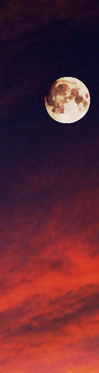

| キミはキメラ 騎士が忘れた白い獣 (StarGazer) | |
| hoshimi12（星見拾弐） | |
| (2017) | |
騎士が忘れた白い獣
（ほしみじゅーに）
登場人物
主人公とヒロイン
秋山義文 ◇ 記憶喪失の青年
ハマル ◇ キメラの少女
株式会社クジョウの人々
八重司郎 ◇ ハマルを追う研究者の青年
九條夕子 ◇ キメラを創った研究者
春原理科雄 ◇ 夕子の下僕
五十嵐雄護 ◇ 捕獲部隊のリーダー
ハマル以外のキメラ
ベニケシ ◇ 巨大なネズミ型キメラ
ドラコ ◇ 小さな竜のようなキメラ
６（名無し） ◇ イヌ型キメラ
プロローグ
月齢09
◇
僕には何もなかった。
だからこそ選ばれたのかもしれない。
何者でもない男に、あまりにも贅沢なものがあてがわれた。
そして僕は対価として、自らの人生を差し出した。
後悔はしていない。
もとより空虚な命だった。
彼女のためなら、僕は、何者にでも――――

闇の中目覚めた僕は、金縛りにあったように動けないことに気づき、パニックになった。
（ここはどこだ）
眼球だけきょろきょろ動かし、状況を探っていく。徐々に闇に目が慣れていく。
見知らぬ天井がある。妙な柄とカタチだ。黄色い布地に、黒いバッテンの縫い目。中央に奥行きがあり、先細りしている。そしてどうやらドーム型の空間――――ああ、そうか。
テントだ。
いま僕は、黄色いテントの中にいるらしい。
テント内には仄かな明かりがあった。ランタンが壁際に置いてあり、終夜灯（ナイトライト）を発している。オレンジ色の優しい光だ。じっと見つめていると、パニクった心がすーっと落ちついていった。
そろそろ金縛り解けたかな？と身体を動かしてみる。すると、動いた。だがどうもまだ鈍い。なにかヘンだ。
「ぅ、ぐっ」
身動ぐと、痺れるような痛みが全身に走った。苦悶の声が漏れる。僕は横になったまま固まった。
しばらくしたら痛みは引いていったが、錆びた針金でも埋め込まれてるみたいに、身体の節々が軋んでいる。
（なにが......どうなってるんだ）
どうにか半身を起こすと、今度は強い目眩を覚えた。血の巡りが急によくなり、こめかみがドクドクとうずき、頭が割れるように痛む。
痛みの中、状況を再度確認。
身体の上にはベージュのタオルケットが掛けられている。下には青い寝袋。さらに下には銀マットが敷かれている。
しかしどうして、テントの中で寝てたんだ？
僕は答えを得るべく、外へ出ることにした。
身体は思うように動かない。這うように進んでいき、テントのファスナーを下ろしていく。フライシート（外張り）のファスナーはすでに開いていた。そういえば中は一人用にしては広い。よくよく見れば、僕が横たわっていた寝袋の右隣に、もうひとつ寝袋があった。またその傍らには一冊の本――『エルマーのぼうけん』と書かれた児童書が添えられている。誰かもう一人、僕の隣で眠っていたようだ。
僕は軋む身体に鞭を打ち、テントを這い出た。
外はテント内より遥かに深い闇に包まれていた。
夜だ。暗くてよく見えない。ただ微かにだが、星明かりが周辺のシルエットを浮かび上がらせている。
（ここは、森か？）
夜空を覆う枝葉の影。手には湿った土の感触。ギー、ギーというコオロギの鳴き声。きょろきょろ辺りを見回す。それ以外の情報は闇が塞いでいる。光が必要だ。
僕は一旦テントの中へ戻り、置いてあったランタンを手に再び外へ出た。辺りを照らし見る。
鬱蒼とした森林だ。多くはブナの木で形成されている。
空気は澄んでおり、深呼吸すると気怠さがいくらかマシになった。
テント周辺は平たい立地だが、四方をよくみると緩やかな傾斜がある。どこかの山の中腹だろうか。
枝葉の向こうには、満天の星。デネブ、アルタイル、ベガ。夏の大三角形が綺麗に浮かんでいる。僕はしばらくその美しい空に見惚れた。夜でも明るい街中では、決して見られない光景だ。月明かりがないのも幸いした。
と、
『ピーーーーーーーーーーーーーーーー』
不意に何かの鳴き声が響き渡った。
鳥だろうか。笛の音のようによく通る鳴き声だった。
「センセイ！」
続いてヒトの声がした。
振りかえると、ランタンを手に小走りに近づいてくる少女の姿があった。
夜に映える美しい「白髪」だ。
「よかった......。やっと起きてくれた」
少女は飛びつくように僕を抱きしめる。
全身が軋み、正直めちゃくちゃ痛かったが、僕は拒まなかった。苦痛に勝る安らぎと温もりがあった。少女はもう離すものかと言わんばかりにぎゅっと僕を抱きしめ続ける。
だが、
「えっ、センセイ？」
情けない。まもなく僕は脱力してしまった。なぜか心底安心してしまって、張り詰めていたものが解けたのだ。
そのまま地面に突っ伏してしまうかと思いきや、少女は意外と力持ちで、僕をしっかりと支えてくれた。
「ムリしちゃダメですよ。ほら、テントにもどりましょう？」
少女はやさしい笑みをみせる。
僕は頷き、少女の肩を借りて歩いていく。
歩きながら、疑問が喉まで出かかっていた。
（キミは、だれだ）
僕は少女のことを知らなかった。
ずっと昔から知っているような気もするけど、ダメだ、わからない。
なにより、
（僕は、だれだ）
首を傾げる。
「ぁ――ぅ――」
少女とコミュニケーションを図ろうとした。
だがダメだった。
喉がひどいことになっているらしい。焼けるような痛みがじわじわ喉奥をこみ上げてくる。声が出せない。
（そうか）
僕はぼーっとする頭で理解した。
記憶喪失。
僕は自分のことも彼女のことも、覚えていないらしい。
テントの中に戻っていく。
倦怠感と脱力感で、僕はすぐさま寝袋に突っ伏した。
「センセイ、おやすみなさい」
少女は僕に寄り添い、頭をそっと撫でてくれた。
僕は目頭が熱くなった。
情けなさか、それとも慈愛に心を打たれたか。
（どうして、忘れちゃったんだろう）
自分のことは正直どうでもよかった。
きっと忘れても構わないくらい、くだらない人生を送ってきたのだろう。そんな確信だけは不思議とある。
でも彼女のことは、どうして忘れてしまったんだろう。
（こんな素敵な子のことを、どうして）
それだけが惜しい。
睡魔が全身をふわふわさせていく。
そして眠りにおちる間際、僕はようやくそれに気づいた。
少女の頭部――――
二本のねじれた「角」が生えている。
おまけに両耳にはふさふさの「垂れ耳」。
（この子は、人間じゃない）
とはいえ僕は、さほど驚かず、すぐにその事実を受けいれた。むしろその姿を愛おしいとさえ感じた。
目覚めてからずっと、不思議なことだらけだ。
もしかしたらこれは夢なのかもしれない。
僕は苦笑いした。すると少女は、僕が微笑みかけたと思ったのだろう。慈愛の笑みを返してくれた。
穏やかな気持ちだ。
僕は包まれるように、ゆっくりと水底へおちていった。
プロローグ ―――― 終
＃１ キミは
月齢10（長潮・十日夜月）
「人間は愛するものによってたやすく騙される」
――――モリエール
『なにやってんだ早く閉鎖しろ！』
モノクロの世界が燃えている。
男の怒声が響く。
女の悲鳴が響く。
バタバタと足音が響き、しかし黒い炎に掻き消されていく。
意識は虚ろ。自分は何者で、此処は何処で、今は何時で、何故、何を、どうしようとしているのか――――
『マスクを外すな！ 殺されるぞ！』
『ひ、ひぃぃぃぃぃぃいい』
憤怒と恐怖の目が並ぶ。
いったい何が、いけなかったのか。
朦朧とした意識の中、辛うじて問いを繰り返す。
そのたび答えはすぐに出た。
存在そのものが罪なのだ。
存在するだけでヒトを苦しめ、怯えさせる。
生まれてはいけない存在だった。
わかりきった答え。
だけど何度も、問いを重ねる。
別の答えが湧いてくるのを、哀れにも期待している。
『 』
『 』
『 』
言語化不可能な無数の声。
ひしめき合い、混ざり合い、調和を生みだす。
皆、共感し、怒りに侵されている。
誰もが封じこめていた。
誰もが気づかぬフリをしていた。
やがて容器は満ち、溢れる隙間も許されず、爆ぜた。
燃えさかる炎が、憎き者たちに迫る。
『このバケモノめ！』
炎の向こうから黒服たちが駆けてくる。
立ち止まり、銃器を構える。
その時「蛇」が笑った。己が尻尾に噛みついて、くるりくるりと宙を舞う。永劫回帰。終わりなき連鎖。
皆も笑う。
笑いが空間に満ちる。
それは蔑みであり、怒りであり、慟哭だった。
創造主たちが、自らの子をバケモノと罵る。これが全く可笑しなことで、哀しいことで。
世界は罪と矛盾で出来ている。
もはや笑うしかない。
バケモノ。
わかっている。皆わかっている。
わかっている。
だから――――
『違う！ バケモノなんかじゃない！』
全てが闇と炎に包まれようとしていた時。
誰かが、叫んだ。
それはなんとも不可思議な主張だった。
バケモノを見て、これはバケモノではありませんと言う。
全くもって可笑しなことだ。
だが誰も笑わなかった。
誰も笑うことなく、その人物を凝視した。
矛盾した言葉。
でもよく考えれば、さしてヘンではないのかもしれない。
だってこの世界は、最初から狂っているんだから。
何でも許されて、何でも許されない。
そうして全ては始まった。
罪と矛盾と狂気の世界が、燃えるように色づき始めた。
目を開くと、布地を透かして淡い光が差しているのが見えた。天井には大きなバッテン模様。
（ここは）
覚えている。テントの中だ。
それ以前の記憶こそ失っていたが、昨夜の出来事はハッキリと覚えていた。
相変わらず身体は鉛みたいに重く、節々が軋んでいる。
隣の寝袋をみる。空だ。
（あの子は）
僕はテントを這いだしていく。
ファスナーを開くと、青白い朝日が目に染みた。快晴だ。
「あっ、センセイ！」
まばゆい光の向こうに、白髪の少女の姿をみた。
徐々に目が慣れていく。
どうやら少女は朝食の準備中だったらしい。
テントと地続きのタープ、その外側にいた。はんごうが置かれた丸形バーベキューコンロを前にしている。
「もう、起きたなら呼んでくれればいいのに」
少女は僕に駆け寄り、肩を貸してくれた。僕はヨタヨタ歩き、コンロの傍の折りたたみ椅子になんとか腰を下ろす。
「体調、どうですか？」
どうですかと聞かれても。正直なところ、過去に類を見ないくらい最悪な体調だった。いや......過去なんてわからないんだが。
僕は苦笑いし、首を横に振る。ヘンに見栄を張る意味もないとおもった。
そうしてついでに、「声」のことを伝えることにした。人差し指で喉を指し示す。
「喉が、どうかしたんですか？」
僕は大口を開け、声を出すジェスチャーをし、喉の前で指をバッテンにする。
「えっ、声が出せないんですか!?」
伝わったらしい。察しの良い子だ。
「そんな......」
少女は悲痛な表情で立ち上がり、僕の真ん前まできた。
「『あーん』て、してもらっていいですか？」
僕は言われるがまま口を開ける。
少女は僕の喉奥を覗き込み、眉をひそめる。
「喉......かなり荒れてますね。でもなんだろう......まったく声が出せないんですか？」
僕はこくりと頷く。
「......もしかしたら、喉の状態とはべつに、ショックで一時的な失語状態にあるのかもしれません」
失語状態。
思いがけぬ言葉に僕は目を見開いた。
「それに、記憶もすこし......曖昧なんでしょうか」
ハマルは僕の状態を見てそれも察したらしい。
失語に、記憶喪失――
脳になにかダメージがいったのだろうか。少女の言うその「ショック」が気になった。しかし少女は語らない。
「で、でもだいじょうぶですよ！ センセイなら、だいじょうぶです。身体も含めて、すぐ良くなりますよ！」
なんの気休めか少女は言う。
僕なら大丈夫？ なにを根拠に言っているのだろうか。
少女の目が潤んでいく。
「............ごめんなさい、センセイ」
いよいよ少女は僕に縋りつき、うつむいて泣きだした。
なぜなのだろう。よほど僕を大切に想ってくれている？ それとも、僕がこうなってしまったのは、彼女に少なからず原因があったのだろうか。
どちらにせよ――
僕は彼女の頭を、そっと撫でる。
昨夜、彼女がそうしてくれたように。
（この子を哀しませたくない）
記憶はない。
だがその気持ちだけは、すでにそこに在った。
僕は少女の肩をぽんぽんと叩き、注意を引いてから、指でそれを指し示す。
少女はようやく顔をあげる。
「えっ？ あっ――――はんごう！」
コンロのはんごうがカタカタと音を立てていた。お湯が吹きこぼれている。
少女ははんぼうに駆け寄り、軍手を装着、テーブルの木板のうえでひっくり返す。それからバツがわるそうに僕を振り返り、涙をぬぐいながら苦笑いしていた。
少しだけ場が和んだ。
◇
白米を蒸らすのにまだ時間がかかるらしい。
少女はその間に、テント内のボックスから何かを取りだして戻ってきた。
「はいセンセイ、これ」
ノートと、油性ペン。
ノートにはヒモがついており、少女はそっと僕の首にかけてくれた。
「なにか言いたいことがあるときは、これに書いてください。筆談ってやつです」
筆談。なるほど、その手があったか。
（あれ？ ノートの表紙に......）
表紙にまるっこい可愛らしい文字がある。
ハマル。
日記。
そう書かれている。
「あっ、そのノート余ってたんで、気にしないでください。ちょっと最初の数ページ、切っちゃってますけど......」
ハマル。
僕はその名を胸の奥で反芻した。
それが少女の名。
ハマル。
とても大切な響きにおもえる。
僕は使いかけのノートを開き、まずこの少女に――ハマルに伝えたいことを書いた。
『ありがとう』
ハマルは頷き、微笑んで返してくれた。
柔らかく温かい笑みだ。
僕はその笑みをみるだけで、幸せな気持ちになれる。
だが同時に、不安が訪れた。
それは記憶に関することだった。
（思い出さないほうが、いいこともあるんじゃないか）
ヒトは強い幸せを感じた時、それを失った時のことを図らずも想像してしまう。だからいつまでも幸せを追い続け、いつまでも影に怯える。
第六感めいたものだったのだろうか。
それとも過去の僕が囁いたのだろうか。
（このまま無知であるほうが、僕は幸せなんじゃないか）
角の生えた少女。
通常ならざるその姿。
疑問さえ浮かべなければ――なんてことはない。
ただの健気で可愛らしい少女だ。
『キミは何者なんだ』
『ここはどこなんだ』
『僕はどうしてこんな状態なんだ』
もっと彼女に質問をぶつける選択肢はあった。
だが僕にはできなかった。
今の僕は疲れ果てていた。現実なんて、真実なんて、どうだっていい。ただこの穏やかな場所で、安らぎに包まれていたい。そう思った。
彼女の深淵を覗くことを、無意識に怖れた。
上っ面の可愛らしい部分だけを――見ていたかったんだ。
◇
（ん？）
椅子にもたれて朝食を待つ間。
僕はようやく、それに気がついた。
下腹部のそれだ。
違和感があった。
（げっ）
僕はズボンを少しだけ伸ばし、中を見る。
恐ろしいものがそこにあった。
誰でも知っているし、一生のうちに必ず世話になるであろうものだ。
（オムツ!?）
僕は総毛立った。
なぜこんなものが自分の下腹部に。僕は赤ん坊でもないし、ましてや膀胱のゆるい年寄りでもない。
「あっ、それはですね......」
気がついたハマルがひょっこり顔を出す。
すこし申し訳なさそうな顔をしている。
「センセイ、ここにきてから三日間、ずっと眠っていたんで」
三日間、ずっと眠っていた？ 昏睡状態だったのか。
どうしてそんなことになったのか。正直気になったが、今の僕は尋ねられなかった。
ともあれ、間違いないのは......この三日間、ハマルに「下の世話」までさせてしまったということだ。
頭が真っ白になる。
やがて凄まじい羞恥心と、罪悪感がこみ上げてきた。
『ごめん！』
僕は土下座し、筆談ノートを掲げた。
こんな少女に下の世話をさせてしまうなんて――
「いいんですよ、センセイ」
ハマルはふるふると首を横にふる。
「汚いとか、そんな風にはぜんぜん思わなかったんで。だって、センセイのですし」
照れたように微笑んでいる。
僕は思わず天を仰いだ。
（天使かよ......）
ハマルに後光が差して見える。
しかし、わからない。
（どうしてこの子は）
記憶を失ってから、まだ数えるほどしか会話していない。
だがすでに、ハマルの健気さと、純真な好意は痛いほど伝わっていた。
（どうしてこの子は、『この男』のことを、そこまで）
よくわからない感情だった。
僕は「記憶を失う前の僕」に、すこし嫉妬した。
よほど彼女に貸しがあったのだろうか。
それともよほど素敵な男前だったのだろうか。
（いやいや、それはないだろ）
確信としてある。僕はヘタレだ。記憶を失う前もヘタレ男だったに違いない。
どうしてそんなやつが、この子に好かれているのだろう。よほどやむを得ない事情が、あったのだろうか。
『なにからなにまで、ありがとう』
僕は頭を上げ、改めてノートに感謝の言葉を書いた。
ごめんと言うよりは、いくらか心が晴れる。
「どういたしまして。――それじゃあセンセイ、朝ごはんにしましょうか？」
ハマルは微笑みながら提案する。
僕は頷きながら、心の中でおもった。
（食事前にごめん......）
顔を真っ赤にしつつ席につく。
ごはんを食べたあと、急いでオムツを脱ぐことを決心した。
◇
朝食はじつに美味だった。
はんごうで焚かれたおかゆだ。白米と山菜とお肉で煮詰められている。味つけも盛りつけもシンプルだったが、やさしい味で、軋む身体によく染みた。
肉は、鳥肉だろうか。ブヨブヨした皮の部分がとても美味い。細かい切り込みが入っていて、味がよく染みている。薬味のミツバのシャキシャキが良いアクセントだ。あと妙に毒々しい赤いキノコが入っていたが、汁を吸ってプニプニした食感が面白く、美味かった。
ハマルの料理の腕は天下一品のようだ。
おまけに山菜やキノコの目利きもできるらしい。
「セ、センセイ、そんなに食べて大丈夫ですか？ 三日ぶりの食事ですし、すこしにしておいたほうが......」
ハマルに心配されたが、箸は止まらない。
お昼用だったらしい予備も、ぺろりと平らげてしまった。僕は膨らんだ腹をぽんぽんと叩き、椅子にふんぞり返る。ハマルはその様子をみてフフッと微笑む。
『ごちそうさま』
「はい、ごちそうさまでした」
ハマルは空になった食器をカゴに入れていく。これから洗いにいくらしい。近くに洗い場があるようだ。
僕は何か手伝えないかと、立ち上がろうとしたが、
「きもちだけでうれしいです。どうかいまは、安静に」
ハマルにやんわりと止められた。
僕は小さく頭をさげ、椅子にもどる。たしかに......今ムリに動いても、逆に迷惑をかけてしまうかもしれない。
ハマルがカゴを持って去っていくのを静かに見送った。
（さて、これからどうしよう）
ハマルの帰りを待つ間、僕は「これから」のことを考えた。
記憶がないのだ。
そして目的もない。
食事中、ハマルは僕の身体を気遣うばかりで、僕に何が起きたのかは、一向に語ろうとしなかった。きっと語りたくないのだろうと、その雰囲気から察した。
（彼女を傷つけたくない）
僕はまだ気持ちの整理がついていなかった。
だから答えは保留にして、今はただ、彼女と過ごす時間のことだけを考えることにした。
何があったのかを彼女と語るのは、僕に「声」が戻ってからでも遅くはないだろう――――そう、この時は思ったのだ。
◇
「センセイ、立ってみてもらっていいですか？」
食器洗いから戻ったハマルは、早速僕にそう言った。
僕は言われるがまま立ち上がるが、バランスを崩し、よろめいて彼女に抱きついてしまう。ハマルは嫌がる素振りもみせず、僕を抱き留め、そっと椅子に座らせてくれた。
それからハマルは、モミモミと僕の手脚を触りはじめた。
「うーん。カラダの左側が、ちょっと動かしにくい感じですか？」
僕はこくりと頷く。
言われてみればその通りだ。左手と左脚が、思うように動かない。
「左半身が、麻痺してるみたいですね」
ハマルは頷きながら告げる。
（麻痺......）
記憶喪失、失語、おまけに左半身の麻痺。ボロボロにもほどがある。改めてそんな状況を俯瞰して、僕は気が滅入った。
「だいじょうぶですよ！ きっとよくなります。わたしも回復のお手伝いしますから」
落ちこんだのを察したらしい。ハマルは自分の胸をぽむんと叩き、自信ありげに告げる。
その自信はどこから来るのだろう。
励ますための虚勢だろうか。
「とにかく、安心してください。わたしがぜんぶお世話しますから。くるしいときも、つらいときも、ぜんぶぜんぶ」
なんとも心強い言葉だった。健気で献身的なハマルの姿、本当に天使のようにおもえる。
同時に僕は、情けなくなった。
（本当は僕が......守りたいくらいなのに）
あどけない笑顔。まだ幼さが残っている。
ハマルは少女にしては賢く気丈なようだが、内心まではわからない。この慈愛に満ちた笑みの向こうに、哀しみや不安を隠していないとも限らない。いや、隠しているに違いない。
『ありがとう。僕もがんばるよ』
虚勢。見栄。
ハマルに負けじと、僕も気を張る。
そしてその気持ちを、本物にしなければ。
午後からその「リハビリ」は始まった。
現時点で記憶喪失や失語はどうにもならないが、身体面のほうはまだ希望がありそうだった。
左半身の麻痺。言いかえれば右半身はふつうに動くのだ。左半身を補いつつ、歩く訓練をスタートした。
「杖は健側で持ってください。患側をささえるように」
健側。麻痺してない側の半身。
患側。麻痺してる側の半身。
どうやらハマルは、自前のノートパソコンでパパっとリハビリ方法を調べあげたらしい。
そして、この杖。
「えへへー。朝はやくおきて『でぃーあいわい』しました」
ハマルは誇らしげに答える。
ＤＩＹ。ドゥーイットユアセルフ、「自分で行う」。つまり専門業でない人間がする自作や修繕のことだ。
この杖はハマルの手作りらしい。素材は森のブナ。
（スゴイなこれ......）
まさかの四つ足ステッキである。
金具や接着剤などは一切使わず、はめ込みによって各種パーツを接合している。しかもめちゃくちゃ丈夫そうだ。専門職人もビックリの加工技術だろう。手先が器用なんていうレベルじゃない。
「ブナ材、すっごくかたくて加工たいへんでした」
ハマルはニコニコしながらぜんぜん大変じゃなさそうに言う。
『これ、ぜんぶインターネットで勉強したの？』
「ぜんぶじゃないですよ。ＤＩＹはもともと、センセイに教わりました」
僕に？
案の定覚えはなかった。
というかこんな超高等技術を自分が持っているとは思えない。きっと、キッカケだけ僕から教わり、あとはハマルが自己流で学んでいったのだろう。
料理の腕もすごい上に、こんなことまで出来るなんて......。
「センセイにはほかにも、いろんなことを教えてもらいました。いまのわたしがいるのは、センセイのおかげなんです」
センセイ。先生。
違和感しかない。
僕が、こんな優れた彼女の、先生だったなんて。
（この子はきっと、天才の類いなんだろう）
細かな所作や、ふと見せる知識や技術力に、「常人」とは明らかにちがう資質を覗かせていた。
二本のねじれた角や、ふさふさの垂れ耳も......。
彼女はふつうの人間ではなく、また、人間よりも遥かに優れた存在なのかもしれない。
「こんなこというと、おこられるかもしれませんけど」
ん？
「わたしすこし、うれしいんです」
うれしい？
「教えてられてばっかりだったわたしが、センセイに、こうして何かを教えてる。それがちょっとだけ、うれしいんです。......ごめんなさい」
僕は首を横に振り、笑顔をみせる。
『ありがとう。僕もうれしいよ』
ありのままの気持ちだった。
ハマルは溜めた涙を指でぬぐい、僕を抱きしめる。身体はすこし震えている。気丈に振るまいながら、やはり内心では不安なようだ。
風が吹き、木々がこすれる音がした。
他には雑音もなにもない、静かな森だ。
僕はふと思った。
きっと彼女もそう思った。
（この時間が、ずっと続けばいいのに）
僕は自由の効く右腕で、そっと彼女を抱き返した。
◇
リハビリのあと、僕はハマルのマッサージを受けた。
マットの上でむにむにと全身をほぐしてもらう。
「センセイ、きもちいいですか？」
僕はうつぶせの状態でうんうん頷く。
じつに気持ちがよかった。専門の資格でも持ってるんじゃないかというくらい、ハマルの手際は良い。リハビリ疲れで強ばった身体がほぐれていく。
そうして僕は、いつしか眠ってしまったらしい。
次に気がついたとき、マッサージの感触が変わっていた。
ちょっとチクチクするような。
（あの、ハマルさん......？）
尖ったものでザクザク刺されているような。
ちょっと痛い。
いや、ちょっとじゃない。すごく痛い。
僕はガマンできずに身をよじり、振り返った。
（なっ）
目が合う。
そこにいたのはハマルではなかった。
ましてやヒトの姿もしていない。
（トカゲ？）
奇妙な姿だ。一見してトカゲのような爬虫類。だが肩からはコウモリじみた大きな「翼」が。また頭部からは鋭い二本の角が生えている。
（竜、だ）
伝説のドラゴンを、そっくりそのまま小型化したような。
竜は僕の背中に乗り、自らの翼をつついて「お手入れ」をしている。そのお手入れのせいで、鉤爪がザクザクと僕の背中に刺さっていたらしい。
「あー、ドラコ！ ダメでしょ、イタズラしちゃー」
ハマルが戻ってきた。手には二つのカップ。どうやら僕がうたた寝している間に、ハーブティーを淹れてくれたようだ。
ハマルはカップをテーブルに置いて、僕の背中から竜を――ドラコを引き剥がし、そっと地面に置いた。
ドラコはピィピィ媚びた鳴き声をあげ、ハマルの脚に身体をすり寄せる。なるほど、ハマルに甘えたくてわざとイタズラしたのかもしれない。
「ごめんなさいセンセイ......痛かったですか？」
僕は苦笑しつつ頷く。
『まあ、良いツボ押しになったかな？』
筆談ノートをみせると、ハマルは口元を押さえフフッと笑った。ドラコは面白くなさそうに「ビィ～～......」と鳴く。自分がハマルに構ってもらいたいのに～～、と主張しているのが滲みでていた。甘えんぼうのようだ。
『この子は？』
「あ、はい。この子はドラコ。......私とおなじ、キメラです」
キメラ。
知らない言葉ではない。
頭は獅子、胴は山羊、尾は蛇――まぜこぜの「バケモノ」。よくゲームなんかにモンスターとして出てくる。あとは単純に「混ざっている」という意味でも使われている。
「あっ、その、キメラっていうのは......」
ハマルは言いよどむ。
キメラについて、あまり語りたくないのだろう。
「わたしたちキメラは......カンタンにいうと、人工的に創られた、新しい種族というか......その......」
ハマルはうつむき、泣きそうになっている。
「......わたし、人間じゃないんです」
人間じゃない。見た目通りの事実だが、改めて言葉にしてみると重かった。きっとハマルもそう感じたのだろう。
「ごめんなさい......。この告白するの......二回目で」
目元に光るものが見えた。当時の感情が蘇ったのかもしれない。
僕はというと、霧がかかったみたいに思い出せなかった。ただきっと、当時のハマルも、すごく勇気を出して告白してくれたに違いない。そして当時の僕は、それを受けいれた。だったらもう答えは決まっている。
『ありがとう、話してくれて。僕はキミが何者でも、ぜんぜん気にしないよ』
「センセイ......」
ハマルは涙をぬぐい、僕を見つめる。
あまり嬉しそうな顔ではない。むしろ疑心と不安に押しつぶされそうな、哀しい瞳だった。
言葉に書きだしてみて、僕自身も疑問だった。果たして僕は、彼女が何者であっても、本当に気にせず接することができるのだろうか。
『ごめんね、記憶喪失なんかになっちゃって』
「あ、謝らないでください！ センセイがわるいんじゃありません！」
ハマルは叫ぶ。
たしかに、謝っても仕方のないことかもしれない。僕は反省した。今考えるべきは、これからのことか。
ピィ～～～。ドラコが鳴いた。僕のスネをくちばしでツンツン突いている。ハマルを泣かせるな～～、と怒っているみたいだ。僕はなおさら申し訳なくなった。
ハマルに語らず、内側で情報を整理する。
（キメラ、か）
ハマルはどこかで、誰かに創られた。そして今、こんな山奥で僕とキャンプをしている。状況については詳しく語りたがらない。それだけでだいぶ察しがつくような気がした。
ハマルはどこからか、逃げだしてきたのだ。
僕がこんな状態になったのは、逃げだす最中に「何か」があったせいか。あるいは、僕がこうなったことが、ハマルが逃げだすキッカケになったのか......。
なんにせよ、彼女が僕にとって大切な存在であることは、変わりないだろう。
（「前の僕」は、この子のために、全てを棄てたんだろう）
また奇妙な確信があった。
記憶が疼いているのかもしれない。
完全に喪失したというより、何かでフタをされているかのような、霧で隠されているかのような、もどかしい距離を感じる。
頭が痛い。
今これ以上の熟考は毒だろう。
『ドラコもここで、いっしょに暮らしてるの？』
僕は話題を変えた。
ハマルはこくりと頷く。
「はい。でもドラコ、すごく気分屋なんで......。いつもふらふらどこかへ出かけては、たまにこうして戻ってくる感じです」
ドラコはピィピィ鳴き、ハマルの足元へぴょんぴょん跳ねていく。長い尻尾でペシペシとハマルの脚を叩きはじめる。
「はいはい、いまゴハンあげるよー」
ハマルはテント脇のクーラーボックスまでいき、中から何かを取りだし、投げた。
ドラコは跳躍してそれをキャッチ。俊敏だ。周辺をきょろきょろ見回し、エサをとられないよう警戒している。そうしてエサを咥えたまま、森の奥へ駆けていってしまった。
僕は声に出さずに笑った。
ハマルに甘えたいだけ甘え、腹がへったらエサの催促をし、もらえるものをもらえたらさっさと去っていく。なんと自由気ままな竜だろう。
「あの子、すごく賢い子なんですけど、思考の大部分がゴハンというか......」
『わかるわかる。キミの料理、すごく美味しいし』
僕は今朝の料理を思い出しながら頷く。ハマルは苦笑した。
「ありがとうございます。でもいま投げたのは料理じゃなくて、カ――」
言いかけてハマルはハッと目を見開き、口元を両手で塞いだ。
（カ？）
ハマルは答えず、突然ぽんっと両手を叩いた。
「そ、そうだ！ ハーブティーいれたんです。センセイはハチミツどうしますか？」
ハマルはくるっとターンしてテーブルまでいき、カップを持って戻ってきた。白い湯気がのぼっている。僕は火傷しないようそっとカップを受けとった。ハチミツは遠慮しておいた。
「それじゃあ、マッサージ再開しますねー」
椅子へ移動する。ハマルは僕の背後にまわり、またもみもみとマッサージをはじめる。僕は至福を感じ、自然、目を瞑った。
安らぎの闇に包まれ、脳が熟考を再開する。昨夜から今に至るまでの情報が、目まぐるしく整理されていく。
そしてふと、ある推測が脳裏を過ぎった。
（このキャンプ、彼女がひとりで用意したとは考えづらい）
いくらハマルが賢く器用だといっても、昏睡状態の僕を世話しながら、このキャンプを用意するのはムリがあるだろう。ましてここへは、逃げるようにやってきたはずだ。準備期間だってほとんど無かったに違いない。
僕がなにか、根本的な思い違いをしているならともかく、おそらくは、
（協力者が、いるな）
誰かが、ハマルの逃亡生活を手伝っている。
だがどうして、その協力者はここにいないんだ？
今はたまたまいないだけか？ いつかひょっこり現れるのか？
わからない。
わからないことだらけだ。
（これからハマルは、どうするつもりなんだろう）
それもわからない。
聞く勇気もなかった。聞けば彼女を追い詰めるような気がした。
でももしかしたら、彼女もまた、僕に答えを求めているのかも。
（どうしよう、かな）
僕は天を仰いだ。
緑の隙間から青が見える。
それがすこしずつ、赤へ。
まもなく日が暮れる。
そして夕刻、その人物は僕の前に現れた。

リハビリとマッサージの後、僕は用を足しに森の奥へ向かった。
キャンプ地にはトイレテント（縦長テントに簡易トイレが設置されている）もあったが、後処理が面倒そうだし、ハマルに負担をかけまいと森で直にすることにした。ハマルからは『この葉っぱオシリふくのにオススメですよ！』と笑顔でレクチャーされた。
彼女はついていくと言い張ったが、さすがに断った。落ちついて出来やしないし、今は杖のおかげで歩けないこともない。それとオムツはもう外してある。
『あまり、森の奥へはいかないでくださいね』
出かける直前、ハマルは妙に静かな声で言った。
なんでも崖があるとかで、地形が危なっかしいんだとか。あと同じような景色が続くから、道に迷いやすいのだという。
（ただ......あんまりキャンプ地のそばでもなぁ）
なんというか、恥ずかしい。
僕はハマルの忠告を無視して、ずんずん森の奥へ進んでいった。
ついでに森を観察する。背の高いブナの木が点在していて、地面も空気もすこし湿っている。そこらの岩石には緑色のコケがびっしり張りついている。近くに清流もあるようだ。
（くそっ、蚊が多いな）
ペチっと首元を手で叩く。手を見ると、潰れた蚊と、べったり血がついていた。だいぶ吸われてしまった。
自然豊かだが、原生の森というわけでもないらしい。キャンプ地周辺には伐採跡があったし、地面も平らに整備されていた。人の手が入っている。ただ、ヒトが頻繁に出入りしている気配は感じられない。人里から遠いようだ。
（えっ）
僕は不意にそれに気づいた。
道の途中、ブナの木が倒れていた。それだけならなんてこともないが、いかんせん数が多い。大小合わせて十本以上。互いに距離も離れているというのに、無数のブナの木が無残に倒れている。僕が両腕で抱きしめられないような巨木までも。
（なんだよ、これ）
折れ方が妙だった。腐って倒れたとも違うし、チェーンソーなどで切り倒されたとも違う。まるで「薙ぎ倒された」ような折れ痕だった。
（台風でもきたのか？）
そんな風に想像したが、あまりに局所的すぎる。こんな地形で竜巻が発生するわけもないし。
僕は妙に気になり、折れたブナの木に近づいた。折れ痕はまだ真新しい。数日と経っていないようだ。
と、手にぬるっとした感触があった。見ると、赤黒い液体がついている。ブナの樹液かと思ったが、違った。
（これ......血か？）
デッカい蚊が潰れた痕、なんてわけもあるまい。
僕は急に気味が悪くなった。
無残に折れた木々の痕が、とんでもない大きさのクマか何かが暴れ回った跡のように見え、恐ろしくなった。それにたぶん、こんな風に暴れ回るくらいだから、頭も狂っているに違いない。
僕は血濡れた手をブナの皮で拭き、その場を足早に去った。
安住の地（トイレ）探しはその後も続いた。
僕は森を練り歩く。
実に良い運動になった。滝汗が出てくるくらいだ。
というか、
（道に、迷った）
僕は今になって猛省した。
ハマルの忠告をちゃんと聞くべきだった。
同じような景色が続き、いま自分がどこを歩いているのか、ぜんぜんわからない。大声を出してハマルを呼ぼうにも、いまは喉が鳴らないじゃないか。
最悪だ。遭難じゃんこれ。
いつの間にか尿意も引っ込んでいる。
（ん？）
不意にカサカサと落ち葉のこすれる音がした。
風の仕業かとおもったが、どうも違う。音は一定のリズムで近づいてくる。
まさか、ハマルが探しに来てくれたのだろうか。僕がなかなか帰ってこないものだから、心配してくれて？
僕は喜んで近づいていこうとして、踏み留まった。
何かの獣、という可能性もある。それこそさっきの木々を薙ぎ倒したクマか何かのような......。
音はゆっくり近づいてくる。
僕はおそるおそる振り返った。
そこにいたのは、獣でもハマルでもなかった。
「ふふっ、ひさしぶりぃ～」
見知らぬ男女。
ひとりは歪な笑みを浮かべた黒スーツの中年女。
もうひとりは野球帽を被った鋭い目の壮年男。
「あれ、きょうメガネは？ って、前から伊達だっけ」
女はじろじろ僕を見る。
（この人、僕を知ってる？）
二人ともタダ者でない雰囲気をまとっている。
それにすこし、「ヘンなニオイ」がする。薬品のニオイ？ 森のニオイを更に濃くしたかのような――
「あらあらぁ、ボロボロじゃな～い。杖なんかついちゃって、ケガしてんの？ いやいや、あなたがまさかねぇ～？」
女は大層愉しげに言う。僕の状態がじつに興味深いと言いたげだった。一方男のほうは、影のように沈黙しつづけている。
「うーん？ どこケガしてんのー？」
女はニヤニヤしながら僕の身体をペタペタ触ってくる。
僕は嫌がり身をよじったが、女は容赦ない。
「ん？ なにこのノート」
首からさげた筆談ノート。女に奪われかけ、僕は辛うじてそれを阻んだ。女はきょとんとしたあと、「あぁ」と頷く。
「なるほどぉ、筆談ノートね」
女はすぐさま察したらしい。
「で、記憶喪失？」
それも当たりだった。ふざけた調子だが、切れ者らしい。
この女は何者だ。
「杖ついてるのは、左側が麻痺でもしてんのかしらね」
それも当たり。女の分析はまるで見てきたかのように正確だった。もしかしたら、僕がこうなった原因を知る人物なのかもしれない。
「ふふっ、あははははははっ！ 先生もつくづく幸が薄いわねぇ！ あー、いえ、むしろこれは運がいいのかしら？」
女はよくわからないことを言う。
「さて、じゃあ改めて紹介しましょうか。私は九條夕子。あなたのパートナー、ハマルを創った研究者よ」
僕は固まった。
女、九條夕子は笑っている。
（ハマルを、創った？）
まもなく理解が追いついた。
ハマルを――――キメラを創った、研究者。
「で、こっちは春原理科雄。私の下僕。まあ影の薄いモブよ。忘れてもべつにかまやしないわ」
九條夕子は冗談めかして紹介する。
影のような男、春原理科雄はにこりともせず、僕に向かって小さく頭をさげる。その細い目からはなんの感情も読みとれない。おまけに野球帽に指をかけ、すぐに視線を隠してしまった。シャイなのか、影に徹しているのか。
『すいません、キャンプ地でお話しませんか』
僕は筆談ノートでそう提案した。
ここで立ち話もなんだ。踵を返し、キャンプ地へ向かおうとする。
だが、
「ダメダメ。ハマルの近くには行けないの」
九條夕子に腕をつかまれ止められた。意外と強い力だった。手には黒い手袋がはめられている。
『どうして？』
「今のあの子は、危険な状態なのよ」
危険？
わけがわからない。
ハマルが危険な状態？ 彼女の身が危険ということなのか、それとも――――
「両方の意味で、危険なの」
九條夕子はこちらの疑問を読みとったように告げる。
「ここで話しましょう。十分離れてるし、近くに川もあるから、風がニオイを遮ってくれるでしょう。まー、それでもハマルは感づいちゃうかもしれないけど、その時はその時で」
九條夕子は僕の腕から手を離す。
もう何がなんだか。僕はひたすら混乱していた。
だがひとつ、ハッキリしていることがある。
『すいません』
「ん？ なに？ ダメって？」
『トイレに、いきたいんですが』
「あははははははははははははははははははははははははははははははははははははははははははっ！」
九條夕子は爆笑した。
「ごめんごめん、トイレの途中だったのねぇ！ で、ウンチ？ オシッコ？ どっち？」
僕はおそらく顔を真っ赤にしながら答えた。
『オシッコです』
「それじゃ、ちょっとそこらでやってきなさいよ。私たちココで待ってるから。あっ、あんまり遠くにいかないようにね！」
僕は杖をついて急いでその場を離れた。
まったく、一体なんなのか。
すっかりペースを握られてしまった。
◇
「手、洗ったぁ？ エンガチョエンガチョ」
お小水から戻ると、ニヤニヤ笑顔の九條夕子が出迎えた。
『触ってません』
筆談ノートでそれを見せると、九條夕子は一分ほど爆笑していた。
「はー、たのし。やっぱりあなた面白いわぁ」
九條夕子は折れた大木に腰かけ、脚を組む。
春原理科雄は変わらず立っている。
僕は傍の石のうえに座った。
「で、その記憶喪失だけど、どの程度の症状なの？」
僕は首を傾げる。
どうにも説明しづらい。声だって出ないし......。
「ほれ。これ貸してあげるから、チェックしてみなさい」
九條夕子はぽいっと何かを投げ、僕は慌ててキャッチした。それは電子端末だった。ページが表示されており、チェックリストがずらーーっと並んでいる。
「制限時間は三分よぉ。はい、よーいスタートっ！」
えっ、と僕は困惑し、言われた通り急いで項目を確認していく。
１，置き忘れが目立つようになった。
２，時間感覚が怪しくなった。
３，計算間違いが増えた。
４，道に迷いやすくなった。
５，片麻痺あるいは失語症がある。
６，よくむせる。
７，高血圧あるいは糖尿病である。
８，頭に痛みがある
などなど。
認知症やその他記憶障害も含めた広範なチェックリストなのかもしれない。全五十項目（派生を含めるとそれ以上）もあって、三分なんかじゃ全然足りなかった。
「しゅーりょー！」
九條夕子は僕から端末をかっさらい、ニヤニヤ笑いながら画面を指でなぞり始める。
僕は深くため息を吐いた。
なんだろう......この人の相手をしているとどんどんエネルギーが吸いとられていくような気がする。
「うーん、重症ねこりゃ。あっはっはっは！」
なぜ笑う。
「自分の名前も思い出せないとはねぇ。あなたは記憶喪失の原因、なんだとおもうの？」
いや、こっちが聞きたいんですけど。
「まあ可能性は二つよねぇ。なんらかの影響で脳に深刻なダメージを受けたか、あるいは――――心が思い出すことを拒絶しているか」
心が、拒絶？
僕の心が記憶喪失を生んだというのか？ そんなバカな。
「まぁいいわ。じゃ、なーんにも知らないテイで話しましょ。まず状況の説明からかしらねぇ。めんどっちーけど、かるく話しましょうか」
九條夕子は本当にかるく、ざっくり端折りながら説明をはじめた。
「あなたはもともと、ハマルのパートナーだった。で、紆余曲折あってね、二人で平和に暮らしてたんだけど、ちょっと邪魔者がはいったのよぉ～」
邪魔者。それを告げた時の九條夕子の眼はギラついていた。ふざけた表情の向こうに、確かな怒りを宿している。
「そいつはハマルを、手中に収めようとしたの。で、ハマルは抵抗した。あなたも抵抗した。結果が、コレ。ハマルは傷ついたあなたをココへ運んで、籠城をはじめた」
籠城......。
ハマルの不安に満ちた表情を思い出した。
僕が眠り続けていたこの数日間、押しつぶされそうなほど辛かったに違いない。
僕は自由の効く右拳をギリギリと握りしめた。
身体が燃えるように熱い。九條夕子の怒りが、僕にまで感染したかのようだ。僕をこんな風にし、ハマルの心を傷つけ、寂しい森の奥深くへと追いやった。
許せない。
だが......拭えぬ疑心もあった。
（この女は、本当のことを言っているのか？）
見るからに胡散臭い女だ。連れてる男も胡散臭い。
僕と以前から交流があるような口ぶりだが、確かなことはわからない。今の僕は記憶喪失中で、おまけにこの女は一瞬で僕の状態を見抜いた。これだけ聡ければ、嘘を吹き込むための頭だって回るはずだ。
『あなたの目的は、なんですか』
僕は九條夕子に尋ねた。
この女は信用できない。「過去の僕」からの忠告だろうか、確信に近いものがすでにあった。胸の奥で疑惑が蠢いている。
九條夕子は笑う。
「前にも言ったとおりよ。私の目的は、キメラの王国をつくること」
僕は目をむいた。
キメラの王国？ なに言ってんだこのマッドサイエンティストの中年女は。
「私の全てはキメラ。私はキメラのためだけに生きている」
僕は背筋が冷えるのを感じた。
九條夕子の言葉。どこまでも深く、濁っていて、熱く、滾っていた。
今のこの言葉だけは、限りなく真実であるように思えた。
「私が今、あなたにお願いしたいことは、たったひとつよ」
九條夕子は懐からそれを取りだす。
それは半透明の小さなピルケースだった。
「この薬を、ハマルに飲ませてあげてほしいの」
薬を？
僕は訝しんだ。
赤色のカプセル剤。
一体なんの薬だろう。
「この薬を飲ませれば、ハマルの危険な状態を終わらせることができる。で、それからあなたたちを回収して、もといた街まで責任をもって送り届ける。あなたたちは今まで通りの、平穏な日常に戻れる」
僕は返事ができなかった。
九條夕子。春原理科雄。
果たして信用に足る人物なのか。
記憶喪失の僕にとっては、初対面にも等しく、なんの判断もつかなかった。
だが、
（このヒトは......ウソはついていない）
なぜだかそう思えた。
滾る瞳がみせる妙な説得力のせいだろうか。
この女は狂っているが、ウソはつかない――――
（だがなにか、隠している）
九條夕子は狡賢い。
自分が不利になる情報を、隠しているフシがあった。
そして僕はひとつ、それを見抜いた。
『あなたの研究者仲間ですか、その当事者って』
ぴくりと九條夕子の眉が動く。
ふふふと笑い声が漏れる。
「仲間じゃないわ。ただ、同じ組織なのは間違いないわねぇ。秋山先生、あなたホントに記憶喪失なの？」
逆に九條夕子が疑念の目を向けてきた。
「あなたもオトナならわかるでしょう。組織っていっても一枚岩じゃない、ごちゃごちゃした思想の集まりなの。私みたいに『新人類の栄えある未来』を視てる人間もいれば、真逆なごりっごりの保守思想者もいる。連中にハマルを渡せば、ロクなことにはならないわ。それこそ彼女の未来を潰される」
ハマルの未来を、潰される......。
「わるいけど、悩んでる時間はそれほど残ってないの」
えっ。
「ハマルの危険な状態もそうだけど、さっき言った邪魔者があなたたちを狙ってるのよ。いずれこの場所にも気づくでしょう。いや――もう気づいてるかもねぇ」
九條夕子は折れた大木から立ち上がり、僕に近づいてきた。
「薬、一応預けとくわ。あとコレ」
九條夕子はピルケースともうひとつ、小さなコインを手渡してきた。
「連絡用の端末よ。ちっちゃいけど高性能、まったく問題なく使えるから。できれば私たちのことはハマルに黙っててほしいけど、まあ、あなたの判断に任せるわ」
任せるって......。
「私たちはこれから、あなたと接触したことを『上』に報告して、件の邪魔者を排除できないか交渉してくるわ。とりあえずそんなトコで。――じゃ、アディオス」
九條夕子は言うだけ言って去っていく。春原理科雄もあとに続く。
（待てよ！）
まだ聞きたいことがある。僕は急いで筆談ノートに言葉を書き殴り、パンッと両手で音をたてて二人を振り返らせた。
この答え次第で、彼らに対する信頼の尺度がまた変わるかもしれない。
『ハマルの籠城を手伝ったのは、あなたたちですか？』
協力者であるのか。それを知りたかった。
九條夕子は一瞬、黙った。
それから告げた。
「いえ」
短い返事だった。
僕は眉をひそめる。
（じゃあ、誰だよ）
純粋に疑問だった。
九條夕子は見透かしたようにそれに答える。
「まあ、ハマルならべつに、不思議なことじゃないわ」
言葉の意味は不明だった。
ハマルなら一人で、僕をここまで運び、キャンプ道具一式揃えることも容易いと言いたいのだろうか。
いやさすがに......いくらハマルが賢いといっても、それは、
「ほかに聞きたいことがあったら電話で聞いてちょーだい」
電話でって......。喋れないんですけど。
「もしくは、ハマルにでも聞いたらどう？ あの子はぜんぶ知ってるはずよ。私よりも、ずっと詳しく」
僕は唇を噛む。
ハマルには聞きづらいから、ここで尋ねたというのに。
だが確かに......九條夕子の言うとおりだ。僕やハマルに何があったのか、この状況はなんなのか、一番よく知っているのはハマルに違いない。
それに僕自身も、ハマルの口から真実を聞きたい。
彼女は一体、一人で何を抱えているのか。
「それじゃぁね～」
九條夕子は手をひらひらさせつつ去っていく。
僕は呆然とその後ろ姿を見送った。
それからしばらくして、
『ピーーーーーーーーーーーーーーーーーーー』
不意にその鳴き声が森に鳴り響き、僕はハッと我に返った。
昨夜も聞いた鳥の鳴き声。いま改めて聞いてみれば、ドラコの鳴き声によく似ている。
なんとなく、『ぼさっとしてんな！』と怒られたような気がした。
（勇気を出して......聞いてみるか）
僕は杖をついて立ち上がり、ハマルの待つキャンプ地へ戻ることにした。
「あっ、センセイ！」
キャンプ地に着くやハマルが駆け寄ってきた。小型のバーベキューコンロに火を移して湯を沸かす途中だったらしい。軍手を脱ぎ捨て、僕の手をとる。
「心配しました......。ちょっとおそかったから」
僕は『ごめん』と口を動かし苦笑いする。
「センセイ、ひとりでだいじょうぶでしたか？ ちゃんとおトイレできましたか？」
ハマルはずいぶん心配性らしい。僕は笑顔で頷いた。
それから少し、さっきのことを言うべきか迷った。
（夕子さんには黙っててほしいって言われたけど）
どうしたものか。いや......決まりきってる。話すべきだ。
僕は筆談ノートに手を伸ばした。
だが、
「あれ？」
不意にハマルが鼻をすんすんさせはじめた。僕に近寄り、胸元、それから腕のあたりのニオイを嗅ぐ。
嗅ぎ終わるや、ハマルの表情が険しくなった。目を細め、じろりと僕を見た。
「......夕子さんと春原さんに、あってきたんですね」
低く、冷たい響きだった。
僕は驚いた。九條夕子たちと会ってきたことを悟られた――それもそうだが、なによりハマルの反応だ。これまで見てきた健気で優しい彼女の表情とは、少し違っていた。深い陰がある。
「なにか、いわれたんですか」
鋭い眼差し。
僕はドギマギしながら、ポケットからそれを取りだす。
急いで筆談ノートに書き殴っていく。
『隠すつもりはなかったんだ。説明するつもりだった』
僕はまず言い訳を書いた。
本当のことだったが、ハマルは目を細めている。
『キミが危険な状態だから、これを飲ませろって。このコインは連絡用の端末らしい』
ハマルは薬と端末を受けとり、訝しげに見つめる。
そして、予期せぬ行動をとった。
（なっ）
ハマルがピルケースのフタをあけ、火のついたバーベキューコンロに放りこんだのだ。カプセル剤は高温の炭に触れ、あっという間に溶けていく。これではもう飲めない。
またハマルは、テント脇の道具箱へ向かい、何かを取りだす。――杭打ち用のハンマーだ。あろうことかハマルは、コイン型端末を石の上に置き、ハンマーで叩き壊しはじめた。何度も何度も、執拗に打ちつけていく。
僕は呆気にとられた。
まもなくハマルは僕のもとへ戻り、抱きついてきた。
「――――あの二人は、信用しちゃダメです」
身体も声も震えている。
「あの二人だけじゃありません。ここに近づこうとする他のヒトたちは、みんなみんな、悪いヒトたちなんです。ゼッタイに信じないでください」
痛いくらいの抱擁。
声には強い怒りが宿っている。
「それともセンセイは............わたしじゃなくて、あのヒトたちを信じますか......？」
請うような視線があった。
僕は首を横に振る。
『キミを信じるよ』
その言葉を見せると、ハマルはパッと顔を明るくした。
だが僕は言葉を続けた。
『だからキミも、僕を信じてほしい』
ハマルの表情がハッとなる。
『ここに来るまでに、なにがあったのか、話してくれるね？』
僕は出来る限りの笑顔で尋ねた。
ハマルの頭をよしよしと撫でる。
彼女は答えない。
僕はじっと待った。辛抱強く、じっと。
だが、
「......ごめんなさい。言いたく、ないです」
やがてハマルは消え入るような声で、拒絶したのだった。
◇
ハマルは僕の問いに答えてはくれなかった。
それからというものの、ハマルはしゅんと元気をなくしてしまった。秘密を抱える重圧のせいか、真実を教えない罪悪感のせいか。
夕食時も口数がすくなかった。
夕食は引き続き、おかゆ。僕の胃腸を案じてくれている。ただ、前よりすこしだけ水っぽさが薄くなり、お肉も増えていた。僕の食欲をみて調整してくれたらしい。
『話したくなったら、話してくれればいいから』
僕は筆談ノートで語りかけた。
しかしハマルは「ごめんなさい......」と繰り返すだけで、会話が続かない。頑なな拒絶だ。
（そんなに僕に、教えたくないことなのか）
ここに来るまでに起きたこと。
僕がこうなった原因。
気にならないと言えばウソになる。
『キミはこれから、どうするつもりなんだい？』
僕は根気強く問い続けた。
対話しなければとおもった。対話こそが解決の糸口だと、信じたかった。
「わたしは......センセイといっしょにいられれば、それで」
ハマルはうつむきながら答える。
そうして僕は察した。
（ハマルはこの先のことを、ちゃんと考えてないんだ）
数日前、何かが起こり、ここまで逃げてきた。僕と一緒に暮らし始めたものの、その先は未定。
賢く気丈な子だが、見た目相応の幼い精神も宿している。
ハマルは目を逸らしている。
『僕もキミと一緒にいたいよ。でもさ、ずっとここにいるつもりなのかい？』
ハマルは答えない。
長い沈黙のなか、夏虫の鳴き声が耳障りだった。
そして僕はすこしだけ、彼女への不信感を募らせた。
『ゴハン、さめちゃうよ』
手が止まっているのを指摘すると、ハマルはこくんと頷く。
僕はため息をこらえつつ、ぬるくなったおかゆを流しこんでいった。
◇
食事のあと、ハマルはまたマッサージをしてくれた。
浮かない表情で、淡々と。
それから僕らはテントで眠ることにした。
（女の子と、いっしょの寝床か）
倫理的な抵抗感がすこしあった。
もともと僕とハマルは「パートナー」の関係だそうだが......。ずいぶん歳は離れている。しかも先生と教え子の関係だったという。
（教え子に手を出すなんて、先生失格なヤロウだな）
僕は過去の僕に呆れ果てながら寝袋に転がった。
ランタンで筆談ノートを照らし、夜の挨拶をする。
『おやすみ、ハマル』
「はい......おやすみなさい、センセイ」
ハマルがランタンの灯りを消す。
テント内は深い闇に包まれた。ハマルの顔も見えない。
僕はおとなしく目を瞑った。見えないし、しゃべれないし、あとはもう眠るしかない。
だが、
（ん？）
もぞもぞと、布擦れの音が響く。
すぐに感触があった。
ハマルがぴたりと、僕の背中に抱きついたのだ。背中越しに温もりと柔らかさを感じる。
「......ここ数日、ずっとセンセイと、こうして眠ってたんで、その......」
暗闇の中、たぶんハマルは顔を赤くしていた。自分でも子どもっぽいことだと思っているのだろう。
「......おねがい、します」
僕は聞こえないよう長い息を吐いた。
こんなお願い、断れるはずもない。
僕は声の返事の代わりに、おなかのあたりに回されたハマルの腕をぽんぽんと叩いた。
抱き枕にされながら眠る。正直落ちつかないし、ドキドキした。彼女の汗ばんだ肌や、蒸れた体臭がすぐそばにある。
（信頼されてるんだな、「僕」は）
そう思うと、心がすこし静かになった。
改めて目を瞑る。
昨日や今日の出来事が、瞼の裏側に蘇っていく。
目覚め。激しい痛み。記憶の混濁。深い森。白い髪の少女。ねじれた角とふさふさの垂れ耳。笑顔。やさしさ。小さな竜。研究者の女。従者の男。疑心暗鬼。溶けたカプセル剤。砕けた端末。哀しい横顔。夜。闇。温もり。
どれも現実から乖離した出来事のように思える。
いや......実際ここは乖離しているのか。
山は古来、「異界」とされ、畏れられてきた。神が宿っているとか、鬼が潜んでいるとか。
ハマルはそんな異界に、よく馴染んでいるように見える。
自然が好きらしい。木に触れたり、火を扱ったり、土を弄ったり、風を感じたり。そうしている時のハマルは、実に落ちついて見えた。僕に問いかけられている時なんかよりもずっと。
それにハマルが生やしている二本の角と、ふさふさの垂れ耳――――こんな異界でなければ、日のもとには晒せまい。
ハマルには、異界のほうが似合っているのではないか。
人里へ連れて帰るのは、本当に彼女のためなのか。
（わからない）
答えを出せない。
次第に思考が散漫になっていく。
僕はいつしか、眠りに落ちていた。

『あなたを家庭教師として、引き抜きたいの』
『特別な理由で、外部に出られない子なの』
『ご案内いたしますので、こちらへどうぞ』
『......はじめ、まして』
『わかるように、なりますか』
『ゆっくりやっていこう。わかるようになれば、きっと楽しいよ』
『えらいなハマルさん。ちゃんと宿題もやってくれてるし。うれしいよ』
『これは絵本......じゃないですね。文字ばっかり。エルマーのぼうけん？』
『うれしいです。ありがとうセンセイ』
『センセイって、なんで先生になろうとしたんですか？』
『センセイは何歳なんですか？』
『センセイの好きな食べ物はなんですか？』
『センセイの趣味はなんですか？』
『センセイは恋人はいるんですか？』
『......』
『センセイは、変な子、キライですか』
『わたし、ふつうじゃ、ないんです』
『きっと帽子の下を見せたら、センセイに、きらわれちゃう』
『わたし、キメラなんです』
『人間では、ないんです』

夢をみた。
それはハマルとの出会いの記憶だった。
闇の中、僕は目を覚ます。
（......秋山、義文）
実に奇妙な感覚だった。目覚めると僕は、自らの名前を思い出していた。当たり前のことを思いだすというのは、これほどまでに爽快感がなく、寂しく静かなものなのか。
ともあれこの記憶喪失、初めこそ絶望していたが、やはりハマルの見立て通り一時的なショックが原因だったらしい。フタをされていた記憶が、さまざまな刺激を受けて蘇りつつあるのを感じる。
（そうだ、僕は）
かつて「学校の先生」を夢みて、挫折した。何者にもなれず、惰性で塾講師のアルバイトを続けていた時、奇妙な女と――九條夕子と出会い、家庭教師の仕事を紹介された。
そうして僕は、怪しげな研究所で、ハマルと出会ったんだ。
ハマルは外の世界を知らない子だった。僕は出来る限りの努力をし、彼女の教育係として励んだ。彼女の正体を、何一つとして知らずに。
幸せな日々だった。たぶん彼女も楽しんでくれていたとおもう。彼女は熱心に学び、みるみる成長していき、やがて教育係なんていらないくらい賢くなった。貪欲な知的好奇心と凄まじい学習能力――それこそ「優良種」の片鱗であると知るのは、それからまもなくのことだった。
僕は彼女の「告白」を受け、彼女がふつうの人間とは違うことを知り、決断を迫られることになった。
それから――――
（あれ？）
ようやく僕は気がついた。
横をみると、ハマルの姿がない。
寝袋は空。トイレだろうか。
（目、醒めちゃったな）
まだ夜は明けそうにない。
闇の中でただじっとしていても気が滅入る。
僕は気晴らしに夜風に当たろうと、テントを出た。
タープポールにかけられたランタンが灯っている。バーベキューコンロも仄かな炭の炎を宿している。
さっきまでハマルはここにいたようだ。ノートパソコンがテーブルのうえに置きっ放しだった。調べものでもしていたのかもしれない。
いま姿が見えないのは、やはりトイレか。トイレテントの灯りはついていないから、森の奥へいったようだ。
（パソコン勝手に使うのは、まずいよな）
暇つぶしにネットでも眺めたかったが、やめておいた。僕はノートパソコンから目を背けつつ、水でも飲もうとタンクへ向かう。
その時だ。
カサカサ。カサカサ。
葉のこすれる音が聞こえた。
風は吹いていない。
僕はデジャビュを感じた。
（誰だ？）
しかしその音は日中と違い、遠ざかっていくものだった。
もしかしたらハマルかもとおもったが、遠ざかっていく意味がわからない。僕は物音が聞こえたほうを注視した。
（あれ？ こんなの、あったっけ）
テント脇のクーラーボックス。その隣に、真新しいビニール袋が置かれていた。
寝る前にはなかったものだ。
僕は気になって近づいていく。その袋の中身を調べる。
（米、だ）
不思議には思っていた。
ハマルはどうやって食料を調達しているのか。
（やっぱり誰か、協力者が）
一瞬、悩んだ
遠ざかっていく葉擦れの音。
今ならまだ追いつくかもしれない。
（正体を見極めよう）
ハマルに直接聞く手もあった。だが僕はそうしなかった。
きっと彼女はちゃんと答えないだろうから。......やはり僕はすこし、彼女を信用できなくなっているのかもしれない。
（こっちか）
ハマルにもらった四つ足杖を手に、足音を追う。
夜空には厚い雲がかかり、星空は見えなかった。
（どこだ）
森の奥へ進んでいく。
声が出せないのがもどかしい。
手にしたライトをぶんぶん振って、仮想「協力者」に合図を送るが、むしろその足音は早く遠ざかっていく。
（僕から、逃げてる......？）
なぜだ。
協力者であるなら、どうして逃げる必要がある。
食料を届けてくれたんだろう？ 僕らを助けてくれてるんだろう？
（どういうことなんだよ。誰か説明してくれ）
孕んだ疑念が噴出する。
暗い闇に包まれた森。僕は木々の連なりを無数のヒトのように幻視した。夜はこんなにも不気味な姿を見せるのか。
虫も鳥も静まっている。もしくは、息をひそめている。
やがて僕は立ち止まった。
足元が泥濘んでいる。歩きにくくて仕方ない。
体力ももう限界だった。杖を離し、近くにあった倒木に腰かける。
そうして、その音を聞いた。
「ググッ......ググッ......ググッ......」
奇妙な音だった。
いや、これは「声」か。
（動物の、鳴き声？）
僕はきょろきょろと辺りを見回す。
それらしい姿は見つからない。
だというのに、声は徐々に近づいてきている。
（どこだ。どこにいる）
僕は半狂乱になった。
今になって恐ろしくなった。この森も、自分が置かれた状況も。ようやくその異常性に恐れおののいた。僕は一体、こんなところで何をやっているのか。
深い闇が、僕の矮小な本心を暴いていく。
「――――!?」
僕は飛び上がった。
奇声がすぐ足元で聞こえたのだ。
驚愕しながら足元の目に落とす。
（カ、カエル......!?）
誰もがよく知る両生類の代表格。
一匹じゃない。泥濘みの中に無数に存在していた。
大きさは拳くらいで、灰褐色の斑模様。背中にはイボイボがある。......名前はわからない。ほっぺたをプクーっと膨らませ、ヘンな声をあげ続けている。
僕はハーーーーっと長い息を吐いた。
「ググッ......ググッ......ググッ......」
耳を澄ますと、四方八方から似たような鳴き声が聞こえた。求愛音だろう。いつの間にやらカエルたちのお見合いパーティー会場に迷い込んでいたようだ。
（やれやれ、帰るか。カエルだけに）
そんなつまらないことを考えながら、僕は再び杖を手にする。
踵を返す。
結局、仮想「協力者」の正体は掴めず仕舞い。
それともさっきの足音も、気のせいだったのだろうか。
緊張が和らぎ、疲労感がぶり返してくる。
靴は泥だらけになってしまった。最悪だ。キャンプ地に戻ったら洗わないと。
僕はとぼとぼと帰路につく。
だが、
（――――えっ？）
ふと、足元のそれに気がついた。
長い影が落ちている。
木の影ではない。
その長い影は、動いていた。
（ヒトの、影？）
僕は総毛立った。
やはり誰かいたのだ。
正体を見極めようと、振りかえる。
しかしその時、クラリと、視界が眩んだ。
身体の力が抜けていく。
「ググッ......ググッ......ググッ......」
奇妙な鳴き声と、鼻にくる獣臭。
僕は暗い曇天を仰ぎ、そのまま倒れた。ぐちゃりと背中が泥に沈む。
ぴちゃ、ぴちゃ、ぴちゃと足音が近づいてくる。
僕は悲鳴をあげるが、ひゅうひゅうと空気が漏れるばかりで、声にならない。全身も麻痺したように動かない。
ぽたりと、ほおにぬめった液体が落ちる。
獣臭がすぐ傍まで迫っていた。
（どうして）
恐怖に侵されながら、僕は激しい眠気を感じた。
ダメだ、いま寝てはダメだ。必死にそう言い聞かせるが、やがて睡魔は恐怖に勝り、僕の瞼を強引に下ろしていく。
（誰、だ）
闇におちる間際、僕はその影の正体を見――――
＃１ キミは ―――― 終
＃２ 白獣
月齢11（若潮）
「人間は天使でもなければ獣でもない。だが不幸なことに、人間は天使のように振る舞おうと欲しながら、まるで獣のように行動する」
――――ブレーズ・パスカル
◇
意識が闇の淵から戻る。
目を開くと、大きなバッテン模様が天井に見えた。
（あれ？ ここは）
テントの中だ。
外は明るい。どうやら朝らしい。
（なんだ、これ......）
記憶が混濁している。
昨夜のこと、なにか、忘れているような――
「っ!?」
不意にこめかみに刺痛が走った。
頭を両手で抱える。まるで殴られた後のような鈍痛もある。だが傷はないようだ。内部でうずいている。
（僕は昨夜、なにを）
隣を見る。ハマルはいない。
僕は寝袋から這い出し、テントの外へ出た。
◇
「あっ、センセイ！」
ファスナーの音で気づいたらしい。すぐにハマルは駆け寄ってきて、僕に肩を貸してくれた。
タープ下の椅子へ移動する。僕は腰をおろし、ふーーっと長い息を吐く。
「だいじょうぶですか......？」
心配そうにハマルが顔を覗き込む。僕は苦笑いしつつ、『だいじょうぶだよ』と筆談ノートを見せる。
『それより、昨日の夜なにがあった？』
昨夜の記憶が曖昧だった。夜なんとなく目覚めてしまって、テントを出た。それから物音が聞こえて、森の奥へ向かってみた。泥濘んだ場所へ出て、それで――――
ハマルは眉をひそめている。
「なにがってセンセイ......森の奥で倒れてたんですよ？」
えっ。倒れてた？
「テントにセンセイがいなくて......わたしあわてて探しにいって......そしたら、沼地にセンセイが」
ハマルは僕の手を握り、怯えた表情を見せる。倒れている僕を見つけた時も、さぞ恐かったのだろう。
「かってに出歩かないでください！ 森の奥は危険って言ったじゃないですか！」
ハマルは大きな声をあげる。めちゃくちゃ怒っている。
僕は謝ろうとしたが、ふと気になった。森の奥は迷いやすく、崖もあるから危険だとは聞いていたが、
『森の奥、他にもなにかあるの？』
聞き返すとハマルは「あっ」と表情を固めた。まずいことを言ってしまった、という顔。
それから渋々の様子で彼女は答えた。
「......危険な動物が、うろついてるみたいなんです。すごい暴れん坊の......」
危険な動物？
イノシシとかクマとか？
「もしかしたら......わたしのフェロモンが、呼び寄せてしまったのかもしれませんけど......」
フェロモン？
僕は首を傾げるばかりだった。
ともあれハマルは、僕に無用な心配をかけたくなくて、そのことは黙っていたのかもしれない。
「と、とにかく、かってな行動はやめてください！ ただでさえ今のセンセイは、ボロボロなんですから......。わたしがちゃんとお世話しないと......」
悲痛なハマルの表情をみて、僕はようやく反省した。
『ごめん。これからは気をつけるよ』
僕が詫びると、ハマルは小さく首を横に振る。
「いえ......わたしのほうこそ、ごめんなさい。わたしがいろいろ、黙っていたせいなんだし......」
しばし互いに沈黙する。
僕は悔しかった。ハマルはひとりで、多くのことを抱え込みすぎている。それを共有できないのが、悔しいし哀しい。
ハマルはいつになったら、僕を信用してくれるのだろう。
いや......僕をというより、人間そのものを、心のどこかで信用できていないのか。
朝食のあと、僕らは散歩へ出かけた。
キャンプ地の近くに川があり、そこへ向かう。さきほどなんだか暗いムードになってしまったので、気分転換だ。
（イイ場所だなぁ）
ちょろちょろと水音が響いている。水面は透き通り、流れは穏やかで、爽やかな風が吹いている。空気が美味しい。
川の深い部分を見やると、魚が泳いでいるのが見えた。「渓流の女王」と呼ばれるヤマメだ。うっすら腹部にうかぶピンク色、小判状の斑紋が鮮やかで艶やかで、流線形が美しい。
近くの木枝には、青と橙のコントラストが綺麗なカワセミが二匹止まっていた。夫婦だろうか。ただよくみると、二羽とも羽根がボロボロだった。生え替わりの時期なのか、はたまた給餌のために巣穴へ出入りする時期なのか。二羽はチラチラと水面を伺っている。狩人の目である。
僕らは川縁の岩に腰かけた。ハマルは靴を脱ぎ、素足で水面をぱちゃぱちゃしはじめる。
のどかな感じだが、沈黙が重かった。
この空気、なんとか打破しなければ。僕は筆談ノートを取りだし、さらさらとかいていく。それからハマルの肩をちょんちょんつつく。
「なんですか......？」
振り向いたハマルに、僕はノートのそれを見せた。
「これ、わたしですか？」
言葉ではなく絵。そこには両手を目元にあてて、メソメソ泣いているハマルの絵が描かれている。デフォルメのコミカルな感じだ。
「ひ、ひどいです！ わたしこんな顔しません！」
ハマルは顔を赤らめ、ぶーっと口を尖らせる。僕はケラケラ笑った。声は出せないけど。やがて彼女も、くすっと微笑んだ。
それから僕は想いを告げた。
『キミには、笑っててほしいよ』
誰かが言っていた台詞を、そのまま拝借させてもらった。いつどこで耳にして、誰が言っていたのかはよく覚えていないけど、胸の奥に残っていた。
ハマルは一瞬泣きそうな顔になり、それからムリに笑おうとして、やはり泣きそうな顔になっていた。
『キミが答えをだせるまで、僕は待つから』
「センセイ......」
『ゆっくり考えればいいよ。だれもキミを急かす権利なんてない。夕子さんのことは、放っておけばいいさ』
「ありがとう、ございます」
ハマルは小さく頷き、微笑む。多少は作った笑顔だが、泣き顔よりはいくらも彼女に似合っている。
『そういえばさ、すこし思い出してきたんだよ』
「えっ？」
『僕の名前。それと、キミに出会った時のこと』
当時の記憶が蘇る。ひらがなしか書けず、漢字は読めず、簡単なアンケートにも答えられなかった。はじめての授業はカタカナの勉強だった。
ハマルは幼少からずっと、研究所という閉鎖環境で隔離されて育ち、「教育」というものを受けてこなかった。九條夕子に雇われた僕が、家庭教師としてやってくるまで、まるで一般教養がなかった。
それが今では、すっかり成長したもんだ。
『成長したね、ハマル』
僕はありのままの気持ちで彼女をほめる。
だが、
「......わたしはそんな、成長なんて」
ハマルは首を横にふる。ただの謙遜――とはまた違うらしい。何か思うところがあるようだ。
「頭はたしかに、よくなったかもしれません。むずかしい問題も、解けるようになりました。お料理もできるようになったし、物作りだってできるようになりました。でも......」
ハマルは僕の手を両手でぎゅっと握りしめる。
強い力だ。そして潤んだ瞳で僕を上目に見る。僕は瞳に吸い込まれるような錯覚を覚え、しばし硬直した。
「......わたしはまだ、成長できてません」
ハマルは小さく呟く。
彼女の秘めたる憂い――僕はなんとなく理解した。
彼女は賢く器用だが、その心はもはや、人並みの孤独にも耐えられない。
でも、
『でもキミは、その弱さと向き合おうとしてる』
それは成長なんじゃないのか。
僕は告げるが、ハマルの表情は暗いまま。
自分の弱さと向き合いすぎて、押しつぶされそうになっているのかもしれない。
「......夕子さんはわたしを、優良種の女王って言ってました。人間より優れた生命の、キメラの、頂点にたつ存在なんだって」
ハマルは苦笑いする。
「女王とか、意味わからないです。だいたい優れてるってなんですか？ こんなわたしが、一体だれより優れてるっていうんですか？ たいせつなヒトも、ちゃんと守れなかったのに」
ハマルは僕を睨むように見つめる。やがてその目は僕の左半身へ流れ、辛い表情でまた逸れた。
（ハマル......）
僕は一瞬言葉に詰まる。
『キミは、背負いすぎだよ』
「......」
『僕にもうちょっと、くれないかな』
僕は見えない位置で、拳をぎりぎり握りしめる。
こうして吐露してくれたのは嬉しいけど、まだぜんぜん足りない。彼女が抱えている哀しみはこんなものじゃすまない。
（守らなくちゃいけないのは、僕のほうなんだよ）
もどかしい。記憶も曖昧で、声も出せず、半身も動かない。
役立たずのヘタレ男め。
こんなんじゃ、大事なヒトを守れないだろ。
『僕に何かできることないかな？ キミの負担を、ちょっとでもへらせるような』
僕は身を乗り出す。
ハマルはうつむき、すぐには答えなかった。
辛抱強く待つ。
やがてハマルはぽつりと言った。
「それじゃあ......」
うん。
「ごはんのおてつだい......してください」
うん？
ごはん？
『おっけ。わかった』
僕は返事をしつつ、思わず笑ってしまった。食事の手伝いをすれば、確かに負担はちょっとでも減るだろう。
ハマルは気恥ずかしそうにもじもじしている。
「......いまのセンセイは、覚えてないかもしれませんけど......まえにいっしょにごはん作ったとき、わたしすっごくたのしかったんです。だから......」
そうか。
僕はまた無性に彼女を愛おしく感じてしまった。
手を伸ばし、白い髪をそっと撫でる。
「セ、センセイ？」
白い髪を指で弄ぶ。
美しい髪だ。透き通っている。それにねじれた角も、ふさふさの垂れ耳も、すべて愛おしい。
『耳、さわってみていい？』
「えっ、べつに......いいですけど」
僕はなんとなしに彼女の耳をぺたぺた触る。ふさふさして、なんとも心地よい。
「な、なんでさわるんですか？」
『料理手伝う対価ってことで』
「えぇー......対価とるんですかー」
ハマルは呆れた声をあげつつ、口元を緩ませて嬉しそうだった。
川からキャンプ地に戻り、作り置きの焼きオニギリを二人でほおばった。軽めの昼食だ。
「すこしはやいですけど、お夕食の準備しましょうか」
昼食のあと、さっそくハマルは提案してきた。
メニューはオーソドックスなカレー。日の沈まぬうちに煮込みはじめて、すこし寝かせたいようだ。
テーブルに食材を並べていく。やたら豊富だ。市販のカレールー、ジャガイモ、ニンジン、トマト、タマネギ、ニンニク、ローリエ（月桂樹の葉を乾燥させたもの）、クミンシード、それと――何かの肉。
『これ、なんの肉？』
「えっ」
『鳥肉？』
「あっ、えっと............モモ肉です！」
『へぇー。なんか小っちゃいけどなぁ』
「さ、さきに下味つけて炒めちゃいますね！」
ハマルは肉をかっさらって隠す。
と、まもなく僕はそれに気がついた。
（くっそー、蚊め！）
僕は腕をぺちっと叩く。手のひらをみると、潰れた蚊と、血液。まただいぶ吸われてしまった。蚊は食材にも纏わりついている。蚊取り線香でも用意しないとダメか。
『ハマルは蚊、だいじょうぶ？』
「あ、刺されちゃったんですか」
僕は苦笑いしながら頷く。
「わたしはぜんぜん大丈夫です。わたしむかしから、蚊に刺されないタイプで」
『へぇ、いいなぁ。僕なんてもう刺されまくりだよ』
「あははっ。それじゃああとで、虫除けしておきますね」
『虫除けあるんだ』
「あ、はい」
ハマルは何故かぎこちなく頷き、笑顔をみせる。
さて、いよいよ調理開始らしい。
「ジャガイモとニンジンむくのは、片手じゃちょっとたいへんですよね。わたしがむくので、センセイは包丁で切ってください」
役割分担が進んでいく。
「包丁、つかえそうですか？」
僕はうんと頷き、力こぶのジェスチャーをする。任せておけと口をつくる。
ハマルはふふっと微笑み、包丁で器用にニンジンをむきはじめる。......すさまじい速さだ。
「はいっ、センセイ」
つるっぱげのニンジンを手渡される。
僕はニンジンをまな板に置き、麻痺気味の左手でなんとか押さえ――――押さえ――――たいんだけど。
（ムリだわぁ）
僕は押さえるのを諦め、右手のスナップを利かせてトンッ、とニンジンを両断した。
イイ感じだ。すこし不格好な切り方だが、この調子でトントン両断していけば――――
「あーー、ダメですよセンセイ！ ちゃんとネコの手してください！ あぶないです！」
後ろからハマルに左手をつかまれ、ニンジンに添えられる。
ネコの手。包丁をもつ子どもが一番最初に教わるだろうテクニックだ。ネコの手のように指を丸めて具材を押さえ、包丁で指を切らないようにする。
「ほらセンセイ、にゃーって。にゃーってやってください」
いやそんなこと言っても、にゃーってならないのだ。
「ほらがんばって。これもリハビリなんですから」
ハマルは意外とスパルタだった。
そして根気強く、僕がネコの手をつくるのを待っている。
（くっそぉ......）
惨めな気分だった。
だがハマルの手前、カンタンに諦めてしまったら教育者が廃るというものだ。それに彼女は僕を信じてくれている。
「ゆっくり、ゆっくり、にゃーって」
全身全霊で五指をにゃーっと折り曲げていく。
小指、薬指、中指、人差し指、親指。
ネコの手でニンジンを押さえ、右手の包丁で、ニンジンを――――トンッ、と。
「やった！ できましたね！」
ハマルは微笑み、僕の頭を「よしよし」としてくれた。
僕は全身がカーーっと熱くなるのを感じた。あまりにも恥ずかしく、こそばゆい。それでいてすこしうれしい。
（先生とは、いったい）
センセイセンセイと呼ばれながら、僕は彼女に教えられてばっかりだ。なんとも言えない罪悪感と劣等感がある。
一方ハマルはというと、じつに楽しげだった。僕よりよほど「教える」ことが好きで、得意なのかもしれない。
（まあ――先生なんてこんなもんか）
先に生まれただけのヒト。
僕は内心で自虐した。
とはいえ、こうして成長した教え子から教わることは、ある意味とても幸せなことなのかもしれない。
◇
夕方、僕らは一緒にカレーを食べた。
皿の表面にラップを巻いて、食べ終わったらラップを捨てる。なるべく川を汚さないように、洗いものを減らすテクニックだそうだ。
それから僕らは、上流にある「温泉」へと向かった。
なんとまあ、温泉である。付近を散策していた時に見つけたらしい。
「センセ～......いっしょに入りましょうよぉ......」
ハマルはそでをくいくい引いてくる。温泉までの道案内中ずっとこの調子だった。
僕は気恥ずかしさからずっと拒絶していた。
「だいじょーぶです！ 水着、あります！」
そういう問題なのだろうか。
とにかく僕は、気乗りしなかった。
うんざりしていたのだ。ただそれは、彼女に対してではない。不甲斐ない自分自身に対してだ。
ここ数日間、ハマルの世話になりっぱなしだった。いくら身体が不調とはいえ、甘えっぱなしは気が滅入る。......彼女には下の世話までさせてしまったわけだし。
僕は改めて首を横に振る。
「ぶぅー......」
ハマルは口を尖らせ、ぶーたれた。
「わ・か・り・ま・し・た。じゃあひとりでどーぞ！」
ようやく折れたらしい。ハマルはぷいっとそっぽを向いて、キャンプ地のほうへぷりぷり歩いて戻っていく。ただ、何度もチラチラ僕のほうを振り返っていた。
よほど寂しかったのか、それとも何か予感があったのか。
なんにせよ、
（ふぅー。これで一息つける）
僕はほうっとため息を吐いた。
思えば一日中ずっと、彼女と一緒にいるわけだ。べつにそれが嫌というわけじゃないが、ひとりになりたい時だってある。
僕は木陰で服を脱ぎ、一時の解放感を得た。
夏の時期なのが幸いだった。
肌寒い思いをすることなく素っ裸で温泉ゾーンまで移動、ランタンを近くにおいて、足を踏み入れていく。
石が積まれて囲いができているのは、ハマルがやったのだろうか。冷水の浸入が防がれ、やや熱い。僕は石を外し、湯温を調整しつつ肩まで浸かっていく。
（あー、やば。さいこー......）
石が痛くて座れはしないが、問題ない。
おそらくは数日ぶりの風呂だ。痛んだ身体に、温かい湯が染みこんでいく。
（秘湯ってやつだなぁ）
空を見上げる。赤焼け空が美しい。
こんな絶好のスポット、普通だったら観光客が放っておかないはず。まだ広く知られていないのだろうか。それとも、本来は入山禁止の神聖地とか......。
と、
（――――いだっ!?）
コンッ、と頭に何かが当たった。
僕は驚いて辺りを見回す。
温泉の水面をみると、赤い木の実が浮かんでいた。
どこからか降ってきた？
しかし頭上をみても、それらしい木々はない。
どこからか風で飛ばされて......、
（――――あだっ!? なんだよ!?）
またコンッ、と頭に衝撃があった。
赤い木の実がもうひとつ、ぽちゃんと水面に落ちる。
（誰かが投げつけてる!?）
ハマルのイタズラだろうか。そんなに一緒に入れなかったことを恨んでるのか？
だが周囲を見渡しても、彼女の姿はない。
僕は逃げるように温泉を出て、タオルで股間を隠しつついそいそと木陰の荷物へ向かっていった。
そうして、それを見つけた。
着替えの上に、紙っペラが一枚。
メモ帳の切れ端のようだ。
切れ端には走り書きで短文が記されている。
『敵襲。急いで野営地に籠もれ。女王はこちらに任せろ』
僕は戦慄した。
（誰だ!?）
またキョロキョロと辺りを見回す。
しかし手紙の主はついぞ見つからなかった。
（女王って......ハマルのことか？）
とにかくだ。
一刻の猶予もないことだけは、この手紙から伝わってきた。
また同時に、森がざわざわと、奇妙な音を立て始める。
『ピーーーーーーーーーーーーーーーーー！』
『チチチチチチチチチチチチチチチチチッ！』
やかましく「何か」の鳴き声が響き渡る。まるで警報だ。
その神経質な音は、いよいよ僕を駆り立てた。
（ハマル！）
濡れた身体にそのまま着付け、僕は杖を片手にキャンプ地へ急いだ。
そうして、彼らと出会った。
◇
キャンプ地にハマルの姿はなかった。
ただ、さっきの紙っ切れと同じ筆跡で、書き置きがあった。
『テントの中で待機してろ。ゼッタイに出てくるな。これは女王の御下命である』
ハマルが、僕に？
テントの中で、じっとしていろと？
（何が起こってるんだ）
僕は居ても立ってもいられなくなった。
突然の状況に困惑しているのもあるが、なにより、ハマルの姿が見えないことが不安で仕方ない。
僕は大声で彼女を呼ぼうとした。
だが声は出ない。僕は己の不調を呪った。
（とにかく、探さないと）
僕は書き置きの指示を無視して、キャンプ地を飛びだしていこうとした。
だが、
〈ド阿呆！ あてもなく行くヤツがあるか！〉
不意に怒声が聞こえ、僕は仰天した。
辺りを見回す。
しかし声の主は見当たらな――――
〈ココだ、ココ〉
えっ、と僕は視線を下へ向けた。
声の主は、地面にいた。
〈キサマは声が出せんどころか、文字も読めんのか？〉
僕は目を疑った。
（なんだコイツ。ちっこいクマか!?）
黒っぽい毛並みで、ずんぐりむっくりしている。
（いや違う。バカでかいネズミだ！）
そこにいたのは、紛うことなくネズミ。ただしかなりデカい。イエネコくらいのサイズは――いや、ゆうにそれ以上はあるか。
片目のまぶたに深いひっかき傷があり、瞑っている。また片耳の一部が千切れていた。欠損のある痛々しい姿だが、それでいて眼光は鋭く、ネズミだというのにまるで歴戦の「戦士」のような風格があった。
また、毛並みに隠れて見えづらいが、ネズミは機械じみた首輪をつけている。電子端末か。どうやらそのマイクで僕に語りかけているらしい。......どういう原理だ。得体が知れない。
それと、
（角が、生えてる。しっぽも、なんだこれ）
二つのコブのような角。おまけに尻尾は複数本――いち、に、さん、し、ご――計六本も生えている。
ただのデカいネズミじゃない。
キメラだ。
〈いいから大人しくジッとしてろ。わからんのか？ ウンコやションベンも一人じゃままならんようなウジ虫以下が、ふらりふらりとしゃしゃり出たところで、女王の足手まといになるだけなのだ！ いいからテントで怯えて籠もってろ！〉
ネズミは牙を剥きだしに、電子の怒声をあげ続ける。
僕は面食らうばかりだった。
しかし、
（彼女を放って、ジッとしてろだって!? ふざけるな！）
怒りに中てられ、僕も怒った。自由のきく右手を前で振るう。それから急いで筆談ノートに書き殴る。
『彼女はどこだ！』
僕の問いに、ネズミはチッと舌打ちする。
〈女王の御下命だ。キサマをここから出すわけにはいかん〉
ネズミの背後から、ぞろぞろと他のネズミたちが現れる。
チチチチチチチチチチチチチッ。
やかましく鳴き、僕を威嚇している。
〈おれの名は、ベニケシ。キサマの御守りをまかされた。そんなにヒマなら、リハビリがてら格闘ごっこでもするか？ 先に相手をねじ伏せて、簀巻きにしたほうが勝ちだ〉
片目を瞑った大型ネズミ――ベニケシは言う。
やがて部下（？）の小型ネズミたちが、テント用のロープと銀マットを持ってきた。それで僕を簀巻きにするつもりらしい。ベニケシはニヤッと口角を上げ、二本足で立ち、華麗にジャブをしてみせた。
僕は首を横に振った。
『いいから教えてくれ。彼女の力になりたいんだ』
ネズミたちとハマルの関係はまだよくわからない。だがとにかく、いま確からしいのは、「ハマルに危機が迫っている」ということだ。
それを放っておけるほど、僕は気丈な性格ではない。
〈愚かな......〉
ベニケシは挑発をやめ、ひどく呆れたように肩を落とす。
〈女王が望んでいないことを、キサマはするのか？〉
ベニケシのその言葉に、僕は一瞬悩んだ。
ハマルが望んでいない。
どういうことだ。
どうして、僕に助けられることを嫌がる。
ベニケシが嘘をついている？ それとも――――
「!?」
パンッ。
不意に凄まじい破裂音が、森に響き渡った。
（いまのまさか、銃声!?）
鳥たちが驚き、やかましく鳴きながら飛び立っていく。
ダメだ。
こんなところでジッとしてられるか。
僕はベニケシたちを無視して、銃声が聞こえた方角へ急いだ。
〈――――オイ！ 後悔しても知らんぞ！〉
ベニケシの声はもはや耳に届かなかった。
全身が燃えるように熱い。
麻痺しているはずの左半身が、にわかにいうことを聞いた。
◇
森の奥へ向かう。
やがて僕はその姿を見つけた。
ハマルだ。
しかし他にも、人影があった。
（なんだ、あいつら）
ハマルを取り巻くように、黒い迷彩服の集団がいる。銃器をぶらさげ、顔全体には大きなガスマスク。サバゲー愛好者のコスプレでないとすれば、何かの戦闘部隊か。さっきの発砲音はこいつらの仕業だろう。
やがてハマルが真っ先に僕の接近に気がついた。
「セ、センセイ!?」
僕はホッとした。ハマルにケガはないようだ。だが取り囲んでいる集団が気になる。明らかに友好的な雰囲気ではない。
「――ヒッ!?」
集団の一人が、僕の姿をみるや小さな悲鳴をあげ、銃器を向けてきた。ガスマスク越しの目は怯え、銃器を握る手は震えている。鬼気迫る危うさを感じた。
と、別の男が後ろから現れ、そっとその銃口を押し下げた。
「やぁ秋山先生。お久しぶり」
長身の痩せた男が歩み出てきた。
その男だけ黒い迷彩服ではなく、青白い白衣を身につけていた。輪をかけて場違いな格好だ。そしてやはりガスマスクを着けている。
「おっと申し訳ない。これじゃ誰かわからないかな」
男はガスマスクをとった。周りがどよめいていたが、男は軽く手をあげ「だいじょうぶ。きみらはとらないでいいよ」と言った。どうやらここでガスマスクをとることは、なにか重大な危険がともなうことであるらしい。
「すまないねこんな姿で。とはいえ我々も、自己防衛しないといけないから」
僕はちんぷんかんぷんだった。もちろんこの男のことは覚えていないし、言っている意味も理解できない。
そんな僕の様子に、向こうも首を傾げていた。
「うーん？ きみ、なにか様子がヘンだね」
白衣の男は目を細める。僕の杖を見つめ、それから首にぶらさげた筆談ノートを見やっていた。うん、と一度頷く。
「なるほど、しゃべれないのか。記憶も混濁してるのかい？」
九條夕子に匹敵する洞察力だった。あるいは、僕がこうなった原因を詳しく知っている。
「――――ふむ。きみには悪いことをしてしまったかもね。言い訳になってしまうが、まさかあんなことになるとは、僕も思っていなかったんだ。しかし......うーん、この症状は......」
白衣の男はまたよくわからないことを言う。思考時に鼻頭を親指と人差し指でさするのが癖らしい。僕のことをまじまじと観察している。
僕はしびれを切らした。
『説明してください。これはどういうことなんですか』
震える手でペンを持ち、筆談ノートに書いて見せる。
白衣の男は頷いて答えた。
「まず、改めて自己紹介をしようか。僕は八重司郎。株式会社クジョウ、サイバネティクス部門所属の研究者だ。そしてそこにいるキメラの女王――ハマルさんを捕まえにきた者だ」
◇
「手短に説明するよ。いまの彼女はとても危険なんだ。こんな場所で野放しにしておくわけにはいかない」
八重司郎は九條夕子と似たようなことを言った。
だが続く言葉は、二人の性質の違いを如実に物語っていた。
「クジョウには彼女を創り出した責任があり、同時に保護、管理する義務がある。地域住民の方々にも迷惑がかからないよう、できるだけ早く、彼女には研究所へもどってほしいんだ。なに、悪いようにはしない。彼女が落ちつくまで、しばらく部屋に籠もっててもらうだけだよ」
八重司郎の声は穏やかだった。いや......感情が欠落したかのように、静かなのか。
一方ハマルは、僕を不安げに見つめている。言葉でこそ八重司郎を否定しないが、その瞳が全てを表している。
（どっちを、信用する？）
そんなことは、問うまでもないだろ。
僕は筆談ノートに言葉を書き込んでいく。
『キミは、戻りたくないんだね？』
僕はそれをハマルに見せた。
彼女は微かに目を見開き、それからこくりと、小さく頷く。
だったらもう、やるべきことは決まっている。
僕は彼女を背中に隠し、八重司郎たちの前に立ち塞がった。
『帰ってください。そんな格好で、お話しすることはありません』
僕が告げると、八重司郎は首を横に振った。
「秋山先生。あなたは状況を理解できていないんだ。軽はずみな決断はするべきじゃない。それこそ、彼女のためにならないでしょう」
八重司郎の淡々とした言葉は、いちいち癇に障った。しかし裏を返せば、「本当のことを言っているのかもしれない」という不安があった。
「我々が兵士まで連れてきた意味を、察してほしいものですが」
兵士。後ろに控えている迷彩服たちのことだろう。
この時の僕はきっと、半身だけじゃなく、恐怖心も麻痺していた。武器を手にした彼らに、一切物怖じしなかった。
八重司郎も、武力による脅しが無意味であると悟ったに違いない。路線を変えてきた。
「彼女には人ならざる力があるんです。それはフェロモン能力と呼ばれるもので、空気を介して、他の生物を意のままに操ることができます」
フェロモン能力。他の生物を、意のままに......。
そんな力が、彼女に？
僕はちらりとハマルを見やる。
彼女はうつむいて答えない。
「あなたもまた、操られているんですよ。彼女に」
僕が、操られている？
バカげた話だ。
僕は取りあわなかった。
だが、
「秋山先生、まわりを見てください」
まわりを？
僕は警戒しながらも、言われた通りにまわりを見る。
それでようやく気がついた。
（なんだ、この動物たち）
僕とハマルを取り囲む八重司郎たち。
そしてさらに、八重司郎たちを取り囲む、無数の動物。
イヌ、ネコ、アライグマ、カラス、あげくに大きなクマ。キャンプ地で出会った奇妙なネズミたちもいる。またよく見ると、地面には無数のヘビやカエル、昆虫までもが蠢いていた。皆一様に凄まじい「殺気」を漲らせ、八重司郎たちを睨んでいる。
僕は察した。
より危険な状況下にいるのは、八重司郎たちのほうだった。
（この生き物たちを、ハマルが......？）
ハマルは僕にしがみつき、後ろに隠れている。表情は見えない。答えることもない。
「今の彼女は、暴走状態にあるんです」
暴走状態？
「自分のフェロモン能力を、うまく制御できない。だから見境なく、周囲の生物を操り、自分を守らせようとしてしまう。今のあなたが、そうしているようにね」
皮肉の言葉に違いない。僕もまたここにいる生物たちのように、ハマルに操られ、ハマルを守っているのだと。
「おかげでこの近辺は厳戒態勢ですよ。地域住民が決して立ち入らないよう、クジョウが広範囲を封鎖しています。あなたたちがのんびりキャンプをしている間にも、凄まじいお金と、労力がかかっているんです」
八重司郎は僕らを責める。
確かに言うとおりなのかもしれない。ハマルはいま危険な状態で、多くの人々に迷惑をかけている。しかしだ。
『そうなった原因は、あなたたちにあるんじゃないですか？』
僕は納得がいかなかった。
ハマルを追い詰め、追い立てているのは彼らだ。
「だからですよ。我々が責任をもって、彼女を保護するんです」
保護？
そんな聞こえの良い言葉を、信じろというのか。
迷彩服の武装兵まで連れてきて。
「いやはや参りましたね。ですが、あなたがこうして出てきたということは、彼女の心境に多少なりとも変化があったということでしょうか？」
今の僕にその言葉の意味は理解できなかった。
ただジッと、八重司郎を睨み続ける。
「わかりました。では、三日後でどうでしょう」
三日......。
「それまでに答えを出してください。ここに籠もりつづけて、僕らと無益な争いをするか。それとも自分たちからここを出て、世界のために有益な時間をすごすか」
八重司郎は踵を返す。
迷彩服たちもあとに続いていく。
あっさりした幕引きだった。だが三日後はそうもいかないという意思表示のようでもある。
僕は彼らを呼び止めることも、追うことも、罵声を浴びせることもしなかった。ただ彼らが居なくなるまで凝視し続けた。他の生物たちもそうしていた。
やがて異界の山は殺気を解き、仮初めの静寂を再び得た。
◇
（はぁ～～～......）
彼らが完全に去ったのを確認し、僕は長い息を吐いた。
山の生物たちも徐々に解散していく。
と、
（ハマル？）
不意に背中の感触が遠のいた。
振り返るや、ハマルが地面に倒れるのを見た。
「!?」
僕は慌ててハマルを抱き起こす。肩をぽんぽん軽く叩く。しかし応答がない。つぎは頬をペチペチ叩いた。それでも応答がない。
ただ、胸元は穏やかに上下している。
眠ってしまったようだ。緊張の糸が切れたのか、それとも八重司郎が言っていた「力」とやらで体力を使い果たしたのか。
〈おい、うんこウジ虫〉
聞き覚えのある電子音声。
さっき出会った大型のネズミ、ベニケシだ。
僕は後ろを振り返り、ぎょっとした。てっきりベニケシの姿があるかと思いきや、そこには僕よりすこし背が低いくらいのヒト型ロボット――オートマタがいたのだ。
オートマタは一つ目で、灰色を基調にしている。黒い球体関節が露出しており、全体的に簡素な作りだった。
〈おれだ、おれ〉
オートマタの腹部がパカッと開き、そこからニヤッと笑ったベニケシが姿を現した。中で操縦していたのか......。
まもなくその背後から、他のネズミたちと二体のオートマタも現れた。どうやら彼らはオートマタを複数体所持し、使役しているらしい。
（そういうことか）
あのキャンプ地を用意し、食料を運んでくれていた「協力者」の正体がようやくわかったような気がした。
〈女王を野営地まで運べ。我々では、まあ......アレだ。畏れおおくて運べん。どうしてもというなら、我々で運ぶが〉
紐で縛られたネズミたちがカラカラと台車を引いてくる。なんと用意がいい。
僕は頷き、ハマルを台車に乗せて引き始めた。
（やっぱり......身体がすこし、動くようになってる）
さっきキャンプ地を飛びだした時からだ。感覚が欠損していた左半身に、ぴりぴりと、感覚が蘇りつつある。
僕は身体の調子を確かめつつ、キャンプ地へ向かった。
◇
キャンプ地に戻る頃には、すっかり日は暮れていた。
ハマルをテントに運び入れる。
寝袋のうえにそっと寝かせ、おなかを冷やさないようタオルケットをかけた。
ベニケシたちは空気を読んだのか、中には入ってこなかった。それとも、「女王」の寝室に踏み入ることも、彼らにとっては畏れ多いことなのか。
（ぐっすり眠ってる......）
僕はしばらくハマルのそばを離れなかった。
穏やかな寝顔をじっと眺める。とても愛らしい、人畜無害そうな寝顔だ。
どうしてこんな子が、動物園から逃げだした猛獣のような扱いを受けなければならないのか。
さっきの八重司郎たちは、武装していた。ハマルを強く危険視し、力尽くであっても捕らえようとしている。
『今の彼女は、暴走状態にあるんです』
さっきの八重司郎の言葉。
九條夕子も似たようなことを言っていた。今のハマルは、危険であると。
（どこが危険なんだ。ちょっと人間と違うだけじゃないか）
透き通るような白い髪、ねじれた角、ふさふさの垂れ耳。それ以外は、ちょっと聡明なくらいの、普通の少女だろ。
『フェロモン能力』
ふとその言葉が脳裏をよぎる。
フェロモン。他者に作用する不可視の力。多くの生物が生まれながらにして持っている。
仲間を集めたり、敵を遠ざけたり、道標を残したり、異性を誘惑したり――――
さっきハマルは、山の生物たちをまるで「配下」のように呼び集めて、八重司郎たちにプレッシャーを与えていた。
（キメラの......女王）
僕は息飲んだ。
八重司郎たちは皆ガスマスクを着けていた。つまりハマルのフェロモン能力は、人間にさえも効力が及ぶということ。
そんな、バカな。
（僕は......）
一度、二度、三度、呼吸をする。
そばにいるハマルのニオイを感じる。羨ましいくらい良いニオイだ。食べてるものは一緒のはずなのに。男女の体臭の違いか......。
だが、それだけ。
それ以外の差異は、何も感じられない。
（彼らはきっと、なにか勘違いしてるんだ）
ニオイくらいで、ヒトの心なんて操れるわけがない。
八重司郎たちはたぶん、集団ヒステリーみたいのに陥っているんだろう。それでハマルを過剰に危険視している。ただの思い込みなんだ。そうに違いない。
僕はそう、思い込むことにした。
「............セン、セイ」
ハマルの声。僕はハッとなってその手を取った。
目覚めたかと思ったが、違うらしい。寝言のようだ。
（僕が彼女を守らないで、誰が彼女を守るんだ）
ハマルは何かを探すように、右手を這わせている。
僕はその手をそっと握る。
彼女は微笑み、また穏やかな寝息を立て始めた。
どうしてこの手を、離せるだろうか。
夜は更けていく。
僕は眠れなかった。
ハマルをひとりテントに残し、外へ出る。
いつの間にか雨が降り出している。けっこうな勢いだ。日中は天気がよかったのに、山の天気は変わりやすいというがまさにである。
雨がぽつぽつタープを叩き、ロープを伝って土に流れていく。僕はタープが雨の重みで崩れないよう、ロープを低めに引いて杭を打ち直しはじめた。
（もうだいぶ動くな......）
左手で杭を押え、ハンマーで打ちつけていく。その後、ハマルがあらかじめ掘っておいた側溝をすこし拡張しておいた。
握力の復活はもちろん、歩行ももう杖ナシで大丈夫そうだ。
リハビリの成果。だが......それだけじゃない。
僕はいま、内側の奇妙な変化を感じていた。
それは風邪が治ったあとの感覚にも似ている。気怠さが抜けて、頭がスッキリし、強ばった身体が徐々にほぐれていくような。
僕は最初、左半身麻痺の原因を、脳への物理的なダメージによるものだと思っていた。
しかしどうも違うらしい。
僕の頭部にはなんの傷痕もない。
となると精神的なものか、よりケミカルな作用――――言ってしまえば薬物、あるいは毒物が原因なのではないか。
（毒......）
僕は身震いした。
雨で外気が冷えてきたのだろう。
丸形バーベキューコンロに薪をくべ、暖をとることにした
（どうして火を見ると、落ちつくのかな）
オレンジ色の炎がゆらゆら揺れている。パチッ、パチッ、と薪の空気の弾ける音が響く。
人間は唯一、火を使う生物だ。
種に刻まれた記憶が蘇るんだろうか。
火は便利だ。食べ物を美味しくできるし、暖かいし、明るいし。古くは「獣除け」にもなったという。
〈やれやれ......ひどい雨だ〉
炎をじっと眺めていると、例の電子音声が聞こえた。
ベニケシだ。
ずぶ濡れのドロまみれ。タープ下までやってきて、イヌのようにぷるぷると全身の水気を払っていた。
外の見回りでもしていたんだろうか。
〈おいキサマ。まさにドブネズミみたいだと思っただろ〉
思ってねーよ......。僕は投げやりに首を横に振り、また炎を見つめはじめる。
やはり炎を見ると心が落ちつく。
一方でベニケシは、明らかに炎を怖れ、離れた位置に陣取っていた。人語はしゃべっても獣ということか。なにやらボックスの荷物を勝手に漁っている。取り出したるはゴミ袋とナイフ。
〈女王の様子は？〉
『ぐっすり寝てるよ』
電子音声と筆談の奇妙な会話。それでもコミュニケーションが成りたつから、言葉というやつは便利だ。
〈キサマはしゃべるネズミをみても、あまり驚かないんだな〉
十分驚いてるよ。
ただ、他にも驚くことが多すぎて、多少は麻痺しているのかもしれない。
『キミたちが、ハマルの協力者なんだね』
僕は尋ねた。
脳裏を過ぎるのは、昨夜のこと。
クーラーボックスの隣に、米の入ったビニール袋が置かれていた。遠ざかっていく葉擦れの音。あれこそ、ベニケシたちだったのではないか。
人語をしゃべったり、オートマタを操るくらいの知能があるなら、食料を調達することだって容易いだろう。
『キャンプ道具も、キミたちが用意してくれたの？』
〈ふんっ。さぁな〉
ベニケシは濁して答えた。
〈それで結局、キサマはどうするつもりなんだ。女王をきゃつらに売り渡すのか？〉
『そんなことはしない』
〈じゃあどうする？〉
どうする、と言われても。
僕は返答に窮した。
『まずはハマルと相談するよ』
曖昧に答える。
それから話を変える。
『キミたちはどうして、ハマルを助けるんだ？』
気になっていた。
ヒトとネズミ。全く違う生き物だ。食べ物も違えば寝る場所も違うし、考え方だって違うだろう。
なのに、どうして。
〈キメラの未来のためだ〉
ベニケシは即答し、興奮したように早口に語った。
〈キメラは人間の都合のいいように創られ、虐げられてきた。我々『角ネズミ』などは特にひどい扱いだった。それこそ実験用マウスのように、薬漬けにされ、生きたまま腹を割かれ、死ねばゴミ袋に放りこまれた。なんとか逃げだした我々は、ずっと反逆の機をうかがっていたのだ〉
そして目をつけたのが、ハマルということか。
〈女王の力は強大だ。彼女さえいれば、我々は地上を支配できる。キサマも見ただろう？ 山の生物たちが、すべて彼女を守っていた。空気に触れる命すべて、彼女は操ることができるのだ〉
僕は首を横に振る。
『彼女に、世界征服なんてできないよ』
〈なにを言う！ 女王の力を侮るのか！〉
違う。そうじゃない。
『彼女は、そういうことをする性格じゃない』
ベニケシがニガムシを噛み潰したような顔になっていた。
思い当たるフシがあるのだろう。
ハマルは優しい子だ。
森の生物を操っていた時だって、彼女はずっと哀しげな顔をしていた。後ろめたいのだ。意思に関係なく、操ってしまうことが。
それに今は、暴走状態とやらで力をコントロールができていないだけだ。普段のハマルなら、きっとそんな惨いことはしない。
〈......キサマは、知らんだけだ〉
ベニケシは絞り出すように言った。
僕はそれを負け惜しみの言葉だと思った。
〈女王の、本当の恐ろしさを、知らんだけだ〉
ベニケシは以降口を噤み、ゴミ袋を器用に切り抜いたカッパを羽織って、まだ雨の降る山の奥へと消えていった。
◇
夜、なかなか眠気は訪れない。
それもそのはず、こんな山奥でなければ、まだまだ普通に活動しているような時間だ。おまけに今日はいろいろあって、気持ちが高ぶっている。
僕は相変わらず、炎を眺めながらぼーっと過ごしていた。
（あれ、雨止んでる？）
気がつくと雨音が止んでいた。
タープを出て、夜空を見上げる。雲の縫い目から月が覗いている。月と雲の流れ、美しく妖しい陰影だった。
（ハマルにも......見せてあげたかったな）
ハマルが起きてくる様子はない。ぐっすり眠っているようだ。
僕は今しばらく、月を眺めながら物思いに耽った。
自分のこと。ハマルのこと。九條夕子のこと。八重司郎のこと。ベニケシのこと。
みんな考え方も違えば、目的も違うような気がした。
（僕はハマルを、守りたい）
それだけは確かだった。
あんないい子を、薬だとか武力だとかで、大人たちが押さえつけて「管理」するのは、間違っている。
確かに危険な力は持っているのかもしれない。でも、ハマルにはちゃんと理性がある。強い理性さえあれば、人道から逸れて外道へ走ることはないはずだ。
（間違ってるのは、彼らのほうだ）
月と炎に中てられながら、僕は想いを強くした。
彼女を守れるのは自分しかいない。
クジョウの人間たちは盲目なんだ。そんなところには預けられない。なんとかして、彼らの目を覚まさせなければ。
決意を胸に立ち上がる。
薪の火を崩し、彼女が待つテントへ戻っていく。
明日に備え、そろそろ眠ることにした。
だが――甘かった。
確かに侮っていたのかもしれない。
僕もまた、盲目だったんだ。
◇
ファスナーを下ろし、テントの中へ入っていく。
中は真っ暗だった。ライトの光量を最小にしつつ、寝床につく。
ハマルは背を向けて眠っていた。
タオルケットがずり落ちている。寝返りを激しく打ったのかもしれない。
僕はハマルに寄り、タオルケットをかけ直してあげようとした。
その時だ。
（えっ、ハマル？）
がしりと、左腕を掴まれた。
起きていたのか、起こしてしまったのか。僕はハマルに詫びようとしたが、腕の痛みに眉をひそめる。
強い力だった。
鋭い爪が、腕の皮膚に深く食い込む。
（寝ぼけてるのか......？）
手を引き剥がそうとするが、ハマルは拒む。
僕は彼女の肩をぽんぽん叩き、手を離すよう促すが、やはり離してくれない。
「ググッ......ググッ......ググッ......」
不意に奇妙な音が聞こえた。
聞き覚えのあるものだ。
（ハマル......？）
その音はハマルの喉元から響いている。
左腕を掴む力が強まる。痛い。
そして猛烈に嫌な予感がした。
僕は右手に持ったライトで、その顔を照らした。
そこにいたのは、ハマルではなかった。
少なくとも僕は......それを彼女だとは思えなかった。
思いたくなかった。
白い獣。
顔中、白い体毛で覆われている。歯を剥き出しに、涎を垂れ流し、鬼のような形相だった。
瞳は真紅。血に侵されている。顔も紅潮している。
寝間着のシャツは引き裂いてしまったらしい。豊満な胸を露出させ、もがき苦しむように鷲掴み、激しく興奮している。
獲物を見る目で、僕を睨んでいる。
小柄なカラダが、その凄まじい殺気で何倍にも見えた。
（痛っ――）
左腕に爪が食い込んでいく。皮膚が裂け、血が滲む。その強い痛みで、僕はようやく危機感を募らせた。
（殺される）
本能が警告している。
むせかえるような獣臭と、凄まじい殺気。自らの生命を奪いかねない存在が、目の前にいる。
アドレナリンが出て、全身が熱くなった。僕は鳴らない喉で気の抜けた悲鳴をあげながら、ぶんぶん腕を振って、白い獣から逃れようとした。
もはやパニックだ。そこらにあるものを彼女に投げつけ、手を振りはらい、テントのファスナーに飛びついて這うように外へ出ていく。捕食者に対する被食者らしい惨めな逃げざまだった。
外へ出て、尻餅をついて、なおもずるずる後ずさっていく。テーブルの脚に背中が当たって、テーブルが揺れて、がしゃがしゃと食器が土に落ちた。
僕は頭が真っ白になりながら、白い獣が追ってくるのではと恐怖に震え、テントの裂け目をジッと凝視した。
テントの中から、白い獣は出てこなかった。
それからどれだけ経ったのだろう。
夜虫の鳴き声が響き、僕はようやく我に返る。
（なんだったんだ、今の）
悪夢を見たような気分だった。
しかし左腕に残る痛みと血液が、それが現実であることを示している。
（今の――――ハマル？）
認めたくなかった。
健気で優しくて可愛らしい。賢いけれど、か弱い部分もあって、守りたくなる。それが、僕の知るハマルのはずだった。
今のは、全然違う。
バケモノ。
深層からそんな言葉が湧いてきた。
咄嗟に否定しようとしたが、無理だった。
いま見たハマルは、紛うことなくバケモノだった。
恐くて不気味で醜くて臭くて。知性なんてどこにもない。あるのは殺気と、獣じみた欲求だけ。
真紅の瞳が、とかく恐ろしかった。
さきのハマルは、血に心を染められていた。生まれ持った「力」に、完全に飲まれていた。彼女が眠る間を狙って、その本性が目覚めたのだろうか。
『女王の、本当の恐ろしさを、知らんだけだ』
ベニケシの言葉が脳裏を過ぎる。ベニケシはきっと、これを予想していたんだろう。
（彼女を――――守るんじゃなかったのかよ）
僕はしばらくその場を動けなかった。
腰が抜けている。掴まれた左腕の震えが止まらない。ハマルを守ると決意しながら、すでに揺らぎまくっていた。
そもそも僕は、僕自身の身を、今の彼女から守れるのだろうか。
九條夕子や八重司郎の言っていた言葉の意味が、今になってようやく理解できた。すでに理解している気になっていた。
今のハマルは、危険だ。
野放しにしておけば、大変なことになる。
◇
物音がしないのを確認してから、僕はテントへ戻った。
ハマルはうつ伏せに倒れていた。
僕はおそるおそる近づき、その様子をみる。
（元に......戻ってる？）
穏やかな寝息だ。
身体を覆っていた白毛は抜け落ち、寝袋に付着している。
「セン――――セイ――――」
僕はドキリとした。
それは寝言だった。ハマルはむにゃむにゃと口を動かし、手を寝袋のうえに這わせている。......僕を探しているみたいだ。
（ここに、いるよ）
ハマルの手を握る。
だがその手は、どうしても震えてしまう。
ハマルのことが恐ろしかった。
さっきみた恐ろしい獣のことが忘れられない。
だが、どうしてこの手を、離せるだろうか。
＃２ 白獣 ―――― 終
＃３ 月狂
月齢12（中潮）
「狂ったこの世で狂うなら気は確かだ」
――――ウィリアム・シェイクスピア
◇
朝がやってきた。
僕はハマルより先に目を覚ました。
というより......ほとんど寝付けず、ずっと起きていた。
「セン――――セイ？」
か細い声がした。
僕は起き上がり、ハマルのそばへ近づいていく。
彼女は目元を擦りながら僕を見る。今の彼女の目は、真紅じゃない。いつもの澄んだ青色だ。ただどうも、焦点が合っていないように見える。
「おはよう......ございまふ」
声もすこしふわふわしている。
僕は気になり、ハマルのおでこに手を当てた。
（すごい熱だ）
熱さにびっくりして思わず手を離したくらいだ。もしかしたらキメラであるハマルは、体温もまた人間とは異なる変動を見せるのかもしれない。
「あれ......、センセイが、ふたり......？」
寝ぼけているだけじゃない。ハマルは高熱で意識が朦朧としているようだ。僕の姿もよく見えていないのかもしれない。
「からだが......かゆいです......。ちくちくする......」
ハマルは首のあたりをかく。
そこには抜け落ちた白い体毛が残っていた。
「なに......これ......？」
ハマルは体毛を指でいじりながら首を傾げている。
状況を理解できていない。昨夜のことも覚えていないようだ。
フェロモン能力を使った反動か。はたまた白い獣に変身した影響なのか。
ともあれこんな高熱では、動き回らないほうがいいだろう。
『熱があるみたいだ。きょうは休んで』
僕は筆談ノートを見せる。
「ねつ......？ わたし......？」
ハマルはふわふわ答え、また首を傾げる。
一応文字は読めているらしい。
『きっと疲れたんだよ。ごはんの支度とかは、僕がするから』
「でも......センセイ、からだが」
『もう大丈夫。左半身、動くようになったんだ』
僕は左腕をぐるぐる回してみせた。
ハマルに爪で傷つけられた部分は、長袖で隠している。
「よかった......センセイ、よかったです」
ハマルは微笑み、くたーーっと倒れる。
安心したら力が抜けたらしい。
だがまた、もぞもぞと動きはじめる。
「センセイ......」
『だいじょうぶ、ここにいるよ」
「............っこ」
『なに？』
「おしっこ............したいです」
ハマルは股をもじもじしながら言う。
僕は戦慄した。
『もれそう!? 立てる!?』
「............たてない、です。............もれそう」
もはや一刻の猶予もない。
ハマルを抱き上げ、テントを飛びだしていった。
「えへへ......おひめさまみたい」
ハマルは微笑み、僕の首に抱きつく。
僕は苦笑いしながら森の奥へ急いだ。
◇
僕は耳を塞ぎながら、それを待った。
やがてツンツンと背中をこづかれる。
終わったみたいだ。
ハマルはそのまま僕の背中によじ登った。
「......おしっこ、してるとこ......みられちゃいました」
だから見てないって。
僕はため息をつきつつ、ハマルを背負って立ち上がる。
「わたしのからだ、おもい、ですか......？」
僕は首を横に振る。ハマルは小柄だし（背中にむにむに当たっているそれを除き）、ぜんぜん重くない。
『小指一本で持てるよ』
僕はささっと筆談ノートに書いて、背中越しに見せた。ハマルは耳元でふふっと微笑んだ。
やがてキャンプ地に到着した。
「ありがとう、センセイ。あとは、歩けそうです」
テントの前でハマルを下ろす。確かにもう歩けるみたいだ。
だがやはり、すこしふらふらしている。僕はファスナーを開くのを手伝い、テントの中へ一緒に入った。
「きのう、あのあと、どうなったんですか？」
ハマルは寝袋の上に横になり、尋ねてきた。
記憶が曖昧ならいずれ聞かれるとは思っていたが、僕はびくりとした。あのあと――一体どのタイミングのことだろう。
「サイバネの人たちが帰ったあと......わたし......」
なるほど。ハマルは八重司郎たちが去ったあと気絶して、そこで記憶が途切れているらしい。
僕は筆談ノートにカンタンに書いてみせた。ハマルが森で気を失ったので、テントまで運んだと。そして朝を迎えた。
嘘は言っていない。
だが真実も言っていない。
昨夜「白い獣」を見たことを、僕は告げられなかった。
「センセイはこれから......どうしたらいいと思いますか？」
不安げな声。八重司郎たちがやってきて、もう無視できないことを悟ったのだろう。
ハマルは僕を見つめる。僕に答えを求めている。
そしてその答えだけは、この一夜で決まっていた。
『キミが決めるべきだ』
おぼろげな「先生」としての記憶が、そんな言葉を吐かせる。
誰が強制するわけでもない。彼女の道は、彼女自身が決めるもの。
昔の僕も今の僕も、そうあるべきだと信じた。
「......わたしは」
ハマルはうつむき、答えに悩んでいるようだった。
もしくはすでに答えは出ていて、出し渋っているだけか。
『三日間じっくり考えてみよう。僕も手伝うから』
「......はい」
ハマルはこくりと頷いた。
三日間の猶予。一夜すごしたから、実際はあと二日ちょっとか。言葉通りなら明後日、彼らはまたやってくる。
じっくりなんて言いつつ、あっという間だ。
決断が迫られている。
◇
朝食におかゆを作ったが、ハマルはほとんど食べられなかった。
せっかく僕が作ったのだからと彼女は無理して食べようとしたが、途中で嘔吐いてしまい、僕のほうから皿を下げた。
ハマルの体調は芳しくない。昼すぎになっても熱は下がらなかった。発汗もすごい。ベニケシたちが何処ぞから持ってきたスポーツ飲料を飲ませ、脱水症状を避けるよう努めたが、それでも体力の消耗が激しい。
「う、うぅ......」
ハマルは寝袋の上でおなかを押さえ、苦しげに丸まっている。激しい腹痛もあるようだ。
胃の痛みではないという。どうやら、生理痛の酷いやつらしい。男の僕にはわからないが、よほど凄まじい痛みであるのはハマルの様子から窺えた。
「ごめん、なさい......。わたしがセンセイの、お世話しないと、いけないのに」
ハマルは滝のような汗を流しながら呟く。
そんなこと気にしないでいいのに。今はハマルの身が第一だ。
僕のほうは左半身の麻痺もなくなり、気怠さも先日に比べたら雲泥の差。言葉や記憶はともかく、もう快調だった。
（なにか、できないのか......）
無力な自分がもどかしかった。
それに、まるでハマルが、僕の体調を肩代わりしてしまったかのような状況で、言いようのない罪悪感を覚えていた。
きっと心労も溜まっていたのだろう。僕が眠り続けていた間も、気が気でなかったろうし、身の回りの世話もぜんぶ一人でやってくれていた。八重司郎たちのことだってある。孤独な戦いをずっと続けていたのだ。体力だけでなく、心も弱っていた。
あとは――彼女の体内で、何か変化が起きているのか。
激しい生理痛といい、ホルモンバランスが狂っているのかもしれない。フェロモン能力の副作用......。そんな仮説を立ててみたが、素人の僕に詳しいことがわかるはずもない。
九條夕子に相談するべきだ。
九條夕子ならハマルの体質にも詳しい。先日渡してきた「薬」だって、もしかしたらこの症状を見越したものだったのかもしれない。
九條夕子から渡された端末を、ハマルが破壊してしまったことが悔やまれた。あれさえあれば、すぐに連絡を取っているのに。
山を下りるべきか。
僕は本気で悩んだ。
「セン、セイ」
また何か不安になったのか。ハマルは僕の手を握ってくる。
『大丈夫だよ。ここにいるから』
......ここにいるから、なんだというのか。
僕は耳障りのいい自分の言葉に、反吐が出るほど嫌気が差した。ここにいたって、何もできやしない。ハマルの力になれない。僕では彼女を救えない。
「センセイは............わたしが、まもり、ます......」
なに言ってるんだよ。逆だよ。僕がキミを守らなくちゃいけないんだ。
僕は首を横にふったが、すでにハマルは目を瞑っていた。
荒かった呼吸が、すぅすぅと穏やかなものに変わる。ようやくまた眠りについたらしい。短い眠りでも、多少は体力が回復するから良いだろう。
（キミにはもう、十分救ってもらったよ）
だから今度は、僕が彼女を救う番だ。
持ちつ持たれつ。それが命だろう。
◇
午後、ハマルは浅い眠りを何度か繰り返した。
回復のためにもしばらく眠っていればいいのに、ハマルは突然ハッと起きて、僕の姿を探すのだ。
彼女はひどく孤独を恐れている。生い立ちを考えれば無理もないが、病的な依存であるようにもおもえた。
僕は少し考えてしまった。果たして僕が傍にいることで、本当に彼女を救うことになるのか。僕がいるせいで、余計に苦しめているんじゃないのか。
（そんなわけ......ないだろ）
拳を握りしめる。
ハマルを救えるのは、僕しかいない。必死にそう思い込んだ。
「センセイ............センセイ......」
ハマルがうわごとのように呟いている。
僕は彼女の手をとり、自分の存在を示した。
「まきこんでしまって、ごめんなさい」
いや、いいんだ。
「でもわたし、それでもセンセイと、いっしょにいたくて」
いいんだ。
僕だってそれを望んでる。
「センセイは、わたしが――わたしじゃなくなっても、すきでいてくれますか？」
ハマルが、ハマルじゃなくなる。
意味がわからない。いや......わかりたくない。
もしかしたらハマルは、昨夜のことを――――
『キミがキミでなくなることなんて、あり得ないよ』
小さな手を強く握りしめる。
『キミはキミだ』
僕がそう告げると、ハマルは微笑み、ほろりと涙をこぼす。
「センセイは、いつでもわたしに、そう言ってくれるんですね」
かつての僕も、彼女にそう言ったらしい。
当たり前のことを、ただ口にしただけだというのに。どうして彼女は泣くのだろう。
「こわいです、センセイ」
ハマルは震えている。
寒気があるのだろうか。
僕はタオルで彼女の汗を拭ってあげた。
◇
ハマルがようやく寝静まり、僕はテントを出た。
椅子に腰かけ、背もたれを深くし、一息つく。
（疲れた......）
ハマルの苦しげな様子を見ていると、こっちまで気が滅入ってくる。考えなければならないことが山積みだが、僕はひとまず目を瞑り、かすかにでも休息をとることにした。
だが不意にその気配を感じ、すぐに目を開けた。
（ベニケシか？）
砂利を踏む音が聞こえる。
ただちょっと、ベニケシの足音より大きかった。
（えっ）
やがて現れたその姿に、僕は度肝を抜かれた。
犬だ。
でもただの犬じゃない。
肩の辺りから「翼」を生やし、「嘴」がある。
まるで犬をベースに、鳥を掛け合わせたかのような。
（ほかのキメラか）
頭部からは鋭い二本の角。ハマルといいベニケシといい、角はキメラの証であるのか。......どこかで見たことがあるような気がしないでもない。
またそのキメラ犬には「首輪」がついていた。
〈ハロハロ、秋山くん〉
キメラ犬がしゃべった。
ベニケシみたく電子音声で人語を――――と思いきや、違うらしい。
〈私よ私ー。夕子よ〉
九條夕子の声だ。キメラ犬の首輪から聞こえる。
〈アハハハ、すっごいマヌケづら〉
首輪にはマイクだけでなく、カメラもついているようだ。
九條夕子は話を続ける。
〈このまえ渡した端末、壊されちゃったみたいだし、この子にお使いしてもらったわ。いやぁ、あれけっこう高かったんだけどねぇ。とにかく、ちょっと川まで来てもらっていいかしらー？ 話したいことがあるのよ〉
九條夕子が話し終えるや、キメラ犬は踵を返す。僕の答えを待たずにスタスタ歩いていく。
僕は椅子に腰かけたまましばし呆然とした。
「クォォン！」
キメラ犬がふり返って吠える。
早く来い、と言っている――ような気がする。
僕は仕方なく立ち上がり、その後を追った。
もう何が何だか。
キャンプ地の近くにある川。
九條夕子と春原理科雄がいた。
キメラ犬は春原理科雄のそばまでいき、ぺたんと座る。どうやら九條夕子ではなく、春原理科雄に使役されているようだ。
「昨日は司郎が来たそうねぇ～」
九條夕子はさっそく話を切り出す。
誰からか聞いたような口ぶりだ。
「で、どうすんの？ 三日の期限もらったらしいけど。ホイホイ司郎のいうこと聞いちゃうわけ？」
『まだ、決めていません』
「そーお！」
九條夕子は内ポケットから「粒」を取りだし、ぽいっと地面に放り投げる。するとキメラ犬がそれに飛びつき、ポリポリ食べはじめた。エサのようだ。九條夕子が粒を投げるたび、キメラ犬は尻尾をふってそれに飛びかかる。まるでただのイヌである。
「あの優男に渡すのだけは、やめておきなさい」
エサをやりながら、九條夕子は警告する。
鋭い口調だった。八重司郎に対する明確な敵意が滲み出ている。どうやら二人は、同じ組織に所属しながら、敵対関係にあるらしい。
「ハマルをあいつに渡したら、ロクなことにはならないわぁ。なにせあいつには、キメラへの『愛』ってモノがないんだもの」
九條夕子は寄ってきたキメラ犬の頭を撫でる。
愛犬を愛でる微笑ましい仕草――――のはずが、僕にはとても歪んだ、末恐ろしい光景に見えた。
「秋山先生、あなたも見たでしょう？ 武装したサイバネの兵士たちを。あいつらはねぇ、ハマルを猛獣としか思ってないの。力尽くででも捕まえて、狭い檻んなかに閉じ込めようとしてるのよぉ」
九條夕子は身体を折り曲げ、覗き込むように僕を見る。
「そんなの、ハマルがかわいそうよねぇ～？」
何が言いたいんだ。僕は一歩後ずさり、九條夕子を睨む。
ふふっと九條夕子は笑い、続けて告げた。
「ハマルをこちらへ渡しなさい」
僕は眉をひそめた。ハマルを、渡せと？
「一応説明しておくと、私のいるバイオメディカル部門と、司郎のいるサイバネティクス部門は敵対してるの。こっちにハマルを渡してくれれば、司郎たちの手に渡らないよう、しっかり守り通すわ。つまるところ、あなたの同意が欲しいのよ」
僕の同意？ 強引な態度の九條夕子にしては、まどろっこしい言葉のように思えた。
「ハマルの所有者は株式会社クジョウよ。でもハマルの『パートナー』は、あなたなの。あなたの同意なしにハマルを連れていくのは困難だわ。司郎たちだってそう。あなたがバイオとサイバネのどっちに協力するのか、その言葉ひとつによるのよ」
待ってくれ。
『ハマルの意志はどうなるんですか』
「会社にとってハマルは、ただの実験動物よ。人間のように衣食住は与えていても、カテゴリ上は人間じゃない。ハマルの意志なんて考慮されないわ」
そんな。
「だからあなたに委ねられてるんじゃな～い。ハマルはね、バイオとサイバネで取り合いになってて、前から管理権限が曖昧なのよぉ。で、書類上は一応あなたが、代理の責任者みたいなことになってるわけ」
代理の責任者？ いつの間に......。
「前にクジョウ名義で『家庭教師』として雇ったでしょ。あれよあれ。――――って、覚えてないんだっけ？ まぁ当時も詳しい契約内容なんて見せなかったけどねぇ～。あはははっ！」
なにも面白くない。
「とにかーく、ハマルをこっちに渡しなさい。同意しまーすって言いなさい。言質さえあればサイバネ連中も社内調整で追っ払えるわ。私もあなたも、ＷＩＮ－ＷＩＮ！」
なにがＷＩＮ－ＷＩＮだ。
九條夕子も八重司郎も、あまりに身勝手だ。
つまりこうだろ。ただ社内でハマルの所有権争いをしているだけ。二人ともハマルを「我が物」のように扱い、管理しようとしているだけじゃないのか。
「それともぉ、あなたたち二人だけ籠城続けて、クジョウと戦争おっぱじめるつもりなのかしらぁ？」
物騒な言葉があった。
戦争。ベニケシが語っていた野望が脳裏を過ぎる。キメラの自由をかけた戦い。ハマルの力があれば、人間を支配することも可能だという。......バカげた話だ。
「私としてはソッチでもいいんだけどねぇ。ただ、今のあなたたちじゃ、ムリでしょ？」
九條夕子は口角をあげる。バカにした態度だ。いや、実際バカにしている。僕とハマルに、二人だけで生きていくための力がないことを確信しているんだ。
「今、決めなさい」
今？
ここで決断しろというのか。
「司郎は三日後って言ったらしいわね。いやいや、バカ言うんじゃないわよ。一刻を争う状況なの。それにね、何かの決断っていうのは、時間かけようがかけまいが、そんなに変わらないのよ。あなたも身に覚えない？ ぐだぐだぐだぐだ悩み抜いたあげく、結局結論は同じで、ただ時間だけをムダにしたこと。ねぇ？」
九條夕子は僕に迫る。
「ハマルはあなたの言うことなら聞くわぁ。だから、あなたから言ってちょーだい。ここまで来て、私たちといっしょに施設まで行くように」
これは説得じゃない。脅しだ。
いつの間にか春原理科雄の立ち位置が変わっている。僕の背後に回り、道を塞いでいる。
「ハマルの体調、悪くなってるんじゃないの？」
僕はすーっと足元から冷えるのを感じた。脇に生温い汗が伝う。
「一刻を争うと――――言っているでしょう」
九條夕子は僕の胸ぐらを掴み、顔を近づける。
顔は笑みを作っていたが、その目には炎が宿っていた。
歪んだ愛だ。しかし確かに、ハマルへの強い想いがある。
九條夕子はハマルのために言っている。
それだけは間違いないように思えた。
◇
僕は急いでキャンプ地へ戻った。
テントのハマルに会いにいく。
だが、
（あ、あれ？）
テントはもぬけの殻だった。
トイレかと思い、しばらくキャンプ地で待ってみるが、そうこうしているうちに三十分が経過した。いくらなんでも長すぎないか。
（どこいったんだ）
いよいよ心配になった。
八重司郎たちが約束を破って急襲してきた？ だが、キャンプ地に争ったような形跡はない。
また単に用事があって出かけたなら、書き置きを残しておくはず。
（そうだ）
僕はふと思いついた。
テントの入り口に戻り、地面を見る。
足跡だ。昨夜雨がふり、地面が泥濘んでいる。ヒトの足跡はくっきり残る。
僕はテント周辺を見て回り、ようやくそれらしい足跡を見つけた。足跡はひとつ、点々と続いている。やはりハマルは一人でキャンプ地を出たのだ。
僕は足跡を辿っていった。
ハマルはすぐに見つかった。
意外にもキャンプ地のすぐそばだった。
大木の根元に大きな穴が空いていて、そこにすっぽり収まり、膝を抱えていた。まるで隠れていじけている子どもだ。
『帰ろう、ハマル』
僕は筆談ノートを見せる。
ハマルはちらりとそれを見て、膝に顔を埋める。
「あっち............いってください」
僕はショックを受けた。まさかハマルがそんなことを言うなんて。
「また夕子さんたちに、会ってきたんですよね」
ハマルはすでに察しているらしい。この前みたくニオイでわかったのかもしれない。すこし怒った言い方だった。
僕は窪みに下り、ハマルの手をつかむ。なんにせよキャンプ地に戻るのが先決だ。
（熱い......）
ハマルの手は酷く熱かった。嫌な予感がしておでこに触れてみると、めちゃくちゃ熱い。顔も火照ったみたいに赤くなっている。無理に動いて熱がぶり返したようだ。
ハマルはイヤイヤと首をふったが、僕は引かなかった。このままにはしておけない。
『キミのことが心配なんだ。夕子さんに診てもらおう』
ハマルはまたイヤイヤと首をふる。僕は乱暴に手を払われた。
『ハマル、どうしてわかってくれないんだ？』
僕はすこし苛立って言った。
本当にわかっていなかったのは、僕のほうであるというのに。
「......夕子さんも司郎さんも、センセイも......わかってないんです。わたしは今、ここをはなれちゃ......いけないんです」
呼吸が荒くなっていく。
「あっちへ......いって、ください。いまのわたしに、ちかよらな――――ぐぅっ......」
ハマルは胸を押さえ、苦悶の表情を浮かべる。
このままではラチがあかない。僕はもはや、ムリヤリにでもハマルを連れていくしかないと考えた。だが、
「............ググッ......ググッ......ググッ......」
聞き覚えのある音を聞いて、戦慄した。
嫌な予感は的中する。
ハマルの姿が、再び変貌しつつあった。
◇
「あっちへ............いって」
ハマルは言う。
「わたしを............みないで」
それがヒトとしてのハマルの最後の言葉だった。
うつむいていた彼女が、顔を上げる。
目は充血し、真紅に。涎を垂らして牙を剥く。皮膚から白い体毛が伸び始めている。
それは昨夜も見た、白い獣だった。偽りの悪夢であってほしいと願ったその姿は、白昼ついに僕の前に現れた。
「――――――――――――――――――――ッ！」
ハマルが顎門を上げ、咆吼する。
咆吼は森中に響き、驚いた鳥たちが木々から飛び去る。
ハマルは僕を突き飛ばすと、窪みから飛びだし、四足歩行でどこかへと走り出していった。
◇
「いまのすごかったわね～」
咆吼を聞いたらしい。まもなく九條夕子と春原理科雄がやってきた。
呆然としていた僕は九條夕子の声で我に返り、窪みを這いだしてハマルを追おうとした。だが、
「闇雲に探して見つかるとおもってんの？ あなたはハマルみたく鼻がきかないでしょーに」
九條夕子に腕を掴まれ止められる。
それもそうだ。僕はただの人間で、ハマルのような優れた能力はない。足跡を辿るにしても、今回は骨が折れるだろう。
「この子を連れていきなさい」
九條夕子は例のキメラ犬を指し示す。
「鼻がきくし、『集合フェロモン』も使えるわ」
集合フェロモン？
「集合フェロモンは、文字どおり集合を促すフェロモンよ。おまけにこの子のそれは、数十キロ圏内まで影響力するほど強力。まあ、今のハマルに効くかは不明だけど、手がかりが何もないよりはマシでしょ」
『この子の名前は？』
「名前なんてないわ」
『じゃあなんて呼んでるんですか？』
「番号よ。その子は６だから、６番とか」
番号呼び......。僕は軽蔑の目を九條夕子に向ける。
『なにがキメラへの愛ですか』
愛を語る人間が、その相手を番号で呼ぶのか。
「愛ってのは別に、名前や言葉に宿るもんじゃないわ」
九條夕子はけらけら笑う。
一生言ってろ。
僕はもはや構ってられないと歩きだした。目配せすると、キメラ犬――６番は勝手についてきた。どの程度の知能かはわからないが、ジェスチャーや人語を理解しているフシがある。
「私と春原じゃ、今のハマルを無用に刺激するだけでしょう。わるいけど、捜索は秋山先生に任せるわ」
言われなくてもそのつもりだ。
「あー、あとこれ」
九條夕子は小瓶が複数入ったケースを渡してきた。
「ハマルに飲ませなさい。症状が治まるわ」
薬か。
「本当はこんなもん、使いたくないんだけどねぇ～」
九條夕子は小瓶をかるく振り、中の液体をぴちゃぴちゃさせ、僕をみて微笑む。
僕は引ったくるようにケースと小瓶を受け取り、懐に仕舞った。
「それじゃ、アディオス」
九條夕子は踵を返し、去っていった。
「待て」
６番と共にハマルを追おうとした僕を、春原理科雄が低い声で呼び止める。
ここまで頑なに沈黙を貫いてきた男がようやく口を開き、僕は少なからず驚いた。
「これも持っていけ」
春原理科雄は背負っていたリュックからそれを取りだす。
「麻酔銃だ。今のハマルを素手で捕らえるのは困難だろうからな。手脚にでも当たれば、十分効果は発揮する。ロックを外すのを忘れるなよ。ロックはここだ」
僕は眉をひそめる。
隣の６番も麻酔銃を見るやグルルルルと喉を鳴らし、春原理科雄を威嚇していた。麻酔銃によくない思い出があるのかもしれない。
『必要ありません』
僕は拒絶した。
そんなものをハマルに使いたくない。
「バカを言うな」
春原理科雄は凄んで言う。
「今のハマルを、ヒトと思うな。あれは獣だ。おまえだって見ただろう」
見た。確かに見た。
「誰も救えぬ罪悪感は、クソの掃き溜めに棄ててしまえ。そんな生ぬるい考えで、何かを守れるだなんて思うな」
春原理科雄は僕に近づき、手をとり、ムリヤリ麻酔銃を握らせた。僕は振りはらおうとするが、強い力だった。
影のような、亡者のような男の瞳に、一瞬だが九條夕子が持つような黒い炎が浮かんでいた。
「おれは昔、ああなったハマルを、止めたことがある」
僕は目を剥いて春原理科雄を凝視した。
「ずっと昔のことで、ハマルは覚えていないだろうがな。当時、研究所はちょっとした騒ぎになった。被害者も出た。『ネコ』を被ったハマルしか知らないおまえより、おれや夕子様は、その本性をよく知っている」
春原理科雄は踵を返す。
「今のハマルを止められるのは、そいつだけだ」
春原理科雄は去っていく。
無能な人間と、ごちゃまぜの獣が一匹。それと重い銃器の感触だけがその場に残された。
◇
６番はよほど鼻が効くらしい。
地面をクンクンやりながら、ほとんど迷うことなく道を進んでいく。
道中、脱ぎ捨てられた靴と、衣服を見つけた。
嫌な予感がした。
いや、確信があった。
それでも彼女に会わなければならない。
「クォンッ！」
６番が鳴き、足を止める。
顎を前にくいくいとやり、「この先にいるぞ」と言っている。そこは岩肌に空いた洞窟だった。自然にできたものではない。打ち棄てられた防空壕か何かか。
６番はそこから先にはついてこなかった。
僕とハマルに気を遣っている――というよりは、これ以上洞窟に近づきたくないようだ。洞窟からは、僕でも感じられるほどの凄まじい獣臭が漂っていた。ハマルのものに違いない。
『案内ありがとう』
わかるかはわからないが、僕は６番に感謝の言葉を見せた。
６番は小さく頭をさげると、来た道をすたすた戻っていく。
僕は息を飲み、洞窟へ入っていく。
「――――――――ググッ......ググッ......ググッ......」
奥から声が聞こえる。
暗闇をゆっくりと潜っていく。
やがて奥まで辿り着いた。
僕はポケットから小型の懐中電灯を取りだす。
見たくはない。だが、見なければならない。
僕は光を灯し、変わり果てた彼女の姿を見た。
白い獣。僕のもとを離れてたかだか数十分だというのに、すでに全身は真っ白な体毛で覆われている。ヒトの代謝能力ではありえない伸び方だ。しかも昨夜より毛深く、獣として進行した姿だった。
白い獣は光を怖がり、獣声をあげながらさらに奥へと逃げていく。しかしもう行き止まりだ。
『帰ろう、ハマル』
筆談ノートを見せ、光を当てる。
虚しかった。僕はその言葉を見せながら、すでに今の彼女が、ヒトの言葉を理解できていないことを悟っていた。
聡く気丈な少女はここにはいない。
人間に怯えた獣が一匹いるだけだった。
『お願いだハマル、いっしょに帰ろう』
笑顔を見せ、ゆっくり近づいていく。
白い獣はノートを見ていない。僕の目をじっと見つめ、喉を鳴らしている。
僕は恐怖心を押し隠しつつ、ポケットから小瓶を取りだす。九條夕子から手渡された薬だ。
『これを飲めば、キミは元に戻れるんだ』
元のハマル。
果たしてどちらが元の彼女なのか。
この白い獣こそが、彼女が今まで抑圧してきた「本性」なのではないか。
僕は小瓶を彼女の口元へ運んでいく。その手はガタガタ震えていた。背中に隠した麻酔銃の感触を強く感じる。
「グゥゥゥッ！」
ハマルは唸り、僕の手を払った。小瓶は落ち、砕け、透明な液体が地面に滲んだ。
僕は唇を噛んだ。急いでケースからもう一つの小瓶を取る。
（たのむハマル！ 飲んでくれ！）
ハマルの手を押さえ、ムリヤリ薬を飲ませようとする。
彼女は激しく抵抗した。体毛だけでなく、爪がかなり伸びているらしい。しかも鋭い。僕の腕は徐々に裂かれ、抉られ、ズタズタになっていった。
痛い。
なにより胸が痛かった。
（どうして、こんなことを）
したくはなかった。
だがしなければ、ハマルは元に戻ってくれない。
僕は背中に手を回し、麻酔銃を掴む。
震える手でロックを外す。
（本当に使うのか）
（銃を彼女に、向けるのか）
全身が燃えるように熱い。黒い銃器に、身体が、魂が、激しい拒否反応を示していた。
だがそれ以上に、見るに堪えない。獣じみたその姿を、僕は一刻も早く封じたかった。こんなのは本当の彼女ではないと、早く証明したかった。
（たのむ！ ジッとしてくれ！）
僕は麻酔銃を握りしめ、白い獣に向けようとした。
だが、
（――――あっ）
麻酔銃が視界に入った瞬間の、白い獣の――ハマルの、深く哀しげな表情を、僕は見てしまった。
それは異常な状況が見せた、幻覚だったのかもしれない。だが僕はもう、それ以上麻酔銃を握れなかった。
ぽろりと、麻酔銃が地面に落ちる。
その刹那だ。
ハマルは隙をつくように、逆に僕に掴みかかってきた。
（なんて力だ）
小柄な少女の力ではない。今のハマルの腕力は、遥かに僕のそれを凌駕していた。
僕は彼女を押さえつけるどころが、逆に馬乗りになられた。
「ググッ......ググッ......ググッ......」
ぽたぽたと涎が頬に落ちる。
血走った目が僕を見下ろしている。
僕は目を瞑った。
今の彼女をもう見たくなかった。
麻酔銃を手放してしまった時点で、僕はもう、全てを諦めてしまっていた。
『誰も救えぬ罪悪感は、クソの掃き溜めに棄ててしまえ。そんな生ぬるい考えで、何かを守れるだなんて思うな』
さきの春原理科雄の言葉が脳裏を過ぎる。
その通りだ。
僕は誰も救えず、何も守れやしない。ただ状況に憤るだけ。同情したり罪悪感を抱くだけ。そんな無能は、何も得ることはできず、無様に野垂れ死ぬだけ。
（僕は、殺されるんだろうか）
脳裏を情景が巡る。走馬燈というやつか。
僕は封じられた己の記憶、その断片を見た。
幼き日の光景。学校。やさしい先生。夢見た教師という職業。僕を連れていく黒塗りの車。白い病院に似た施設。注射。血。月日は流れ、仕事に忙殺される日々。夢の残骸。黒いスーツの女。家庭教師。金。鳴き声。白髪の少女。少女の笑顔。色褪せた日々に、色が――――
（ハマル）
いつの間にか恐怖心は麻痺していた。
今の僕はもう、自分を失うことを怖れていなかった。
愛する彼女に殺されるのなら、それもまたいいとさえ思えた。
だが、いいはずはなかった。
（ハマル、僕は）
僕は諦めの向こうで、それを見出した。
（キミをひとりには、したくないんだ）
僕は目を開ける。
その先には、涙をぽろぽろ垂らす哀しげな獣がいた。
「ハマル！」
それは紙に書いた言葉じゃなかった。
喉が鳴った。
声が出た。
瞬間、僕は獣の目に、微かな光が戻るのを見た。
麻痺した感覚が戻っていく。
僕は小瓶のフタを開け、自らの口にそれを流しこんだ。
そうして獣の――ハマルの顔をつかみ、引き寄せる。
彼女は抵抗せず、唇を受けいれた。
◇
刹那に見せた理性だったのだろうか。
散々暴れたハマルは、その時ばかりは大人しかった。
ごくんと喉が動く。
彼女は口移しの薬を完全に飲み干した。
事は済んだ。僕は唇を離そうとしたが、彼女はそれを拒む。凄まじい力でねじ伏せてきた。
好物を間近にした獣のようだ。彼女は乱暴に舌を動かし、僕の口内を蹂躙する。涎が溢れ、どんどん伝ってくる。無味のはずの唾液が、途方もなく甘い。
ハマルは僕に馬乗りになったまま、数分、数十分か、それを続けた。彼女の唾液が舌に触れるたび、喉を通るたび、ぴりぴりと全身に快楽の痺れが走る。彼女もそれを感じているに違いない。
不明瞭な意識のなか、やがて僕は彼女の変化を見た。
瞳の色が戻っていく。
血に侵された紅から、澄んだ海のような蒼へ。
甘い蜜を貪るだけだった獣の舌が、優しい柔らかな動きを宿していく。ハマルは僕の動きを封じるのを止め、髪や頬をさわさわと愛撫し、何度も唇を重ねる。
全身を覆っていた白毛が、さらさらと抜け落ちていく。
生まれたままの白い肢体が露わになる。通常ならざる代謝のせいか、素肌はつやつやと輝いてみえ、神々しかった。
ハマルは唇を離し、僕を見つめる。
獰猛な獣は消え、理性ある少女が姿をあらわす。
「ごめんなさい......センセイ」
遠い過去に聞いたきりのように感じた彼女の人語は、哀しげな謝罪だった。ゆっくりと瞼を下ろしていく。涙が頬を伝い、ぽとりと僕の目元に落ちる。
彼女は脱力し、折り重なるようにして倒れた。
◇
僕はその温もりと柔さを感じながら、身体と思考の痺れが収まるまで、しばらくハマルを抱きしめたままでいた。
穏やかな寝息が聞こえる。顔色も良い。
（薬が、効いたんだ）
首だけ動かして洞窟の外を見ると、すでに薄暗い。どうやら数十分では済まなかったらしい。
すこし外気が冷えてきた。また雨が降るかもしれないし、早くキャンプ地へ戻るのが賢明だろう。
僕は上着を脱ぎ、裸のハマルに着せていく。
ずたずたにされた腕が露出してしまうが、今は構っていられない。ハマルをスッポンポンのままにしておくほうがはばかられた。
案の定サイズはぶかぶかだ。キャンプ地に戻ったらちゃんとしたものを着せてあげないと。
僕は淡々と作業をこなしていくが、なぜか視界が曇る。
ライトを点けてもぼやけたままだった。
「うっ............うぅ......」
それはハマルの声ではない。自らの喉奥から漏れている。
どうやら泣いているらしい。他人事に思えるくらい勝手に溢れ出て、制御不能だった。涙だけでなく鼻水まで垂れていく。もうダメだ。一気に感情が氷解していく。ぼろぼろと崩れ落ちていく。
僕はハマルの傍ら、額を地面に押しつけ、むせび泣いた。
それでも収まらず、拳槌を地面に叩きつけていく。
憤怒悲哀憎悪安堵罪悪虚無喪失、多くの感情がごちゃごちゃに混ざり合って噴出する。
「............ちがう、こんなの、ちがう」
声が戻ったところで喜びはない。想いを伝えたい相手は眠っている。だが声は、自己満足の慟哭で気を散らす程度には役に立った。
「こんなの......なんの解決にもならない。ただの一時しのぎだ。ただ彼女を、ムリヤリ封じこめただけだ」
薬を飲ませ、変化を見て、確信した。
この薬はただ、ハマルの感情を鈍らせ、一時的に「獣化」を凌ぐものでしかない。またいつか、彼女は獣に還るだろう。
その時もまた、薬を飲ませればいいって？
これから何度も何度も、彼女が獣になるたび薬漬けにして、嵐過ぎ去るのを待ち続けろというのか？
「ちがうだろ......こんなの」
何の解決にもならない。
九條夕子は「症状」と言ったが、これは「状態」だ。
ハマルは時として、獣の状態になるのだ。
理性が薄れ、感覚が研ぎ澄まされ、外敵への警戒心が強まる。生理的欲求に素直になって、本能のままに動く。
それもまたハマルなんだ。
獣が獣であるのが当然なように、ヒトと獣の混合種であるハマルが、時として獣の一面を見せるのも当然なんだ。
そしてこの一面を、誰かが認めてあげなければ、彼女は永遠に自分自身を許せなくなるだろう。
（僕に、受けいれられるのか？）
獣化したハマル。
恐ろしかった。また震えがこみ上げてくる。
これもハマルだ。ハマルなんだと言い聞かせながら、早く元に戻ってくれと、矛盾したことを思い続けていた。聡く優しく気丈な「ヒト」としてのハマルを、僕は望んでいた。
「ちがう............ちがう............」
暗がりに慟哭が響きつづける。
僕は涙が涸れるのを待ち、ハマルを担いで洞窟を出た。
＃３ 月狂 ―――― 終
＃４ 情憶
月齢13（中潮・十三夜月）
「人は不快な記憶を忘れることによって防衛する」
――――ジークムント・フロイト
◇
朝、僕はテントの外で目を覚ました。
夜間ぼーっと考え事をしているうちに、椅子で眠ってしまったらしい。おかげで肩や腰がこっていた。
腹がくぅと鳴り、朝食の準備をはじめる。
丸形バーベキューコンロに着火剤をぽんぽん投げ入れ、薪で囲み、火をつけて団扇でパタパタやり始めた頃、ファスナーの開く音が聞こえた。
ハマルだ。
寝ぼけ眼をこすりながらテントを出てくる。寝ぐせがピョンと触覚みたいに生えている。
「おはよう、ハマル」
始めになんて声をかけるかはすでに決めていた。なんてことのない、ふつうの挨拶だ。
ハマルはハッと僕をみるや、表情を崩し、地を蹴った。
「センセイ......！」
ハマルは僕の胸元に飛び込み、幼い子どもみたいに泣きじゃくる。服をぎゅうと掴んで離さない。
「よかった......声、もどったんですね」
「あっ、うん」
喜びに浸るハマルを眺めながら、僕は強い違和感を覚えた。
すぐにその理由はわかった。
「あの......きのうあれから、なにかあったんでしょうか......？」
僕はハッとなった。しかしなるだけ、表情に出さないようにした。
「覚えてないの？」
「はい......あんまり。こわい夢をみて、テントをでて、木の陰に隠れて............それから、センセイがきて......」
ハマルは暗い表情でうつむく。自分の身体を抱きしめ、震えていた。
「......ここさいきん、なにかおかしいんです。夢からさめると、森のなかで立っていたり、まわりのものが......壊れていたり......。すごくヘンなこと言ってるのかもしれませんけど、自分が、自分じゃないような......その......」
どうやらハマルは、獣化時の記憶が曖昧らしい。
僕は迷った。
（告げるべきか、告げざるべきか）
僕の長袖の下には、格闘時の傷がまだ生々しく残っている。
すべてを告げればハマルは傷つくだろう。
しかし告げなければ、前に進めない。
「じつはあのあと、夕子さんからもらった薬を、キミに飲ませたんだ」
僕は真実を混ぜて答えた。
「ごめん。キミの意識が朦朧としてるときに、ムリヤリ飲ませてしまった。あんまり苦しそうで、黙って見ていられなかったんだ」
「......」
「ごめん、キミに断りもなく」
「......いえ」
ハマルは首を横にふる。
「カラダがたしかに、ラクになってます。薬のおかげなんでしょうね」
薬のおかげ。
そうだ。
薬でムリヤリ、ハマルの本能を封じこめた。
「......わたしこれ以上、センセイにめいわくかけたくなかったので、よかったのかもしれません」
「ハマル、僕は迷惑だなんて」
「わかってます。センセイはやさしいヒトですから」
ハマルは微笑む。
不思議な魔力を秘めた笑みだ。彼女がこうして笑ってくれるなら、僕はなんだって出来る気がする。自分を騙すことだって――――
（白い獣のことは、黙っておこう）
昨夜の出来事は「夢」だ。
悪い夢をみたのだ。
僕はそうやって記憶を改竄しようとした。
だが、
「わたし、白いバケモノになったんですね」
不意にハマルが言った。
白いバケモノ。
僕はスーっと背中が冷えるのを感じた。
「夢に、でてくるんです。夢の内容は......よくは覚えてないんですけど。でも、内側に『何か』がいるのは、ふだん自分でも感じていて。きっとセンセイに、ひどいことをしてしまった」
ハマルは口元をきっと結び、僕の腕を掴む。なにをするのかと思いきや、袖を引っ張り上げた。
「あっ」
長袖の下には傷痕。白い獣の鋭利な爪で、深々と抉られた。血は止まったが、まだ赤く腫れていて、浸出液が滲んでいる。
「......ひどい」
ハマルは表情を崩す。
泣きそうだった。だが、必死にこらえているようだ。
「わたしが......やったんですね」
哀しい聡さだった。記憶が曖昧だろうと、ハマルは状況を省みてほぼ推察してしまったらしい。もしくは薄々気がついていたのを、ようやく直視する覚悟が芽生えたのか。
「センセイの目、こわがってましたから」
こわがっていた？
僕が？ ハマルを？
「ち、ちがう！ 僕はキミをこわがったりなんか――」
「いいんです。ムリしないでください」
哀しい笑み。
そんな笑みは見せないでくれ。
「わたし、施設にもどります」
「ハマル......」
「ただ、約束の日まであとすこしあります。それまではわたしと、いっしょにいてくれませんか？」
「なにいってるんだよ。ずっと一緒にいるよ」
「あははっ、ありがとうございます」
このとき僕は、ハマルがすこし遠ざかったのを感じた。
彼女のほうから距離をとったのだ。
僕への依存心を薄れさせ、大人の階段を上ろうとしている。彼女は成長しようとしている。
だというのに僕は、純粋には喜べなかった。むしろ寂しく思えた。
そしてようやく気がついた。僕もまた、ハマルに強く依存していたのだと。
「センセイ、だいすきです」
なにを思ったのかハマルは呟き、再び僕を抱きしめる。
「ああ......僕もだよ」
僕は彼女を抱き返し、強く、強く引き寄せた。
それからすぐ九條夕子から連絡があった。
僕はキャンプ地を離れ、ハマルの目の届かない森の奥で折り返しの電話をした。
昨日のことを掻い摘まんで説明した。九條夕子はさほど驚いた様子なく（僕の声が復活したことも）、うんうん相づちを打って聞き入っていた。
〈食欲は？〉
「あります。朝はおかゆにしたんですが、ぺろっと平らげて、追加で焼きおにぎりも食べてました」
〈あははっ、なによりだわぁ〉
九條夕子はハマルの体調についていくつか質問してきた。単に心配しているというよりは、医者が行うヒアリングのようだった。
〈ただ油断はしないことねぇ。ピークは過ぎたけど、しばらく不安定な状態が続くでしょうから〉
「しばらくって、どれくらいですか」
〈あと三日ってとこかしら。ハマルがいま危険なのは、ホルモンバランスの異常と、月経のせいなのよ。普段通りであれば、だいたいそんくらいで落ちつくわ」
「ハマルって前からこんな風に、その............獣になることが、よくあったんですか？」
〈いえ。ここまでの暴走は、幼少期以来かしら。私としてはもう二度とないと思ってたんだけど――――な～にかキナ臭いのよねぇ～〉
「キナ臭い？」
〈まぁとにかく、検査してみないとわからないわね〉
検査。そうだ......九條夕子は今すぐにでも、ハマルを研究所へ連れ帰ろうとしているのだ。
「あの、そのことなんですが」
〈ん～？」
「もうすこしだけ、待ってもらえませんか」
〈んふ～!?〉
「今回の件なんですが......ハマルはきっと、あなたたちから逃げたんじゃない。逆なんです」
〈逆ぅ？〉
「ハマルはむしろ、あなたたちを守るために――――自分の身を人里から遠ざけるために、こんな山奥までやってきたんです」
今朝気がついたことだった。
「ハマルは獣化のことに気づいてます。いま自分自身が不安定であることも。獣化すれば理性が吹っ飛んで、フェロモン能力が暴走して、過剰な自衛行動をとってしまうことも、ちゃんと理解してる。あなたたちがハマルを追い詰めるのは、逆効果なんです。今は『そっとしておく』ことが、全員のためなんです」
沈黙が返ってきた。
僕は続けた。
「お願いします、もうすこしだけ待ってください！ きっとハマルのカラダのことは、本人が一番よくわかってる。ことが落ちついたら山を下ります。だから――――」
〈わかったわ〉
意外な快諾があった。
〈ただーし、通信端末は肌身はなさず持ちつづけること。くれぐれも、また壊すようなマネはしないでねぇ？ あれけっこう高いのよぉ？〉
「は、はい！ ありがとうございます！」
〈礼を言われる筋合いなんてないわぁ。あなたたちは自分で、茨の道を選んだんですから〉
茨の道......。九條夕子の声にはトゲがあった。自分自身の提案を無下にされ、内心では腹が立っていたのだろうか。それとも――――
〈ハマルを、よろしくねぇ？〉
軽薄の口調のその言葉には、重みがあった。
僕は電話越しにうなづき、「はい」と力強く答えた。
もしかしたら、この判断は間違っていたのかもしれない。九條夕子の言うとおり、わざわざラクな道を逸れ、茨の道を進もうとしているのかもしれない。
それでも僕は、ハマルを見届けたかった。

電話のあと僕はキャンプ地へ戻った。
ハマルが昼食の準備をしている。
「あれ？ なんで帽子かぶってるの？」
調理中のハマルがネコミミ帽子をかぶっていた。
どこか懐かしい姿だ。そう言えばここへくる前は、街中での「角隠し」のために帽子を被っていたような。......記憶が蘇りつつある。
だがここは衆目のない山中だ。ネコミミ帽子を被る必要なんてない。まさか衛生帽子代わりなんてわけもなし。
「センセイが......その......こわがるかな、って」
「はぁ？」
ハマルはうつむいている。僕はしゃがんで表情を覗き見ようとしたが、ハマルはプイッとそっぽを向いてしまう。
『わたし、白いバケモノになったんですね』
今朝の言葉が思い出される。あの時のハマルは、悲痛な表情の奥に、何かの決意を宿して見えた。やはり僕から距離をとろうとしているのかもしれない。それは哀しい優しさだ。
「だいじょうぶ、こわがらないよ。まあ......正直いえば、昨夜のキミはすこしこわかったけど。そういう面は誰にでもあるさ」
「......誰にでもって。ふつうのヒトは、バケモノになったりは」
「なるヒトもいるよ」
僕は断言した。
「誰の中にもバケモノはいる。夕子さんの中にも、春原さんの中にも、司郎さんの中にも、キミの中にも。もちろん僕の中にも」
「センセイ......」
「だから、自分ばかり責めるのはやめるんだ」
僕はハマルのネコミミ帽子に手をかけ、はぎ取った。
そこには、僕の想像とは違った彼女の顔があった。
どういうことだろう。彼女は顔を真っ赤にしていた。僕と目が合うや、あうあうと口を動かし、あわてた様子でそっぽを向いてしまう。
「どうしたの？ まだ苦しいの？」
僕はハマルのおでこに手を当てた。
大して熱くはない。薬のおかげか、もうすっかり熱は下がったようだ。
ならどうして、
「あのっ............その......わたしっ......」
一瞬目が合う。ハマルはまたカーッと顔を赤くし、踵を返した。無言でテントのなかに駆け込んでいく。
「ど、どうしたんだよ!?」
意味がわからなかった。僕は急いでハマルを追う。
彼女はテントの隅っこで膝を抱えてうつむいている。
「だいじょうぶだよハマル。なにがこわいの？」
「ち、ちがうんです」
「えっ？」
「......うれしいんです」
「うれしい？」
ハマルは両手で顔を覆い、叫んだ。
「うれしすぎてっ、センセイの顔がみられないんですっ！」
僕は混乱して思考停止に陥り、ややあって理解した。
激しい勘違いだった。彼女は哀しい決意で僕から距離をとろうとしたんじゃない。
「わたし......バケモノになった姿をみられたら、ぜったいセンセイにきらわれるとおもってました。なのにセンセイは......わたしをちっともきらわずに、そばにいようとしてくれて......」
嗚咽まじりにハマルは続ける。
「......なんかもう、うれしすぎて、はずかしすぎて、センセイのことだいすきすぎて、むりなんです......」
「ははっ」
「な、なんで笑うんですか！」
「いや......ホッとしたらなんか、自然に。僕はてっきり、キミが僕を嫌ってしまったのかと」
「きらうわけないですよ！ センセイのことだいすきです！」
「ははっ、ありがとう」
「だからなんで笑うんですかー！」
ホッとしたら僕もすこし涙がこぼれた。ハマルにバレないようにさっと拭いとる。
「そういえばさっき、夕子さんから連絡があったよ。もうすこしだけ待ってみてくれるみたいだ。司郎さんとも掛けあってくれるって」
「待つって、どういうことですか？」
「キミは誰も傷つけたくないから、この山に籠もったんだろ？ 自分のカラダのことにも薄々気がついてた」
「それは......」
「キミが帰りたいと思ったとき、帰ろう。それまでは二人で楽しくキャンプしてようよ。どう？」
「うぅ......センセぇ......」
「ほら、また泣かない」
「でもわたし......またセンセイに、めいわくかけるかもしれません」
「僕のことならいいよ」
「でも......」
「僕はもう、キミを好きになっちゃったから」
自然にわいた諦念の言葉だった。
なっちゃった、なんてちょっと仕方ないような言い方だが、実際もう仕方がない。僕はハマルを心底好いてしまい、覆りそうにもない。
彼女はもはや、僕の一部みたいな存在だ。
（いや、逆か）
僕は自分の身体の変化に、徐々に気がつきはじめていた。
「僕がキミを、守るから」
もう後には引けない。
午後、僕はハマルを誘って森の奥へむかった。
以前トイレついでの探検中に見つけたのだが、森にはチラホラと伐採跡があり、整地済みのこぢんまりとした平地が野ざらしで在った。
「腕のケガ、だいじょうぶですか......？」
「へーきへーき。それより鈍った身体、ほぐしたいから」
二人で手にしているのはバドミントンのラケット。ベニケシたちはご丁寧にもこんな遊び道具まで用意してくれていた。
軽い準備運動のあと、早速ラリーを始める。「いーち」「にー」「さーん」とハマルがラリー数を数えていく。
（身体の調子、イイ感じだなぁ）
病み上がりとは思えないくらい良く動けた。手首のスナップをきかせ、小気味よく羽根を叩き飛ばしていく。
ハマルも良く動いている。ポンポンポンポンと段々ラリーのスピードが上がっていく。
「きゅうじゅななっ、きゅうじゅはちっ、きゅうじゅきゅっ、ひゃーー、くっ！」
「おぉー。けっこう続いたねー」
「まだまだですよー。最高記録は１２５４回ですしー」
「そ、そんなに続いたことあるの......？」
楽しいひとときだった。身体を動かし口を動かしていると、雑念が失せていく。二人で笑うとほかの嫌なことがどうでもよくなる。
こういう時間が、いつまでも続けばいいのに。
◇
「いい運動になりましたね！」
一、二時間ほどバドミントンを続けた。ハマルは額の汗をタオルで拭きとりながら微笑む。
「このあとどうしましょうか？」
期待の視線がある。ハマルはまだ遊び足りないらしい。
「それじゃあ、川遊びとかは？」
「かわあそび！」
ハマルの表情がぱっと輝く。
ということで決定した。
その後キャンプ地へ戻り、川遊びの準備をはじめた。
「えへへー、かわあそびぃー」
ハマルは目当てがあるらしく、テント脇のボックスをがさごそと漁っていく。足元にグッズが並んでいく。
ビニール浮き輪、ボール、空気入れ、あと釣り道具。
「釣り道具もあったんだ」
「はいっ、これもベニケシさんたちが用意してくれました」
「なにかと便利なヤツらだなぁ」
「あっ、もちろんお金はちゃんとわたしてますよ？」
ネズミの彼らがどうやって買い物するのか、多少興味のあるところではある。オートマタでも上手く使ったのだろうか。
「ここへ逃げてきた時も、彼らが手伝ってくれたの？」
「あ、いえ、それは......」
ハマルは目を逸らし、言い淀む。そういえば以前も、どうやってここに来たのか、キャンプ地はどうやって用意したのか、そのへんの話を聞くと露骨にイヤな顔をしていた。
だが、今朝のやりとりでついに氷解したらしい。
ハマルはぼそぼそと語り始めた。
「......ベニケシさんたちと出会ったのは、この山に着いてからです。わたしとセンセイをここまで運んでくれたのは、クジョウのヒトなんです」
「えっ」
クジョウの人間に手伝ってもらった？
どういうことだ。ハマルはクジョウ社から逃げだし、ここにいるというのに。
まさか九條夕子の差し金？
そうおもったが、違った。
「フェロモンで......その......」
そうか。
僕は天を仰いだ。
ハマルの言わんとしていることはすぐに理解できた。
「フェロモンで、クジョウの人間を操ったのか」
「......」
「それでここに、キミと僕を運ばせた」
「......ハッキリは覚えてないです。でも、たぶん」
「たぶん？」
なるほど。
「獣化状態だったのか」
ハマルは小さく頷いた。
「クジョウの研究所で、わたし、暴れてしまったみたいで。気がついたらここに、センセイといました。なにがあったのかは......よく覚えてないんです」
記憶の混濁。ハマルもまた、僕ほどではないが、研究所でおきた一件をよく覚えていない。
「車を運転してた女のヒトは......、わたしをみてすぐに逃げていきました。となりをみたらセンセイが倒れてて、必死に呼びかけたんですけど、おきなくて」
「......」
「わたしもう、どうしたらいいかわからなくて......。そしたら山の中でベニケシさんたちと出会って、すぐに荷物をいろいろ準備してくれて。それでここで、キャンプをはじめたんです。研究所にもどることも考えたんですけど......なんだかここを、離れちゃいけないような、そんな気がして」
ハマルは経緯を話しながら、また泣きそうになっていた。
（フェロモンで、人間を）
こわくないと言ったらウソになる。
だがハマルもこわかったに違いない。
「わかった。ありがとう話してくれて」
「センセイ......」
「それじゃ、川遊びいこっか？」
僕は表情をゆるめ、笑みを見せる。ハマルは勇気をだして話してくれた。今はそれだけで十分だ。このまま目を背けず、すこしずつでも対話していけばいい。
彼女は目元を拭って頷き、ようやく笑顔をうかべてくれた。
◇
どうやらハマルは着替えてから来るらしい。
僕は先に渓流に到着し、ひとりで釣りの準備をはじめた。
昔、祖父母の田舎で釣りを教わったことがある。川縁の大きな石をひっくり返すと――――いたいた、川虫だ。このように釣り餌は現地調達できると。
（記憶、だいぶ戻ってきたな）
断片的にだが、ずいぶん昔のことも思い出してきた。両親が共働きで、よく祖父母のもとへ預けられていた。父方母方どちらの祖父母にも可愛がられたが、当時はなんとなく孤独な気持ちだった。友だちとあそぶ機会もあまりなかった。
（うへぇ......うごめいてるなぁ）
石裏の川虫たちを実際に見てみると、どうにも手が伸びなかった。虫は正直得意じゃない。ウネウネしてるやつもカサカサしてるやつも苦手だ。
昔祖父母とした釣りは、もっぱら僕が「石ひっくり返し係」で、見つけた虫を針につけてもらっていた。つまるところ僕は幼い頃からヘタレだったわけだ。
（......ルアーでやろ）
僕は石を戻し、道具入れからルアーを取りだす。ひょいっと投げ、川に落とす。かつて教わった狙い所で漂わせていく。
しかしどうも、サッパリ釣れず――――
と、その時だった。
「センセ～！」
やっと着替えおわったようだ。ハマルの声が聞こえ、僕は振り返った。
そしてその眩しい姿をみた。
（なんと......）
水着だ。
しかもビキニだ。なんて素晴らしい格好を――いやいやけしからん格好をしているのか。教育によくない。
後ろには「シッポ穴」も空いていて、白い尾がちょろんと垂れている。ゆらゆら左右に揺れている。
「そ、その水着、キミが選んだの？」
「いえ、もらいました！」
どうやら「友だち」がくれたものらしい。シッポ穴もその友だちが切り抜いてくれたようだ。
ついこの間まで暮らしていた街がある。そこでハマルは、何人かの友だちができていた。ハマルの姿をみても怯えない友だちだ。
（そうか――そうだったな）
ここに来る前の環境は、決してハマルにとって苦痛なものばかりではなかった。与えられた住居は気に入っていたし、大事な友だちもいた。
僕はようやくそれを思い出し、ホッとした。
（帰るところが、あるんだな）
暗雲の未来にすこしだけ光を感じた。
（しかしそれにしても、この水着は......）
ハマルの水着は――というよりハマルの身体は、常人らしからぬインパクトがある。先日その裸体を見てしまったばかりだが、よくよく見ても凄まじい。
どこがとは言わないが、年齢不相応に発達している。これもまたキメラ故なのだろうか。
「あ、あんまりじろじろ見ないでください......」
「ハッ」
僕は我に返り、目を逸らした。ハマルは恥ずかしそうに胸元を腕で隠すが、まったく隠し切れていない。
「この水着......ヘンですか？」
「そんなことない！ すばらしいと思うッ！」
僕は声を大にして言った。
「なんだか罪深い感じするけどすっごくかわいいよ！」
たぶんよくわからないことを口走っている。
「ほ、ほんとうですか？」
ハマルは照れた笑みをみせる。
「よかったぁ、センセイによろこんでもらえて」
ハマルは近づいてきて、僕のとなりにちょこんと座った。足をぷらぷらさせ、川の水をぱちゃぱちゃさせる。
僕はすこし緊張しつつも、釣りをつづけることにした。
「風がきもちいいですね～」
ハマルは空を見上げながら呟く。
自然に触れている時の彼女は、とても幸せそうで、生き生きして見える。やがてさわやかな風がふき、白い髪がさわさわ流れると、彼女はうれしそうに微笑んでいた。
しばらく心地のいい静寂がつづいた。
◇
「釣れないですね～」
長い静寂のあと、ハマルがぽつりと言った。
僕はがっくりうな垂れる。その通りだ。全くこれっぽっちも釣れやしない。
「じつはルアー釣り......はじめてなんだ」
「川虫じゃダメなんですか？」
「あー、たぶんそっちのほうが良いんだろうけど......」
「やっぱりそうですよね！」
ハマルは立ち上がり、そばにあった大石を「よいしょっ」とひっくり返す。大したパワーだ。
「あっ、いましたよ川虫！ こんなにたくさん！」
ハマルはきゃっきゃと喜びながら石裏の川虫たちを指差す。僕はというと、うごうごと蠢く川虫たちにドン引きしていた。
「ごめんなさい。使わせてもらうね」
ハマルは手を合わせつつ、川虫を一匹とる。すばやくそのおしりに針をとおし、もう一本釣り竿を準備した。なんという手際の良さだろう。虫も全然ＯＫらしい。
「す、すごいねハマル」
「えっ？ なにがですか？」
ハマルは「はいっ」と僕にその釣り竿を渡してくれた。
「よし......やるか」
もどれスピナーベイト。いけヒラタカゲロウ。竿を振り、ぽちゃんと針を川に落とす。するとどうだろう。
「うおっ!? まじかっ!?」
今までがウソみたいに一瞬でかかった。急いでリールを巻いていく。となりではハマルが網を持ってスタンバっている。まもなく魚影が水面に現れた。
「あっ」
一気に竿を上げすぎたか。針から魚がすっぽ抜ける。
ダメか――――と諦めかけたその時だった。ハマルが地を蹴り、水面にダイブしながら網で魚をキャッチした。なんとも俊敏な動きだ。
「すごいすごい！ 釣れましたねセンセイ！」
ハマルはびしょ濡れになりながら魚を見せてくれる。
すごいのは彼女のほうである。とはいえ僕も嬉しかった。
「おおー、ヤマメだね。これテンプラにすると美味しいんだよなぁ」
網を受けとり、ヤマメをビクに入れる。
これくらいはできる。
「きょうの晩ごはん決まりましたね！」
「ああ、この調子でバンバン釣るぞ！ 晩ごはんだけに！」
「えっ」
「ごめん」
釣りを続けていく。
一度目ほどではなかったが、数分でまたすぐヤマメが掛かった。ヤマメは本来警戒心の強い魚というが、ハマルの艶やかな姿にホイホイつられてきたのだろうか。
二匹三匹と釣り上げたあと、彼女は僕のそばを離れ、深さのある場所で泳ぎはじめていた。僕の寒いギャグに呆れて去ってしまったのかとおもいきや、どうも違うらしい。
やがて泳いでいる彼女が歓声を上げた。
「とれましたよセンセイっ！」
は？ とれた？
「これなんてサカナでしょうか？」
ハマルは右手で魚を捕まえていた。
イワナだ。
（手づかみかよ）
こうして渓流の女王ヤマメにつづき、渓流の王者イワナまでハマルによって捕まえられた。イワナにいたっては道具さえ不要だった。
「す、すごいねハマル」
「えへへ～」
賢く、運動もでき、動体視力も凄まじい。虫も殺さぬような顔をして、ふつうに虫も捕まえられるし。ハマルは本当にサバイバルに強いというか。
（本能......いや、野性か）
ふと、昨夜ハマルが見せた「白い獣」の姿をおもいだす。
彼女には人間以外の、獣の遺伝子も組み込まれている。こうした自然の中のほうが、本来の在り方で生き生きできるのだろうか。
彼女にとって幸せな場所とは――――
僕はまたすこし考えてしまった。
◇
ハマルが魚のつかみ取りにハマっている間、僕はおとなしく釣りに勤しんでいた。
生き餌はバンバン釣れることがわかったので、再びルアーに挑戦。......まあ正直にいえば、川虫が触れないからだ。
一向に釣れず、何度か根掛かり。
そうしてそろそろハマルに帰宅を促そうと思った時だった。
「わっ!?」
ポケットのコイン型端末が震え、音を鳴らし始めた。曲はムソルグスキーの「禿山の一夜」。頭からアップテンポでめちゃくちゃびっくりする。電話の着信音だ。
九條夕子からの定期連絡かとおもったが、ちがった。
〈やあ僕だ。八重司郎だ〉
さらにびっくりした。予想外の人物だ。
「どうしてあなたが、この端末に？」
〈きみが夕子先生と連絡とりあってるって聞いてね。ちょっと〉
違和感のある答えだった。ちょっとってなんだ。
〈それにしてもよかったよ。声もどったんだね〉
「ま、待ってください。ちゃんと答えてください！ どうしてあなたがこの端末に？ 夕子さんから番号を聞いたんですか？」
〈いや、ちがう〉
「じゃあどうやって」
〈大したことじゃない〉
「......まさか、盗聴とかですか」
八重司郎の返答はなかった。
〈期日は明日だよ〉
「えっ」
〈約束通り、明日答えを聞かせてもらう。僕らの忠告に耳を傾け、研究所にもどるのか。それとも無益な籠城をつづけるのか〉
「な、なにを言ってるんですか！ 夕子さんから連絡がいったはずですよね!? しばらく僕らのことは放っておいてくれるって」
〈夕子先生との交渉は、決裂したよ〉
「そんな」
〈我々はサイバネティクス部門。夕子先生はバイオメディカル部門。畑が違えば権限も違うんだ。それに社内のパワーバランスでいえば、僕らのほうが上でね。夕子先生にわざわざ従う必要はないんだよ〉
「そんな――会社の内部事情なんて、僕らにはわかりませんよ！」
〈ああそうだね。それについてはこちらが代わりに詫びるよ。夕子先生が、安請け合いしてしまったようだ〉
八重司郎の声はどこまでも冷えている。
「......ムリです、明日だなんて」
〈ムリと言われても、ねぇ。どうしてきみは、そんなに時間がほしいんだい？〉
「それは、ハマルの体調が落ちつくのを待ちたくて......」
〈夕子さんの薬で、今すでに落ちついているんだろう？ これ以上待ち続けてもさ、なにかが好転するものでもないとおもうけど〉
「......でも、きっとハマルなら、なにか良い結論が――――」
〈きみはほんとうに、彼女を強く信じているんだね。盲信とも言っていいくらいに〉
盲信。嫌な言葉だ。
だがその言葉は、妙に僕の胸に突き刺さった。
〈キメラはヒトの感情を操る。前にも言ったよね。きみはハマルさんに、操られている。まあ、彼女にその自覚があるかはわからないけど〉
「......っ」
〈きみの記憶を封じたのだって、彼女なんだよ〉
僕は目を見開いた。いまこいつ、なんと言った。
〈『あの日』なにが起きたのか、詳細を教えてあげよう。どうせ彼女は、覚えていないとかなんとか言って、きみのことをはぐらかしているだろうし。端末に場所を指定するから、そこまで来てくれ。無論、彼女は連れてこないように。彼女の前で話すようなことじゃないからね〉
通話が切れる。一方的だった。
僕はしばし呆然とした。
「センセイ......」
ハマルの声で我に返る。いつの間にか陸に上がっていたようだ。僕が大声をあげたから驚いて駆けつけたのかもしれない。
「ごめんハマル、今からちょっと、ヒトに会ってくるよ」
「夕子さんですか？」
「いやちがう。八重司郎だ」
ハマルは表情をハッとさせた。ふるふると首を横にふる。
「だ、ダメですっ、あのヒトは良くないヒトです！ 悪いヒトって感じでもないんですけど......すごくヘンなニオイがするっていうか、夕子さんとは別ベクトルにおかしいっていうか......。と、とにかく、すごくイヤな予感がするヒトなんです！ 言うことを信じないでください！」
ハマルはいつになく必死に言った。八重司郎が僕に、なにかよからぬことを吹き込んだのだと、一瞬で看破したようだ。
そして、そんな必死なハマルを見て、僕は微かな疑心を抱いてしまった。
「わかってるよ。彼はたぶん、悪い人ではないけれど、善い人でもない」
悪でもなく善でもなく。じゃあ何だというのか。
八重司郎の行動は、僕も度し難いと思っていた。ただ淡々と「目的」のためだけに動き続ける、血の通っていない機械人形のような、底知れない不気味さを感じていた。
だが、情報を持っていることだけは間違いない。八重司郎は「あの日」のことを話すと言った。そして僕は、それを聞きたい。
「会って交渉してくるだけだよ。なーに、心配しないで」
ハマルの濡れた髪をよしよしと撫でる。
「先に帰って夕食の準備しててよ。僕もすぐ追いつくからさ」
不安げな彼女を残し、僕は指定された場所へ向かった。
どうして僕は記憶を失ったのか。
どうしてまた記憶を取り戻しつつあるのか。
気にならなかったと言えばウソになる。
（これがハマルのせいだって？）
信じがたい。
だが言いようのないモヤモヤが胸の奥にある。
森もきょうはモヤモヤと白い霧が立ちこめている。奥にある何かを隠すみたいに。
森を進んでいく。やがて整備された山道（といっても草ぼーぼーで荒れ果てている）に出た。階段状の坂道を上っていくと、途中地面に木杭が刺さっており、右手に「山頂まで１キロ」、左手に「宿舎まで２００メートル」とあった。
それからすぐ目的地に到着した。
「やあ秋山先生。身体のほうも良くなったみたいだね。大した回復力だ」
そこは打ち棄てられた山小屋の前だった。かつては人が休む場所だったのだろうが、今は草木に覆われ、窓ガラスもいくつか割れており、荒れ果てた廃屋と化している。
居たのは八重司郎一人。兵士たちの姿は見えない。それに今の彼はガスマスクもつけていなかった。
「ここは？」
「気になるかい。ここは、かつてのクジョウの宿舎だよ」
「クジョウの？」
「ああ。ここら一帯はすべてクジョウの土地さ。ほかにも見なかったかい、打ち棄てられた家屋とか、木橋とか」
「いえ......」
「そうか。あんまりキャンプ地から動いてないんだね」
八重司郎の言葉に僕は少なからずショックを受けていた。
この山はクジョウの土地。
つまり僕らは――
（クジョウから逃れた気になって、クジョウの土地でキャンプしてたってことか）
ヘンな笑いがこみ上げてきそうになって、僕はなんとか堪えた。
「司郎さん、一人ですか？」
「うん」
「不用心ですね」
「なに、今日は争いに来たわけじゃないからね。きみが知りたいだろうことを、伝えにきただけだし。ああ、あと、きみの様子をこの目で見たかったってのもあるけど」
「......」
「単刀直入に言おう。きみの記憶喪失と半身不随は、ハマルさんの能力の影響だ」
僕は眉をひそめ、無言で八重司郎を睨む。
「信じられないかい？ だったらこっちに来てくれ」
八重司郎は山小屋の中に入っていく。
僕は疑心を抱きつつもそのあとに続いた。
中は薄暗く、薄汚かった。土足で上がり框を踏んづけていく。入ってすぐに広間があった。ホコリだらけのブラウン管テレビと、よくわからない抽象画（左下に「Ｋ．Ｋ」とサイン）が飾ってある。
「これが、あの日の映像だ」
八重司郎は壁の抽象画をひっぺがし、倒れていたボロ椅子を壁と向き合うように置いて、小さな端末を椅子の上にセットした。
壁に光が照射される。
少し見づらいが、映像が投影されている。
監視カメラの映像らしい。斜め上からのアングルだった。剥き出しのコンクリート壁が見える。
場所は、地下施設の廊下のようだ。
（炎が――）
廊下に面した部屋から、轟々と炎が溢れていた。照明が落ちているらしく、それ以外は闇で満ちている。
黒と赤の強いコントラスト。
僕はこめかみに痛みを覚え、記憶が疼くのを感じた。
あの日――――
ハマルの様子が、朝からおかしかった。
彼女は部屋の隅でうずくまり、獣のように唸り声をあげていた。それを見つけた僕は、必死に呼びかけたが、乱暴に拒絶された。その時の彼女は、僕を僕であると認識しているかも怪しかった。いつかテレビ番組でみた「狐憑き」を思わせた。興奮し、威嚇し、手がつけられなかった。
僕は心配になって九條夕子に連絡した。
だがその日、九條夕子は不在だった。
途方に暮れていると、来客があった。異変を感じた隣人が手配してくれたらしい。来たのは八重司郎だった。
八重司郎は九條夕子の「元弟子」であり、今でこそ袂を分かっているが、キメラについて詳しかった。すぐに彼は、車で僕らをクジョウ事業所の地下研究所まで運んでくれた。
『安心してくれ。きっとすぐに良くなるさ』
冷静な八重司郎の言葉が頼もしかった。
『じつは、いい薬があるんだ。それを使ってみよう』
断る術はなかった。僕は暴れ回るハマルを見て、当惑しきっていた。藁にもすがりたい思いだった。
暴れるハマルを僕が押さえながら、八重司郎の助手の女が薬を注射することになった。
僕は必死にハマルを押さえつけた。
きっと良くなる。きっと元に戻れる。
そう信じて、必死にハマルを――――抑え込んだ。
注射器をもつ助手の女はガタガタと震えていた。チラチラ後ろの八重司郎を見やり、言葉にできない何かを訴えていた。彼はただ小さく頷き、針を早く打ち込むように促していた。
時間がかかった。
いよいよハマルの暴れ方が尋常ではなくなった。
『ググッ......ググッ......グググググググググググッ！』
目を見開き、涎をだらだら垂らし、僕を睨む。
僕は戦慄した。
恐怖してしまった。
（バケモノ）
偽らざる気持ちで、その言葉を胸に抱いてしまった。
ハマルは僕の手を振りはらうと、八重司郎と助手の女を突き飛ばし、部屋を飛びだしていってしまった。
『うーん、まずいなぁ』
八重司郎が端末を取りだし、どこかに電話をかけ始める。
助手の女は突き飛ばされた体勢のまま、頭を抱えてガタガタ震えていた。
僕はというと、呆然と立ち尽くしていた。
どれほどそうしていただろうか。
気がつくと部屋には、八重司郎も助手の女もいなかった。
警報が廊下から響く。
僕は部屋を飛びだしていった。
廊下は阿鼻叫喚の渦だった。
逃げ惑う人々。大小様々な鼠たちが、日ごろの恨みと言わんばかりに追いかけ回している。小さな竜が宙を舞い、照明を次々破壊していく。翼を生やした犬が遠吠えをあげている。虎柄の猿がきゃっきゃっと愉しげに啼いている。
その喧騒の中心に、ハマルがいた。彼女はすでに白い獣と化しており、事態を静観していた。先ほど暴れていたのとは打って変わり、落ちついた様子だ。真紅の瞳からは高い知性すら感じられた。
『マスクを着けろ！ 地上へ急げ！』
黒服の巨漢が叫び、必死に誘導している。
廊下にはすでに倒れた人々が無数にいる。マスクを着けるのが遅れたらしい。彼らは床に倒れたまま、ガクガクと痙攣し、中には吐瀉や失禁している者もいた。それは煙を吸って苦しんでいるというより、何かの「毒」に侵されたかのような症状だった。
『このバケモノめェッ！』
黒服の巨漢が怒りを露わにし、ハマルへ迫る。
手には小銃が握られている。
『チッチッチッチッチッチッチッチッチッチッ』
『キャキャキャキャキャキャキャキャキャキャ』
獣たちの嗤い声が響く。場の感情が高まり、最悪の事態に陥ろうとしている。駆けつけた僕は一瞬でそれを察した。
僕は地を蹴った。
『違う！ バケモノなんかじゃない！』
無我夢中だった。
巨漢の前に立ち塞がり、両腕を広げる。
『そこを退け！』巨漢は声を荒げる。
『退きません！ それを下ろしてください！』
巨漢は舌打ちし、しかし銃は下ろさない。
張り詰めた沈黙がその場を支配した。僕は巨漢と話し合おうとしたが、ダメだった。
無情にも沈黙を破った者がいた。
パシュ――――
僕はその空気の抜ける音を聞いた。
（いづっ!?）
太腿に刺痛。
見ると、長く太い針が深々と刺さっていた。だがすぐに痛みは引いていき、同時に身体の感覚が曖昧になっていく。
意識が朦朧としていくなか、僕はそれが生物を昏倒させる強力な毒針であると理解した。
（司郎、さん）
巨漢の後ろに八重司郎が立っていた。巨漢が持つものと同じ型の小銃を握っている。八重司郎が撃ったのだ。
また八重司郎は、白衣のポケットから拳大のボールを取りだし、床へ放る。ボールはシューシューと音を立てながら青色の煙を噴出しはじめた。ミントに似たニオイがする。
『躊躇っちゃダメですよ、五十嵐さん。女王より彼のほうが危険な場合もある』
八重司郎は麻酔銃を再装填、次はハマルを狙っていた。
（やめろ）
届かない。身体は動いてくれない。
代わりに、獣たちが応えた。
絶叫のような鳴き声。とりわけ大きい声は、ハマルだった。
『――――ググググググググググググゥゥゥゥゥゥァアアアアアッ！』
彼女は地を蹴り、八重司郎のもとへ駆ける。
牙を剥き出しにし、不意に倒れたかと思いきや、四則歩行に変えて凄まじいスピードで迫った。鬼のような形相には明らかな殺意が宿っている。
ハマルは、人間を殺そうとしていた。
立ち塞がる巨漢を体当たりで軽々吹っ飛ばし、八重司郎の前へ。獣声を轟かせ威嚇する。それこそ獲物を追い詰めるようにゆっくりと距離を縮めている。一足で届く距離までいったら、飛びかかる気だ。
八重司郎はというと、相変わらず「無私」の表情だった。私情どころか感情も見えない。この異常な状況下ですら恐怖した様子がない。
『愛するヒトを傷つけられて、怒ったのかな？』
八重司郎は平然としゃべりかけた。
『気持ちはわかるよ。だけどね、いま彼を一番傷つけているのは、きみ自身なんだよ』
諭すような言葉だった。獣じみたハマルに、声が届くとでも思ったのだろうか。それとも単なる時間稼ぎか。
ハマルは固い動きで首を傾げている。
『人間に、なりたくないかい？』
八重司郎は続ける。
『僕らならその手助けができる。きみの中にいるバケモノを、僕らが完全に封印してあげるよ。そうすればきみは、愛する彼と穏やかに暮らしていけるだろう』
『ワタシ――ワ――――センセイ、ヲ――――』
ハマルが喋った。激情の中から微かにだが理性が覗いた。
彼女の周囲には青い煙が漂っている。八重司郎が放ったボールから噴出したものだ。鎮静作用でもあるのかもしれない。
『ヒトは理性の生き物だ。感情で生きるのは、下等な獣のすることだよ。獣のきみなど、彼は愛せないだろう。さあ、気をしっかり持って』
『ウ、ウゥゥゥ......』
『きみのその姿は、本来あるべきものじゃない。ヒトの欲望が生んだ、歪んだ進化のカタチだ。僕らはきみを、元に戻してあげたいんだよ。あるべき姿へ、戻してあげたいんだ。だからほら、ジッとしていて。――――今、ラクにしてあげるから』
引き金の指が動く。
ハマルはうつむき、ぶつぶつ呟き続けている。
『ハマル！』
僕は思考の白濁を振り払い、力の限り叫んだ。
なぜ叫んだのか。
実のところよくわからなかった。
八重司郎の言うことも一理あると思ったし、もとより彼を頼ったのは僕自身だ。
だのに、見過ごせなかった。
八重司郎が銃口を向けるのは、ハマルを救うためなのだと頭ではわかっていたのに、僕は奥底から吹き出す拒絶を抑えられなかった。
それは理性じゃなかったのかもしれない。彼の言う通り、感情に任せた、獣じみた「本能」だったのかもしれない。
僕は今のハマルを、否定したくなかった。
『――――！』
うつむいていたハマルがカッと顔を上げた。
瞬間、「パシュッ」と空気の抜ける音がした。麻酔針が射出されたのだ。彼女が撃たれた。僕は絶望から目を背けようとしたが、どうも様子がおかしい。
見るとハマルは、その麻酔針を右手でつまんでいた。
凄まじいスピードで射出されたそれを、空中でつまみとったのだ。
人ならざる動体視力だった。ただの獣でも不可能な離れ技だろう。僕はこの時改めて、ハマルは人間でも獣でもない、「新たな種」なのだと理解した。
『そうか、残念だよ』
八重司郎が呟く声が聞こえた。
この場での敗北を瞬時に悟ったらしい。彼は倒れている巨漢を担ぎ起こし、炎と闇が満ちる廊下を去っていった。
ハマルも他のキメラたちも、彼らを追うことはなかった。
（ハマ、ル）
目の前が暗くなっていく。
僕は彼女の姿を見ようとしたが、ダメだった。黒い霧が視界を覆い、彼女の姿を隠している。
ただ、手にモジャモジャした感触と温もりを感じる。白い獣と化した彼女が、僕の手を掴んでいる。
『セン、セイ』
ぎこちない声。
手にぽたぽたと水が当たる。涎か、涙か。
『ワタ、し――――バケモノ――』
違う。そうじゃない。
否定しようとしたが、言葉がでない。否定する理性と肯定する本能がせめぎ合っていた。
（今のハマルは、正真正銘、バケモノだ）
心のどこかで、すでにそれを認めてしまっている。
迷いの滲んだ小綺麗な言葉を吐けなかった。吐いたところで、聡いハマルはすぐにそれを見透かし、余計に傷ついてしまうだろうから。
『ゴメン、ナサイ――――ゴメン、なさい』
謝る必要なんかないのに。
ハマルに罪はない。
もしその存在が罪だというなら、より罪深いのは彼女を創った人間たちだろう。さらに言えば、この人間世界そのものが罪深い。
僕は人間でありながら、人間を呪った。
彼女と同じ存在になりたいとさえ願った。
『ワタシ、もう、消えたい――――』
消えたい？
どうしてそんなことを言うんだ。
そんなことだけは絶対に言っちゃダメだ。
『バケモノでも、いいじゃ、ないか』
僕は振り絞って呟く。
ハマルを認めてあげたい。その気持ちだけは本物だった。彼女が自分自身を否定しても、僕だけは肯定したかった。
『ゥ、ウゥ......』
ハマルはきっと、首を横にふったのだろう。
『ワスレテ、くだ、サイ』
忘れて？
何を忘れろって。
『わたしも、忘れ、マス。だからセンセイ、も』
その時、僕は不思議なニオイを感じた。感情が宿っている。胸が締めつけられるような、哀しくも優しい香り。
『こんな、スガタ、見られたく――なかった』
唇に感触があった。
何かが口内に下りてくる。やがてピリッと舌先が痺れ、同時に身体の感覚が麻痺した。完全に身動きがとれなくなった僕は、フッと力を抜き、溶けるように闇に落ちていった。
温かい闇に包まれながら、僕はもどかしさを覚えた。
彼女が哀しんでいるのに。
僕は何も、できないのか。
守られてばかりで。
もどかしい。くやしい。くるおしい。
そして僕は――――
◇
追憶の闇から浮上していく。
目を開くともう、そこにハマルはいなかった。
打ち棄てられた山小屋の広間。
僕は映像の消えた壁の前で立ち尽くしていた。
「映像はここで途切れちゃってね。たぶん角ネズミたちの仕業だとおもうけど。このあとどうやってキミたちが脱出したかは、よくわかってないんだ」
男の声。八重司郎だ。僕はハッと彼のほうを見る。
「ふむ。すこしは思い出したかな？」
僕の様子をみて察したらしい。
「あの時はすまなかったね。きみに撃ち込んだのは、本来獣相手に使うような、非常に強力な麻酔薬だった。数日間は麻痺が残ったかも知れない。ただね、記憶を喪失させたりするほど、脳にダメージを与えるようなシロモノじゃないんだよ。半身不随が長引いたのといい、きみのその症状は、ハマルさんの――女王の体内物質の影響によるものだと推測できる」
八重司郎は投影用の装置をポケットに戻し、僕のほうへ向き直る。真っ直ぐに見つめてくる。
「きっと女王は、あの日のことを忘れてほしかったんだろう。半身不随になったのは、自分のもとから離れられないようにしたいっていう、束縛の気持ちの表れだったのかな？ もちろん、薬との相乗効果は否定しないけれど」
「......」
「まあなんにせよ、女王の思うがままなのさ。きみのココロも、カラダも。より都合のいいパートナーに仕立て上げていっている。きみはもはや、女王の一部といってもいい。きみが彼女を『肯定』したがるのは当然だし、彼女を守ろうとするのも当然。それがキメラの女王の、支配の力なんだよ」
女王の体内物質。
ココロもカラダも思うがまま。
より都合のいいパートナー。
支配の力。
次々告げられる事実が、僕を取り囲んでいく。
だが、
「それが、どうした」
「うん？」
「僕は自分で、この道を選んだんだ」
こうなったことに後悔はない。もとより、何も無かったような人生だ。僕が彼女の一部？ そんなの、むしろ喜ばしいことじゃないのか。大切なヒトの一部になれること以上に、この世に幸せなことなんてあるのか。
僕は八重司郎を睨んだ。
すると彼は微かに目を細め、首を横にふる。
「だからね、そういう想いも含めて、きみは女王に利用されているんだよ。きみはたしか、学校の先生を目指していたらしいね。でも挫折してしまって、『何者にもなれない』もどかしさを感じた。そして――――そこに付け込まれたんだ」
僕は怒りで全身が沸き立つのを感じた。図星だからこそ、激しい怒りだった。
「それでも構わないって言ってるんだッ！」
思わず怒声を上げる。こんなに声を張ったのはいつぶりだろうか。しばらく身体が震えた。
八重司郎はというと、一切動じず、僕から目を逸らさない。それから彼は言った。妙に優しい声で。
「きみはこのままだと、きっと壊れてしまうだろう」
壊れる？
「いや、すでに壊れはじめているのかもね。女王を盲信し、依存しすぎている。自分の心が化学物質で支配されていることを、どうしても認めようとしない。麻薬中毒者みたいなものさ。中毒者は総じて、異常な依存心から目を逸らしたがる」
「ふざけるなッ！」
僕は八重司郎の胸ぐらを掴んだ。
「あなたは愛情を、麻薬なんかと一緒にするのか！」
「ああ。一緒だよ」
八重司郎は即答した。
「愛は甘い。心が燃える。それで何度も欲しくなって、いつしか破滅するんだ。ふたりだけでなく、多くの人々を巻き込んでね」
無感情の男が口にするような言葉ではなかった。
過去に何かあったのだろうか。
いや......今はそんなことどうだっていい。
僕は八重司郎を許せなかった。息がかかりそうな距離で彼を睨み続ける。憤怒に全身を侵されている。
やがて静かな問いがあった。
「きみは人間とキメラ、どちらが幸せだとおもう？」
それはいつかも耳にした質問だった。
人間とキメラ。
どちらが幸せか。
僕にはわからない。いつまでも答えは出ない。
だが、
「僕たちの幸せは、あなたが決めることじゃない！」
それだけは間違いなかった。
八重司郎は目を瞑った。呆れ果てているようにも、哀しんでいるようにも見えた。
「きみと女王は、破滅の道を選ぼうとしている。僕はそれを、みすみす見逃すことはできない」
「......」
「長い戦争になるよ。それでもいいのかな？」
「......やってみろ。彼女に手を出したら、タダじゃ済まさないぞ」
突き飛ばして距離をとる。
「僕は彼女を、守る」
全身が燃えるように熱い。沸々と力がこみ上げてくる。それはハマルが――女王が僕に与えた、力なのだろう。
八重司郎はネクタイの乱れを直しながら呟く。
「奇遇だね。僕も守りたいんだよ。女王を、きみを、そしてこの世界を」
八重司郎の瞳の奥に、青い炎を見た気がした。
それは冷たい輝きだが、確かに熱を持っている。
「僕は諦めないよ。きみたちを必ず、救ってみせる」
八重司郎はそれだけ言うと、山小屋を去っていった。
ひとり残された僕は、腐った木壁を思い切り殴りつけ、穴を開けた。やりきれない感情を雄叫びで紛らわせた。
◇
僕もややあって山小屋を出た。
外で八重司郎が待っているなんてこともなかった。彼はそのまま山を下りていったようだ。
〈キサマ、本当にやつらと戦うつもりか？〉
山小屋を出てすぐ、背後から声があった。振りかえると、足元に見知ったネズミがいた。
ベニケシだ。お供を数匹連れている。山小屋の中に潜み、僕らの会話を盗み聞きしていたようだ。
〈同族の血で、その手を汚せるのか？〉
ベニケシは右目で僕を見つめる。左目は瞑っており、上瞼には深いひっかき傷がある。
「偉そうに......。キミになにがわかるんだよ」
僕はやさぐれて答える。だが、
〈我々はかつて、同族と争ったことがある〉
ベニケシはそう答えた。
「同族？ 同じ角ネズミたちと？」
〈ああ。群れるということは、派閥もできるということだ。群れの主導権を争った。結果、我々の派閥が敗北し、我々はコロニーから追放された。それがこのザマだ〉
「......」
〈当時のことは今でもよく思い出す。ついこの間まで仲間だった者たちと、殺し合うんだ。いま思えば恐ろしいことをした。だが、終わるまで恐ろしさに気がつけないのが、戦争だ〉
ベニケシは低い電子音声で続ける。
それは忠告ではない。覚悟の問いだ。
〈戦争は一度始まれば、生半可なことでは終わらない。必ず禍根も残る。キサマにその一線が越えられるのか？ 人間としての立場を棄て、女王のために同族と戦えるのか？〉
僕は首を横にふった。
「僕はハマルを、守るだけだ。人間と戦争するつもりなんてない」
ベニケシの目が釣り上がる。閉じられていた左目が開く。そこには白濁した光のない瞳があった。
〈そんな生ヌルイ覚悟で、女王を守れるものかッ！〉
「なんとでも言ってくれよ。ハマルだって争いごとは嫌いだ。僕は彼女を不幸にしたくない」
〈じゃあやつらはどうするんだ!? 明日、間違いなくやってくるぞ。武力衝突は避けられない！〉
「僕が止めるよ」
〈キサマ如きが、一人でなにを〉
「話し合いで解決する」
〈ふざけてるのかキサマはッ！ 脳ミソ詰まってるのかッ！〉
ベニケシは荒ぶり、四つん這いに構えて牙を剥く。周りのネズミたちも呼応するようにそうしていた。
〈言っておくが、サイバネの連中に女王を渡したら最後だ〉
「えっ？」
〈女王は力を失うだろう〉
「どういうことだ」
〈白衣が言っていた通りだ。やつはキメラを、救済という聞こえのいい言葉で、この世から消し去ろうとしている〉
「......」
〈人間とキメラ、どちらが幸せか。......くだらん。こればかりはさっきキサマが言っていた通りだ。我々の幸せは、連中が決定するものじゃない。我々がその能力をもって、掴みとるものだ〉
ベニケシは背を向けた。他のネズミたちもそれにならう。
〈だがキサマには失望したよ。中途半端な、ウジ虫以下の臆病者め。これから先、やつらへの対処は我々で行う。邪魔だけはするな〉
ベニケシたちは山小屋の前を去っていった。
夕暮れ時。真っ暗になるギリギリに僕はキャンプ地に戻った。
「おっ、もう準備できてるんだ」
僕は何食わぬ顔で言い、ハマルの隣の椅子に座る。バーベキューコンロに網がかかっていて、さっき渓流で釣りあげた（＆つかみ取りした）ヤマメやイワナが並んでいる。下ごしらえも済み、あとは焼くだけのようだ。
「ごめん、手伝いできなくて」
「いえ......」
ハマルは浮かない顔だ。何を話してきたか気になっているのだろう。
「キミは心配しないでいい」
僕は尋ねられる前に答えた。
「クジョウの人たちは、僕がなんとかするから。キミはキミ自身と向き合えばいい」
ハマルはまだ若い。自分自身と向き合う時間を、もっと与えられていいはずだ。
「あした、くるんですね」
静かな声。ハマルはすでに察している。
「――――人間とキメラ、どちらがしあわせか」
ハマルがぽつりと呟き、僕はハッとなった。さっきの八重司郎との会話を盗み聞きされていた？ いや......違うか。以前も八重司郎は、僕らに同じ事を聞いてきた。それを思い出したのだろう。
「わたし、人間がうらやましいです」
「うらやましい？」
「人間だったら、ふつうに生まれて、ふつうに生きて、ふつうにヒトと愛し合えるんです」
「ふつうにって......。それは......ちがうよ。ちがう」
よくない空気を感じ、僕は強く否定した。いま止めなければ、彼女がどんどん闇に閉じ籠もっていってしまうような気がした。
「キメラがいいとか人間がいいとか、そんな話じゃないだろ？ キミはキミじゃないか」
「......わかってます。でもわたし、どうしても疑問が拭えなくて」
「疑問？」
「『キミはキミだ』。わたしはセンセイのその言葉に、救われました。でも最近おもうんです。ほんとうに、そうなのかなって」
「えっ」
「わたしは本当に、わたしのままでいられるんでしょうか」
「そ、それは」
「個性の尊重はたいせつだとおもいます。でも、すべての個性が、ほんとうにゆるされるんでしょうか」
「ハマル......」
哲学的、或いは倫理的な問いだった。
答えは千差万別だろう。何が正しいとか、僕には言えない。
「ゆるされない個性も、あるんじゃないでしょうか」
今のハマルは泣いていない。純粋に疑問を抱き、教育者の端くれだった僕に質問を投げかけている。
そして僕は、教育者失格だった。
「――――キミが許されないだなんて、そんなことは僕が許さない」
理屈でもなんでもない、教育もくそもない、ただの感情論。僕はハマルを睨むように見つめた。彼女の主張に強い怒りを感じたのだ。
互いに長い沈黙があった。張り詰めた空気が流れる。それはきっと、僕らが初めてした「ケンカ」だったのだろう。お互いに真っ向から否定し合い、睨み合うように見つめ合った。
さきに静寂を割ったのは僕のほうだった。
よりにもよってこのタイミングで、おなかがグゥと鳴ったのだ。
「魚、焼こうか」
「そうですね。そろそろ食べましょうか」
僕らは静かに食卓についた。
日が落ちていく。
魚は美味しかったが、食卓のムードは最悪だった。
◇
夜、ハマルがまた体調を崩した。
僕らは冷戦中だったが、こうなってしまっては仕方ない。僕は彼女をテントに寝かせ、付きっきりで看病をはじめた。
「......ごめんなさい、センセイ」
「いいから」
横たわるハマルの汗をタオルで拭いながら、僕は相変わらず苛立っていた。今の彼女は卑屈で、何度も謝っては、弱音ばかり吐いた。ごめんなさいとか、また迷惑をとか、私なんていないほうがとか。出てくるのはそんなネガティブな言葉ばかり。いくら弱っているといっても、ハッキリ言って面倒くさい。聞いている側も気が滅入ってくる。
「センセイは、消えてしまいたいっておもったこと、ありますか」
僕はうんざりした。もうそんな話したくない。
「すごく迷惑な存在で、周りのヒトたちを、傷つけてばかりで。そんなの、存在する価値、あるんでしょうか」
「いい加減にしないかハマル！」
僕は声を荒げた。
「そんなことぐだぐだ言いつづけて、一体なにになるんだ？ その言葉で誰か救われるのか？ キミや僕や、他の誰かの心が救われるのか？ なんにもならないだろ！」
「わたし、は」
ハマルの瞳に怯えが浮かぶ。
（くそ......）
すこし怒りすぎたかもしれない。僕は声のトーンを抑えた。だが心は怒ったままだ。
「今の自分がダメだとおもうなら、変わればいいだろ。キミなら変われるよ。きっと、誰かを傷つけるんじゃなくて、誰かを救えるようなヒトになれるよ。僕だってキミに、救われたんだから」
「わたしは、センセイを、巻き込んでしまって」
「キミのいない人生なんて、何も無いようなモノだった。キミと出会ったことを、僕は何一つ後悔してない」
「......っ」
ハマルは眉をひそめる。そうして身体を起こし、僕の胸元をつかんできた。青い瞳に怒りの炎が宿っている。
「わたしは――――後悔してます」
冷えた声だった。
「センセイと出会わなければ、こんな辛い気持ちには、ならなかった」
ハマルの青い瞳がみるみる充血していく。口元からは涎が溢れ、彼女はそれを塞ぐことなく、犬歯を剥き出しにした。
獣じみた本性が、また露わになりつつある。
「......いまだって、おさえるのに、必死なんです」
押し殺した声。だが隠しきれず、獣声が漏れ始める。
ググッ、ググッ、ググッ。
無意識に喉が鳴ってしまうらしい。拭っても拭っても涎が溢れてくる。
「わたし、センセイを、めちゃくちゃにしたい。だって、あいしてるから」
鋭い爪が僕の首筋にめりこむ。そのまま僕は寝袋の上に押し倒された。
「わたしなんか、おいて、にげて」
ハマルは涙を流しながら懇願する。行動と言葉が矛盾している。獣と人、相反するものが彼女の中でせめぎ合っている。
「お断りだ」
僕は逃げなかった。
今までの人生、逃げてばかりだったから。これ以上逃げるところなんてない。僕は睨むようにハマルを――内側に宿る獣を、目で捉えつづけた。
彼女の姿が変貌していく。
＃４ 情憶 ―――― 終
＃５ 血愛
「なぜ、人間は血のつまったただの袋ではないのだろうか」
――――フランツ・カフカ
◇
「キメラって、あぶないんですよ」
爪を立てながらハマルは微笑む。余裕のない笑みだが、艶やかだった。興奮で体臭が変わっていく。
「センセイが、わかってない、だけで」
「わかってるさ」
「わかって、ないです。にげて、ください」
逃げてください。そう言いつつハマルは馬乗りになり、僕の首を絞めつけ、逃そうとはしない。獰猛な牙を覗かせる。哀しみの目が、獲物を見る目に変わっていく。
だけど、
「逃げないよ」
「どうしてですか！」
「キミが一番よくわかってるはずだ」
ハマルの表情が悲痛に歪む。そうだ、彼女が一番よくわかっているはずだ。二人のカラダに起きている変化――――
僕らはもう、決して逃れられないのだ。二重螺旋の赤い糸が、雁字搦めに二人を縛っている。
「わたし、センセイを、うしないたく、ないのに」
「ああ」
「このままだと、ころして、しまうかも」
「それは困る」
「だったら」
「だったら、そうならずにすむ道を、二人で探していこうよ」
僕はあくまで前向きに言った。先の先まで見えてしまう聡いハマルに届いたかはわからない。それでも僕は、哀しい結末なんて願い下げだった。根拠はないけど、必ず活路はあると信じた。
「う、グゥゥゥゥッ......！」
ハマルは唸り、汗ばんだ服を乱暴に脱ぎ捨てた。一糸まとわぬ姿になって、上気した顔で僕を見下ろす。
群れた獣臭が漂ってくる。彼女の太腿には透明な液がタラタラと伝っている。脚をムズムズさせ、僕の目の前だというのに指を宛がい、その行為をはじめた。
彼女なりの、激情を発散する手段だったのかもしれない。
「ぁぅっ、ぅっ、ぐぅぅぅっ」
ハマルは僕を睨みながら、激しく手を動かしていく。もう一方で豊満な胸を揉みしだき、見せるつけるようでもあった。水音と獣声が高まっていく。やがてがくがくと痙攣した。力が抜け、折り重なるように倒れる。
達したようだ。だがまったく足りないらしい。再び手をそこに宛がい、動かしはじめる。
「いれて、ほしい、です」
ハマルは顔を真っ赤にしながら言う。半身を起こし、僕の目の前で脚を開き、そこを見せる。水音を立て続けながら、逆の手で僕のそれに触れる。愛おしげに撫でている。
「でもきっと、毒が、センセイをこわしちゃう」
毒。秘所から伝う液。彼女は何かを悟っているようだった。
壊す――おそらくその毒は、僕の元の人格を、完全に破壊するほどの強さなのだろう。
「だから、いれちゃ、だめ」
「ハマル......」
「だけど、わたし、センセイと、あいしあいたい」
ぴちゃっと、ハマルの口元から涎が落ちる。ぼーっと蕩けた表情からは、退行したかのような幼さを感じた。彼女の視線は僕の首筋――血の滲む爪痕にある。
「血が、ほしいのか」
一瞬の間のあと、ハマルはこくりと頷く。
「いいよ」
僕は微笑み、ハマルを引き寄せる。
そうしてタガが外れたらしい。首に刺痛が走った。彼女が牙を突き立てたのだ。血が溢れ、吸われていくのを感じる。
「はむっ......ふぅっ......センセイっ」
ハマルは血の滲む首筋を舐め回す。やがて口が離れたかと思いきや、目が合った。僕は血に染まる彼女の瞳を見た。彼女は淫靡に微笑み、舌舐めずりする。
顔が近づく。荒い呼気を間近で感じたかと思えば、すぐに唇を塞がれた。彼女の舌が口内に侵入し、べつの生き物みたく動き回る。
舌先にぴりりと痺れが走る。その痺れは徐々に全身へ。
僕は思考がぼやけていくのを感じた。
毒。濃度の差はあれど、それはハマルの体液全てに含まれているのだろう。互いの唾液が交わり、変質し、脳が焼けつくような凄まじい甘味を感じた。
「ごめんなさいっ......ごめんなさいっ」
謝りながらハマルは、小さなしっぽを嬉しそうに振り続けている。背徳でなおさら興奮している。
「だいすきです、センセイ、だいすきっ」
無我夢中の様子だ。
だが、
「......あっ」
ふとハマルは表情を暗くした。唇を離す。
焦点の合っていなかった目が、微かに知性を取り戻し、僕を見た。
「こ、これじゃ、わたし......いつもとかわらないですね」
欲情に流される自分の姿を、つい俯瞰してしまったのだろう。羞恥にもだえる表情があった。
「センセイにも、しあわせなきもちに、なってほしいです」
その時だ。ハマルの発するニオイが、変わった。
「わたし、センセイといっしょに、しあわせになりたい」
再びハマルが近づいてくる。汗ばんだカラダで、僕を包み込むように抱きしめる。
柔らかく温かい。
抱き返そうとするが、僕はもう動けない。
「センセイ、わたしと、いっしょに――――」
もう限界だった。
僕は温かい沼の奥に、ゆっくりとおちていった。
海に沈んでいく。
光が遠のいていく。
身体は動かない。溶けるように海底の闇に落ちていく。闇からぷくぷくと泡が浮かび、横を通りすぎていく。
泡の中には色づいた光景。指でつつくと、泡はぽんっと膨張し、僕を包み込む。
そうして僕は誰かの夢を見た。
真っ白な部屋に、ベッドがひとつ。誰かがぽつんとひとりで座っている。その人物の視点におりていく。
天井をみると、くるくるくるくる十字の板が回っている。しばらくそれをぼーっと見つめた。だんだん目が回ってきて、目を逸らすと、ドアの前に背の高い黒い女がいた。
手を引かれ、連れていかれる。
連れていかれた先には、黒い大きな箱があった。
そこに入れと言われる。
僕は――いや彼女は、イヤだと抵抗した。その黒い箱が、とてもおそろしい怪物のように見えた。大きな口を開け、近づくマヌケを食べようとしている。
必死に抵抗したが、ちくりと腕に痛みが走って、何も見えなくなった。
次に目を覚ました時、彼女は真っ暗闇にいた。
箱の中だ。パニックになり、暴れた。壁を見つけてばんばん叩いた。声が枯れるほど大声で叫び続けた。でも、誰も助けにきてくれない。
がたがたと箱が揺れる。
どこかへと運ばれていく。
自分は何か、悪いことをしたのだろうか。だからこんな罰を受けているのだろうか。暴れ疲れて、横になった。
闇の中で目を瞑ると、そこにはまた闇があった。

彼女は広い空間で目を覚ました。
ゴォゴォと空気の震える音が耳障りな場所だ。
そして周りには、ヘンテコな生物がたくさんいた。
翼を生やしたイヌとか、トラ柄のサルとか、何本も尻尾を生やしたネズミとか、ヘビみたいな尻尾のニワトリとか。
彼女はまたパニックになった。
恐ろしいバケモノがたくさんいる。腹を空かせて自分を食べようとしている。かすれた悲鳴が喉から溢れ、一刻も早くそこから逃げだそうと駆け回った。
でも無駄だった。そこは透明な檻の中で、逃げ場などない。そしてそれは、周りのバケモノたちもそうだった。みんな檻に囚われている。
やがて彼女は、さらに気がついた。みんなみんな、角を生やしている。彼女自身も、頭の両側から二本のねじれた角が生えている。
ここは、バケモノを封じておく部屋なのだ。
そしてここにいる自分もまた、バケモノなのだ。
彼女はそれに気がついた。
途端、自分を見つめていた無数の目が、恐くなくなった。みんなみんな同じなのだから、怖がる必要もないと思った。
檻でじっとしていると、サルのバケモノが甲高い鳴き声をあげた。巨大な門扉が開く。白い部屋で見た黒い女が入ってきた。女は彼女のもとへ近づいてきた。
『イイ子ね。そのまま大人しくしてなさい』
女はそう言うと、お供の白衣たちといくらか話して、部屋を出ていった。すぐに白衣たちもいなくなり、カチっと音が響いて、部屋は闇に落ちた。
月齢14（大潮・小望月）
◇
朝、僕はテントで目を覚ました。
身体が重く、気怠い。起き上がるのが億劫で、ひとまずその場で寝返りをうった。
「あっ、センセイ！ おはようございます」
向いたさきにハマルの顔があった。寄り添うように横たわっていたらしい。僕がぼーっと見つめていると、彼女は気恥ずかしそうに顔を赤らめ、身を起こした
「あの、おきられますか？」
「ああ......」
僕はハマルの手を借りつつ起き上がる。瞬間、ふらりと立ち眩みを感じた。貧血だ。思わず首をさすると、そこには大きな絆創膏が貼ってあった。
「獣化は、どうなった？」
僕は昨夜のことを尋ねた。途中で意識を失ってしまい、何がどうなったのか覚えていない。
ハマルは顔を真っ赤にしつつ頷いた。
「......おかげさまで、おさまりました」
そうか、それはよかった。僕はホッとしながらも、すこし気になって彼女の目を覗き見た。瞳は――たしかに青に戻っている。肌に白毛も見えない。
「よかったよ」
「はい、ありがとう、ございました」
ハマルは小さく頭を下げる。戻ってきた表情は、どこか凜々しく見えた。
◇
朝食のあとのこと。
「センセイは、学校の先生になるのが、夢だったんですよね」
ふとハマルが聞いてきた。
「夢をあきらめたとき、どんな気持ちでしたか？」
急にそんな重い問いが来たもんだから、僕は面食らった。笑って誤魔化そうかと思ったが、ハマルの真剣な目をみて思い留まった。
「胸にぽっかり、穴が開いたみたいだったよ」
僕は正直に答えた。なるだけ穏やかな声で。
「つらかったですか？」
「そりゃあもう。ずっと目指してたものだったから、それが消えて、次の道がわからなくなった。でも――」
「でも？」
「キミと出逢えたし、よかったよ」
僕はハハハと笑って誤魔化す。結局この手を使ってしまった。笑わなければやってられないこともある。
ただ、ハマルのおかげで胸の空白が埋まったのも事実だった。
「ハマルはなにか、夢あるの？」
突然こんな話をふってきたのは、きっと彼女自身も「夢」を抱いてるからなんだろう。僕は気になって尋ねた。
「......わたしも、先生に、なりたかったです」
僕は眉をひそめた。ハマルが、先生に。
「わたし、センセイに救ってもらいました。言葉をおしえてもらって、勉強のたのしさもわかって......。生きる意味も、みつけられて。そんなふうにわたしも、ほかのキメラの子たちを救えたらなって、ずっとぼんやり考えてました」
キメラの先生――素敵な響きにおもえた。
でも、
「でも、ムリだって......すこしずつわかってきました」
空虚が伝わってくる。僕は自分のことのように息苦しさを感じた。
「わたし、自分のことすら救えないのに、ほかのキメラを救うだなんて、できっこないんです」
たしかに、自分のことすら救えないヒトが、誰かを救おうだなんて、あまりにもおこがましいのかもしれない。
「そんなもんだよ」
僕はぽつりと呟いた。励ますでも否定するでもない。
「先生なんて、そんなもんだよ。カンペキでも高尚でもない。中途半端な、ただのヒトなんだ」
「......」
「誰だって、なっていいんだ。もちろんキミも」
なるべきだ、とは言わなかった。
僕だってハマルが「先生」を目指すことは難しいと思ったし、なにより夢は、誰かに宛てがわれるものじゃない。
「......だったらなんで、センセイは、先生を諦めたんですか」
鋭い言葉だった。
僕は目を伏せて答えた。
「それに気づくのが、遅かったんだ」
卑怯な答えだ。夢に対して、「遅かった」とか、「才能がなかった」とか、一番言ってはいけない卑怯な言葉だ。ただ、逃げただけのくせに。
「キミはまだ、遅くない」
自分が成し得なかった夢を、後続に託す。これも卑怯な行為だ。なにより無責任だ。そのくせなんとなく、自尊心が満たされる。
（くだらない）
くだらない大人になってしまった。
僕はハマルが羨ましかった。彼女はまだ若く、先がある。
（おまえにだって、まだ先はあるだろ）
あるもんか。
僕はもう踏み外した。
「キミの夢、応援させてくれないか」
ハマルの手を握る。
エゴにもほどがある。
だが僕は、それでも彼女に賭けたかった。
「キメラの先生。すごく良い夢だとおもう。夢で終わらせるのはモッタイナイよ」
「でも......」
「キミは難しく考えすぎだ。夢なんだからさ、楽しいことイメージしなくちゃ」
「たのしい、イメージですか？」
「そうそう。例えばほら、キミが先生になって、教壇に立つ。生徒はドラコやベニケシたち」
「......」
「......」
「......すごく、うるさそう」
「た、たしかに」
「でも、たのしそうです」
ハマルはようやく微笑んだ。
「じゃあセンセイは、校長先生やってください」
「えっ、僕校長？」
「理科の先生は、夕子さんで」
「大丈夫かそれ......」
「用務員さんは、春原さん」
「あー、たしかに春原さんは用務員っぽい」
「司郎さんは、保健室の先生？」
「いや、あいつは校長権限で雇わない」
「あははっ」
夢を語り合う。
すこし恥ずかしかったが、楽しかった。
時間はあっという間にすぎていく。
僕は穏やかひとときを満喫しつつ、時計を気にしていた。
期限は、きょうだ。
まもなく彼らは、ここへやってくるはずだった。
◇
昼すぎ、僕はトイレのついでに、そこらへんを走った。
鈍った身体をほぐしていく。夜に備える。
（身体が軽い）
走りながら僕は、その「変調」を感じとっていた。
朝貧血で気怠かったのも、すっかり治っている。それどころか――――
僕はふと立ち止まり、服の袖をめくりあげる。
（傷が、治ってる）
ハマルの爪で傷つけられた箇所が、きれいに治っていた。深々と抉られたはずが、まるで跡も残っていない。
「そうか......」
僕はさほど驚かず、その事実を受けいれた。恐怖するどころか、高揚感さえあった。
再び走りはじめる。
走れど走れど、内なる熱は絶えず、僕を焚きつけていく。
ランニングの帰りだった。
キャンプ地へ戻ると、ハマルがタープ下の椅子で読書をしていた。
本のタイトルは『エルマーのぼうけん』。かつて「センター」にいた頃に、僕がプレゼントした本だ。こんな山奥にも持ってくるくらい、大切にしてくれている。
「また読んでるんだ」
「はい。すごくたのしい本なんで」
ハマルは本を抱きしめながら微笑む。本も感無量なことだろう。
しかしふと、ハマルの表情に影が落ちる。
「センセイ、エルマーのぼうけんの内容、おぼえてますか」
「内容？ いやぁ、あんまり覚えてないかなぁ。なにせ最後に読んだの、ちっちゃい頃だったから」
「そう、ですか」
「なんとなくは覚えてるんだけどね。主人公の少年が、島で冒険して、竜と出会って、それで」
竜。脳裏にイメージがよぎる。
その時だった。突然ピ～～～～～っと笛みたいな音が響いた。
「あっ、ドラコ！」
噂をすればなんとやら。小型の竜みたいなキメラ――ドラコがすいすい歩いてきて、ぴょんとジャンプ、テーブルの上に飛び乗った。
『ぴぃ？』
不思議そうに首をかしげている。
「あはは。呼ばれたとおもったんでしょうか？」
ハマルは手を伸ばしドラコの背を撫でる。ドラコは嬉しそうに身をよじっている。
「そういえばドラコって、どこから来たんだろね」
僕もドラコを撫でてみた。背中を撫で、つぎは頭を撫でようとしたら、がぶっと甘噛みされた。
「本の中から出てきたのかなぁ」
「えっ、エルマーのぼうけんからですか!?」
「いやいや、ジョーダンだけどさ」
「なんだぁ......」
ハマルは妙なところ信じやすい。
「でもさ、不思議な縁もあるもんだね」
「不思議？」
「竜の話が大好きなハマルのもとへ、ほんとうに竜がやってくるなんて」
「......たしかに」
ドラコは澄んだ瞳で僕らを交互に見ている。
一体なにを考えているのだろう。メシのことだろうか。
「あっ、そういえば何か、質問したっけ？」
さっきハマルに何か尋ねられたような気がする。ドラコがやってきてついド忘れしてしまった。最近なにかと忘れっぽい。
「いえ、だいじょうぶです」ハマルは微笑んで答える。
「そっか」僕はそんなふうに、深くは考えなかった。
ちらちらと時計をみる。意識が散っている。
もうすぐ、日が暮れる。
彼らがやってくる。

夕方になった。
僕は時刻を確認し、立ち上がった。
「ハマルはここで待ってて」
強い口調で告げる。前もって決めていたことだった。
「彼らとは、僕が話をつけてくるから」
「えっ、わたしも――」
「たのむ、一人で行かせてくれ」
「そんな」
「たのむ」
「そんな......ずるいですよ、急に」
「このまえも言ったけど、これは大人の問題だ」
「こどもとか、おとなとか......」
「キミがその場にいると、話がややこしくなるんだよ」
僕はあえて冷たく、突き放すように言った。前もって相談しなかったのも、ハマルに悩む時間を与えないためだ。
「キミの前ではしづらい話を、きっと彼らとするとおもう。彼らにしてもそうだ。キミに聞かれたくないことがあるだろう」
「......」
「腹を割って、彼らと話したいんだ」
「でもセンセイ、このまえ司郎さんと話をしたとき、交渉は決裂したんですよね？」
ああ、その通りだ。僕は向こうの提案を拒絶し、向こうは僕の提案を拒絶した。完全な交渉決裂。今日の彼らは、ほぼ間違いなく力尽くでハマルを回収しにくるだろう。
でも、
「じつは、会う約束をしたんだ」
「えっ」
「山頂にある見晴台。そこで司郎さんと会うことになってる。そこで最後の交渉をするよ」
「その交渉が、ダメだったら」
「ダメだったら、その時はその時さ」
僕は笑いながら言った。するとハマルはキッと僕を睨んできた。まるで納得していない様子だ。当然か。
「あの、センセイ」
「なんだい」
「このままキャンプ地に籠もって、なにか意味があるんでしょうか」
「えっ」
不意の険悪な言葉に、僕は目を剥いた。
そして猛烈に嫌な予感がした。
予感通りの言葉がハマルの口から続いた。
「わたし、研究所にもどります」
「なにを言ってるんだハマルッ！」
僕は思わず怒鳴った。
ハマルはびくっとしたが、引かない。表情は真剣そのもの。その場の思いつきの発言ではないようだ。もしかしたら今朝から、決意していたのかもしれない。
「わたしはもう大丈夫です。センセイのおかげで獣化も収まりました。きっと、しばらくはだいじょうぶです。だから研究所にもどっても、もう暴れ回るようなことはないとおもいます」
「そういう問題じゃないだろ！」
僕は右腕で宙を払った。高まっていた緊張が、ハマルからの予期しない提案で一気に張り裂けた。怒りが吹き出してくる。
「彼らは、僕らの感情を踏みにじってる！ ただのモルモットとしか思ってないんだ！ そんな彼らの言いなりになり続けたら、彼らはどんどんつけ上がるよ。僕らは自由を奪われ続ける！」
「......」
「これは、自由をかけた戦いなんだ」
自由。聞こえばかりは良い言葉だ。
「彼らに、僕らの要求を飲ませる。そのことに意味があるんだ」
いつかは元いた街へ帰るんだろう。
だけどそれは、今じゃない。
僕とハマルは、これまでさんざクジョウの研究者たちに煮え湯を飲まされてきた。従順に言うことを聞いてきた。聞きすぎていたくらいだ。
少しくらい刃向かったって、バチは当たらないだろ。
「それは、わたしのためなんですか？」
ドキリとした。ハマルの言葉は胸に深々と刺さった。
僕はしばらく返答に窮した。
「ふたりの......ためじゃないか」
ようやく吐きだした言葉は、濁りきっていた。
一体、こどもはどっちなんだろう。
少なくとも間違いないのは、今はハマルのほうが、よほど冷静だった。今の僕は感情に走っている。彼らをどうしても許せない。彼らに逆らいたい。
「たのむ、信じてくれハマル」
僕は今一度頭を下げる。
「キミはここで待っててくれ。僕に最後の交渉をさせてくれ」
「......」
「おねがいだ」
それはもう、おねがいでもなんでもなかった。僕はハマルが首を縦に振るまで、絶対に譲らないつもりでいた。
「わかり、ました」
ハマルは折れた。
「でも、なにかあったらすぐに連絡してくださいね？」
「ああもちろん」
僕は当然のように嘘を吐いた。
キャンプ地の守りはベニケシたちに頼んだ。
じつはさっき走りにいったとき、ベニケシとばったり出くわしたのだ。彼（あるいは彼女）はとくに不満をもらさなかった。ただ一言、
『死んだら殺すぞ』
ハマルのことを想っての言葉だろうか。僕は笑顔でうなづき、ベニケシたちに感謝した。
山頂の見晴台へむかう。
きょうは風が強く、木々がざわついている。何か喋っているようにも聞こえた。具体的な言葉はわからないが、僕は激励の言葉だと都合よく解釈した。
見晴台にいたのは、八重司郎だけではなかった。ガスマスクをつけた黒の迷彩服、クジョウの私兵たちもいた。ベルトつきの銃器を肩からぶらさげている。防弾ベストの腹部周りには無数のポーチがあり、たぶん替えのマガジンや投擲武器が入っているのだろう。巨大な盾を持った兵士もいる。先日より遥かに重装備だ。数も増えてる。八重司郎と合わせて、十三人。
僕は彼らから目を逸らし、山頂からの景色を眺める。
夕日がとても綺麗だ。こんなところでやるのか。
森の外観だけでなく、クジョウ事業所の敷地の一部も見える。遠くまで来たつもりが、ほとほと近場だった。
「どうして山頂なんですか？」
僕はまず尋ねた。
「ここは風がつよいからね。あと、風向きとか」
八重司郎が答える。
「フェロモン対策ですか。用心深いですね」
「きみ、一人かい？」
「ええ。そういう約束でしたから」
「律儀だね」
「どうも」
「それで、話って？」
八重司郎はガスマスクを外す。僕に対する最低限の信頼を見せる。ただ、ほかの兵士たちはガスマスクを着けたまま微動だにしない。距離も十分とっている。
「あと一週間、待ってもらえませんか」
「へぇ」
八重司郎は感心したような、はたまた呆れたような声をあげた。
「このまえと同じ、時間の要求だね」
「はい」
「で、それに何の意味があるのかな？」
「意味、ですか」
「きみたちはいずれ、クジョウの膝元へ帰るんだ。キメラは、クジョウの研究なくして生きてはいけないからね。なのにきみは、時間にこだわる。べつに今日でも一週間後でも結果は変わらないとおもうんだけど」
「ははっ」
「うん？ なにが可笑しいんだい？」
「いえ、ハマルにもさっき、同じことを言われたんで」
「そうか」
「きっとあなたや、ハマルの言い分のほうが、正しいんでしょうね」
「なるほど。きみが、納得していないわけか」
「はい」
八重司郎の後ろ、巨漢の兵士が左脚を一歩下げるのを見た。僕の怒気を感じて身構えたのかもしれない。あの巨漢は手強そうだ。
「どうしてあなたたちの言うことを、聞かないといけないんですかね。たった一週間の猶予も許してもらえないなんて。あなたたちは僕らを、都合のいいモルモットとしか考えていないんだ」
「それは違うよ、秋山先生」
「黙れ。僕はあなたの先生じゃない」
カチャ。兵士たちが露骨に身構え、銃器に手をかける。八重司郎は右手をあげてそれを制する。なんて大人っぽい対応だろうか。
一方僕ときたら、何を一人でムキになっているのか。
「あなたたちが、僕らの要求を飲む。そのことに意味があるんです」
「本当に、意味があるのかい？」
「あります」
頑なに主張する。疑問や不安を怒りで抑え込んでいく。
「僕らの要求を飲んでください。そうすれば僕らは、対等な立場になれるはずだ」
「うーん、そういうことですか。あなたは単に時間がほしいのではなく、我々が要求を飲んだという、実績がほしいと」
「ええ」
「残念ながらそれはムリですね」
八重司郎は冷たく言い放った。
「あなたたちと我々は、対等じゃない」
「どうしてですか」
「どうしてって、人間とバケモノは、違うものでしょう」
ブワッと怒りが増すのを感じた。バケモノ。八重司郎はあえて挑発したのかもしれない。そして僕は、あえてそれに乗った。
「バケモノは、危険だから、管理しないといけないって？」
「ええ」
「猶予すら与えないのは、管理される立場を、わきまえさせるためだって？」
「ええ」
「ふざけるなよ」
僕は今、自分の正しさを確信した。それは主義主張とかそんなんじゃなくて、ここにハマルを連れてこなかったこと、その一点においてだった。
この姿は、彼女には見られたくない。
きっとあの時、彼女も同じ気持ちだったんだろう。
「おいッ、ムダな抵抗はよせ！ おまえたちのために言ってるんじゃないか！」
巨漢の兵士が怒鳴った。きっと彼は、良いヒトなんだろう。非情なことをしているという自覚もあるに違いない。声には怒りだけじゃなくて、哀しみとか、同情も滲んでいる。すべて理解したうえで、僕らに恭順をうながしている。
だが、そんなんで許せるかよ。
「五十嵐さん、気をつけて。彼はもう、この前までの彼じゃない。おそらく先日の、別部隊が遭遇したバケモノというのは――」
八重司郎だけは僕の異変に気づいているようだった。後半なにを言っているかはよくわからなかったが。
そうだ。僕はもう、この前までの僕じゃない。いやそれどころか、元いた僕は、もうどこにもいないのかもしれない。
「眷属化が、かなり進行しているようですね」
眷属。元は仏典における「眷愛隷属」の略。神の使者。従う者。親しい者。同じくする者。
「すでにカラダを大きく作り変えられている。彼はキメラじゃないが、もう人間でもない。ただひたすら女王を守ろうとする、また別のバケモノだ」
言ってくれるじゃないか。
僕は笑った。
その笑顔は彼らにとって、よほど不気味に見えたらしい。じりじりとたじろいでいる。なおさら小気味よい。
「僕から見れば、あなたたちだってバケモノですよ」
全身に力が漲るのを感じる。高揚感もある。今ならなんでもできそうだ。こいつら全員ブチのめせる気がする。
「というか、バケモノって一体、なんなんですかね？」
尋ねる。
答えは返ってこない。
いや、おまえだよと、全ての目が語っているのか。
僕はケタケタ笑う。
たしかに、そうなのかも。
まあ、べつにいいか。
「――――彼女のためなら、何にでもなってやるよ」
僕は荒れ狂う感情を解放し、雄叫びを上げた。

八重司郎が左手を上げた瞬間、一斉に兵士たちが銃器を構え、左手を下げた瞬間、トリガーが引かれた。
銃口から、尻に赤い毛束のついたダート（矢）が射出される。ひとつめは僕の右腕に刺さった。次は左太腿、腹部中央、左胸、右肩――あとはもう数えるのをやめた。兵士は十二人だから、たぶん十二箇所、僕の全身に矢が突き刺さった。
ふつうの人間相手なら、十分に致死量だったろう。
全くもって容赦がない。
「うーん。ダメですか」
八重司郎は鼻頭を指で触っている。瞬時に悟ったらしい。
僕は浅く刺さった注射筒を、バレル部分を掴んで一本一本引き抜いていき、地面に放って、踏みつぶした。
あえて、すべて受けきった。
多少立ち眩み程度は感じたが、それだけ。
「すいません皆さん。これ、我々の負けですね」
八重司郎は鼻頭をさすりながら言う。周りの兵士たちは「えっ」という顔で彼をみる。僕はその光景がコントのように見えて一人で笑った。
「じつはこの麻酔薬、前回よりさらに強化して、ホルモンの抑制剤も追加したんですが、効かない。彼、前より格段に薬物耐性が向上しています」
「ど、どうするんだよオイ！」
「うーん、困りましたね」
八重司郎はポケットから端末を取りだした。指を忙しなく動かし、なにやら操作している。と、まもなく風切り音がした。
空を仰ぎ見ると、青白いドローンが飛んでくるのが見えた。
「なんですか、アレ」僕は尋ねた。
「安心してください、兵器とかじゃないです。ただのカメラ」
「カメラ？」
「我々はこれから、あなたに負けます」
「......へぇ」
「その映像を撮っておくんです。あなたとの戦闘データを蓄積し、次に活かす」
「タダじゃ引き下がらないってことですか」
「ええ、撤退は許されていませんし」
「許されていない？」
「我々も所詮、組織の一員だということです。行けと言われれば行くまで。多少の裁量権は与えられていますが、上の命令にはまず逆らえません。これでも実力行使を三日待ってもらったんですよ」
「無意味だとわかってるくせに、上に言われたからって、戦うんですか」
「無意味とは限りません。失敗は成功のモト、研究の基本です。それにもしかしたら、１％くらいの確率で、今のあなたにも勝てるかもしれない」
「ははっ。１％とか、司郎さんも冗談とか言うんですね」
「いえ、冗談ではないですよ。どちらの意味でも」
後方から無数の足音があった。高音で金属質。人間のものじゃない。物陰に隠れていたようだ。
「ついでに、オートマタの戦闘データも取らせてください」
オートマタ。宇宙人のグレイみたいな、白っぽい機械人形が無数に現れた。巨大な二つの黒い目で僕を見ている。
「人間ひとりに対する戦力じゃないですね」
「ええ。あなたはもう、人間ではないので」
「僕を倒したら、どうするつもりですか？」
「あなたと女王を強制送還します。その後すこし、薬のテストをさせてもらいます」
「薬......このまえ打とうとしたやつか」
「ええ」
「どういう効果があるんだ」
「キメラ因子に侵されたあなた方を、治せます」
「治す......？」
「キメラや眷属の性質を、封印するわけです。そうすればあなた方は、ふつうの人間になれる。我々と平穏に暮らせる」
「......」
「最後のお願いです。我々と共に、来てくれませんか？」
「お断りします。僕はあなた方を信じられない」
「そうですか。残念です」
オートマタの群れがにじり寄る。兵士たちが銃器のカートリッジを替える。八重司郎はＨＭＤを装着し、指を忙しなく動かす。
僕はというと、地面に転がっていた拳大の石を拾いあげた。そして振りかぶり、宙に思いきり投げる。
「あっ」
兵士のひとりが声をあげた。瞬間、ガンッと金属音が響き、ややあって兵士たちの傍にドローンが墜落した。
僕の投石を受け、頑丈そうな金属フレームはひしゃげ、付属のボール型カメラはぐちゃぐちゃに砕けていた。白煙と共に焦げ臭いニオイが漂ってくる。
「どうぞ、カメラなんかじゃなく、その目に焼き付けていってください」
最後の脅しのつもりだった。これで引いてくれればと、淡い期待をした。だがダメだった。彼らは恐怖心を押し殺せる訓練された兵士たちだった。八重司郎に至っては、オートマタのように顔色一つ変えていない。
銃口が再び、一斉に僕のほうへ向く。
「カメラはオートマタにも搭載されていますので」
「なるほど、そうですか」
「あと、銃に実弾は入っていないので安心してください。ワイヤレスタイプのテイザー弾と、ゴム弾がいくつか。まあ、どちらも暴徒鎮圧用に強化されたもので、ふつうの人間であれば、昏倒するくらいの威力はあります」
「ふつうの人間であれば、ですか」
「ええ、そういうことです」
その場にいる誰しもが、すでに勝敗を察していた。
「じゃあ、データを取りましょうか」
冷たい響きの、始まりの言葉があった。
研究だとか実験だとかデータだとか。やがて僕は察した。僕やハマルだけじゃない。ここにいる八重司郎や兵士たちもまた、箱庭の中で踊らされている、哀れなモルモットでしかないのだ。
虚しさを覚えながら、地を蹴る。
しかし虚しさだけでは戦えない。
僕は雄叫びをあげ、感情を奮い立たせた。
そして――――我を失った。
＃５ 血愛 ―――― 終
＃６ 黒擁
「避けることができないものは、抱擁してしまわなければならない」
――――ウィリアム・シェイクスピア

僕は無我夢中だった。
彼らを殺すつもりはなかった。
無力化。ただそれだけを目的に動いた――――はずだった。
（自分のカラダじゃないみたいだ）
意志に反して、あるいは貪欲なまでに意志に沿って、僕の肉体は暴力的に動いていった。
僕はどこか他人事のように状況を俯瞰していた。
彼らの動作が手に取るようにわかる。視界が冴えわたり、眼球が目まぐるしく動く。
巨漢が先陣を切ってきた。僕は逆に懐に入り込み、銃器を掴み、振り回すように乱暴に奪いとった。巨漢は面白いように吹っ飛び、坂を転がっていく。
僕はその銃器を、両腕で折り曲げ、放り棄てる。
兵士たちからどよめきの声が上がる。
僕だって驚いた。
自分に、こんな力があるなんて。
バケモノ。
誰かが呟くのが聞こえた。
あるいは幻聴だったのだろうか。
（カラダが、おかしい）
人間の動きではない。
人間の腕力でもない。
八重司郎は眷属と言っていた。
女王の、眷属。
何かを守るには、力が必要だ。
僕はハマルを守るための、力を手に入れた。
（キミを守るためなんだよ、ハマル）
オートマタが群がってきた。八重司郎が操作しているらしい。それぞれの手には黒いワイヤー。拘束の道具だろう。生半可な素材ではないかもしれない。
僕は注意しつつ、オートマタを一体一体、破壊していった。殴り飛ばし、腕をもぎ、脚をもぎ、首をもぎとる。
相手は人間じゃないが、胸糞悪かった。
誰かを殴ったりすること自体、今まで覚えがない。暴力とは無縁の人生を送ってきた。今はもう見る影もない。
僕は次第に、興奮と高揚に飲まれていった。
カラダが熱い。
強い充足感がある。
僕は彼女を、ハマルを、守っている。
幸せだった。
幸せなことが、恐ろしかった。
（僕は、誰だ）
次第に意識が朧になっていく。
荒れ狂うバケモノ。
僕は遠くからそれを俯瞰している。
（キミは、どこだ）
意識がトリップする。
闇に落ちていく。
僕は夢を見た。
起きながらにして夢を見るという、奇妙な体験だった。研ぎ澄まされた思考速度が、残像みたいに、脳に幻想を見せたのかもしれない。
ハマルと共にすごす夢だ。
九條夕子や春原理科雄、八重司郎の姿もある。
そこは、人間とキメラが、共に生きる世界。
人間はキメラを新しい種族として社会に迎え入れた。
街中をキメラたちが歩いている。僕とハマルも歩いている。彼女は角隠しのネコミミ帽子を被っていない。ねじれた角とふさふさの垂れ耳が丸見えだ。ズボンの穴からは尻尾も垂れている。
誰も彼女の姿をみて、驚いたり怖がったりしない。
だってそれが当たり前の世界なんだから。
人外と人間の共学。そんな趣旨の学校もできた。
僕は新設されたその学校に教師として迎え入れられる。
席にはネズミがいたり、竜がいたり、ハマルがいたり。もちろん人間の生徒たちもいる。感情を持ったオートマタだっている。
みんな楽しげに話している。
誰も争わない。
誰がおかしいとか、誰がちがうとか、そんな話もない。
人間でも機械でも、バケモノでもなんでもいい。
みんながみんなの個性を尊重し、活躍できる世界――――
そんな、夢をみたんだ。
僕が意識を、理性を取り戻した時、現実は闇に包まれていた。
そして僕は無惨な戦いの結果を見た。
「う、ぐうぅ......」
「痛い......。だれ、か......」
倒れた黒迷彩の兵士たち。ぴくりとも動かない者もいる。
それとバラバラに破壊されたオートマタの群れ。二度と起動しないよう、念入りに五体を粉砕されている。もがれた手足からどろどろと液体が流れ出ている。
僕がやったのだ。
「あなたは、それで、本当にいいんですか」
問いかける声があった。振り向くと八重司郎がいた。地面を滑ったのか、白衣が土で汚れている。膝をつき、腹を押さえている。目元を切ったらしく流血している。片腕はぶらんと垂れ、力が入らないようだ。
「これが女王の、力です。あなたは、女王を守る騎士となるよう、都合よく、上書きされつつある。これからさらに、あなたは、人間離れしていくでしょう」
「僕は――」
「自分の両手を、みてください」
両手。僕はぼんやりする頭で、自分の両手を見下ろす。赤い血と、黒い油で染まっている。拳には細かな裂傷の痕もある。
「痛い、ですよね、あなたも」
僕はじりじり引き下がっていく。
その通りだ。痛かった。
張り裂けて溢れ出しそうだ。
（彼女は、どこだ）
急に寂しくなった。
一刻も早くこの場を立ち去りたい。
ハマルに会いたい。
会って抱きしめたい。
僕は踵を返し、走り出した。
背後の惨状から目を逸らす。
必死に逃げた。
いつだってそうだ。
僕はいつだって、逃げてばかりだった。
（ああ、そうか）
走りながら、過去が脳裏を過ぎる。
数日前、山の奥でみた光景。
薙ぎ倒された無数のブナの木。残された血痕。
「――――そうか、あれ。ははっ......そうか」
思い出した。
思い出してしまった。
笑いながら、涙が溢れ、風圧で散っていく。
僕はほとほと彼女に守られていた。
こんなことはたしかに、忘れたほうがマシだった。

夜目が異様に効いた。深い闇に覆われた森のはずが、何もかも鮮明に見えた。
僕はキャンプ地への道を駆け下りながら、ふと思った。
（この手で彼女を、抱けるのか）
血塗られた両手。
なんておぞましい。
僕は徐々に走るペースを落とし、立ち尽くした。
「......手、洗わなきゃ」
キャンプ地へ戻るまえに、川へ向かおうとした。
だが足が動かない。
疲れ果てていた。身体も心も。
僕は膝を折りうずくまる。
頭を両手で抱え、声をあげて泣いた。
「センセイ」
ぐずぐず泣き続けていると、声があった。
心配になって探しにきたのだろうか。
僕は顔を上げられなかった。
「すいません、約束やぶってしまって」
そういえばキャンプ地で待っている約束をしていた。でもそんなこと言ったら、僕だって約束をやぶった。
「ありがとうセンセイ」
ハマルはそう言いながら僕を起こす。
感謝の言葉。唯一の救いだった。
強く抱擁される。彼女の表情は見えない。
長い静寂があった。不思議と心地のいい静寂だ。
「あと、もうすこしだけ、ここにいられるようになったよ」
僕はぽつりと言った。
「キミはゆっくり、答えをだせばいいから」
そこまで言い、僕は目の前が暗くなっていくのを感じた。瞼が勝手に下りていく。疲労が限界まで達している。超人的な運動能力を得た反動のように、抗いがたい睡魔がやってきた。消耗した肉体が、回復の時を求めている。
（ダメだ、いま眠るな）
僕は睡魔に抗おうとした。
よくわからない直感が、今いなくなることを激しく拒んだ。
「......もういいです、もういいですから」
ハマルがなにか言っている。
彼女の声が耳元に響くたび、身体がふわふわと、軽くなっていく。なんだろう、かすかに甘い香りがしている。リンゴのニオイみたいな？
「だいじょうぶです。あとはわたしが、やりますから」
よく聞こえない。
ハマル、どこにいる。
「わたしがすべて、おわらせますから」
温もりと、柔さと、甘い香りと、優しい囁きが、僕から睡魔への抵抗感を失わせていく。そっと額を撫でられて、それでもうダメだった。
僕はほうっと深く息を吐き、眠りに堕ちた。
月齢15（大潮・満月）
◇
もう夢は見なかった。
眠りから目覚めまで、瞬きのような刹那に感じられた。
〈お・き・ろ！ 起きろコノヤロー！〉
耳障りな怒声が聞こえる。ゆさゆさ頭を揺すられる。
目を開くと、黒い十字が天井に見えた。キャンプ地のテント内だ。身体にはタオルケットがかけられている。隣をみると、ハマルはおらず、ネズミが一匹。ベニケシだ。短い両腕をバタバタさせている。
ベニケシは単刀直入に告げた。
〈女王がいなくなった！〉
「えっ」
眠気が一気に吹っ飛び、僕は寝袋から飛び上がった。
ハマルがいなくなったって――
「おい、どういう、ことだ」
僕は尋ねながら、眠る前の記憶を掘り起こしていく。山頂でクジョウの兵士たちと交戦後、キャンプ地に戻る道中でハマルと出くわした。そこで記憶は途切れている。僕をここへ運んでくれたのはたぶんハマルだろう。
まさか、そのあと――――
「連れていかれたのか？」
〈ちがう。争った跡はなかった〉
「じゃあどうしたっていうんだよ！」
僕はテントを飛びだしていった。
眠りから一転、パニックに陥った。
ハマルがいない。今の僕には耐えられない状況だった。
〈......女王が、自分で、山を下りたんだ〉
あとから出てきたベニケシが、信じがたいことを告げた。
僕は振り返り、ベニケシを睨んだ。
「ふざけるな！ どうしてそんなウソをつく！」
〈ウソじゃない。事実我々は、女王のフェロモンによって行動を封じられていた。やっとさっき麻痺が消えて、キサマを叩き起こしたところだ！〉
「バカな」
〈ああ、本当にバカな話だ！〉
ベニケシは牙を剥き、怒りを露わにしている。僕やハマル、自分自身に対する怒りもあるのだろう。しかしややあって、釣り上がった目を不安げに下げ、そわそわしだした。
〈......まずいぞ、これは〉
ベニケシは腕を組み、その場をいったりきたりしはじめる。チッと舌打ちが響く。
〈あの薬は、まずい。女王が力を失えば、我々は......〉
ベニケシの呟きに、僕は呆れ果てた。結局のところベニケシは、ハマルのことなどどうでもいいのだ。女王の力を使って、人間に復讐したいだけ。
（僕も似たようなものか）
僕は自分にも呆れた。
昨夜の戦い、あれはハマルのための戦いではなかった。僕は僕自身の怒りで、彼らを許せなかったんだ。
もしかしたら彼女は、そんな自分本位な僕やベニケシに嫌気がさして、山を下りたのかも――――いや、ちがうか。
ハマルは優しい子だ。
（僕らを、守るために......）
ハマルは、これ以上の立て籠もりが無意味であると考え、事態の収拾のために、山を下りた。僕やベニケシを連れていかなかったのは、止められると思ったから。
八重司郎が言っていた「治療」を受けようとしているのだ。薬によって、キメラ因子と呼ばれるものを、封じこめることができるとか。それで彼女は、人間になれる。
「僕らが......間違ってるのかも」
ため息をつくように呟いた。
「ハマルは、自分がキメラであることに、悩んでいた。ふつうの人間に憧れていた。だったら、それを尊重してあげるべきなんじゃないか？」
〈ふざけるなウジ虫ヤロウ！〉
ベニケシは叫ぶ。僕の足元から胸元まで駆け上り、胸ぐらをつかむ。
〈今の女王は間違っている！ 女王は、自らの力を誇りに思うべきだ！〉
「それは、彼女を想っての言葉か？」
〈当たり前だろう！ 自分を失って得る幸せなど、幸せであってたまるか。そんなもん死んでるのと同じだ。我々は女王を死なせたくない！〉
ベニケシは打算を秘めている。だが、今の言葉だけは僕に響いた。
生への執着。壮絶な環境下で、仲間の生き死にを見続けてきたベニケシならではの言葉なのかもしれない。
（僕は、違う）
ふつうの人生を送ってきた。
人並みに夢を抱き、人並みに夢を諦めた。
自分を押し殺し、順応する。それが当たり前の世界を生きてきた。ただそれも、間違った生き方じゃない。そうすることでしか得られない平穏や幸せもある。
ハマルもまた、その道を選んだだけ。
「......疲れたんだよ、きっと」
僕は呟く。
ふつふつと内側からこみ上げてくる。ハマルの下した決断が、僕の緊張の糸を切った。身体と思考が鉛みたいに重くなっていく。
「ハマルももう、疲れたんだ」
ハマルがいなくなった。初めこそパニックになったが、今はどうだろう。不気味なほど落ちついている。むしろホッとしてさえいる。
最低だ。
だがもう、二人とも疲れたのだ。
これでいいんだ。
〈――――ふざけんじゃねえ、死人が。我々はまだ、諦めんぞ〉
ベニケシは凄み、僕の胸元から飛びおりる。華麗に着地し、何処かへ走り去っていった。ハマルを追うのだろうか。
だがもう、今の僕にはどうでもよかった。
あとすこししたら、僕も山を下りよう。
◇
九條夕子から連絡が入ったのはお昼頃だった。
キャンプ地で待っていると、すぐにやってきた。今日のお供は春原理科雄だけで、キメラ犬の６番の姿はなかった。
「ハロハロ、秋山先生」
ハマルが下山したことはすでに電話で伝えてある。九條夕子は意外にも落ちついていた。いや、このヒトが取り乱すところを僕は見たことがない。
「僕を、説得しにきたんですか」
「あらあら、話が早いわねぇ」
「ハマルを彼らから奪い返す。その手伝いをしろと」
「ええ」
「それ、何の意味があるんですか」
僕はぶっきらぼうに答える。
「夕子さん、今のあなたには権限がないんでしょう？ 実際、司郎さんを止めるって言ってたのに、無理だった」
「そうねぇ。その件は申し訳なかったわぁ」
「もう、ムリですよ。ハマルの意志も固い」
「それはどうかしら」
九條夕子は勝手に椅子にすわり、足を組む。春原理科雄はタープの外で待機している。
「あの子がそんなに、強い子だとおもってるわけ？」
「......」
「あの子はたしかに賢いわ。他のあらゆる能力も人並み以上。でもねぇ、まだガキなのよぉ」
「どうですかね。僕よりよっぽど、彼女のほうが大人かも」
「あはははは！ それは否めないかも！」
九條夕子は高く笑う。
「でも秋山先生。今回の件、仕組まれたものだったとしても、結論は変わらないのかしら？」
「えっ」
仕組まれたもの？
「ハマルはある日突然、獣化の兆候をしめし、暴れ出した」
「え、ええ」
「それ、偶然だとおもってんの？」
僕は目を剥いた。
「どういう、ことですか」
獣化が偶然でないというなら、一体――
「私にはわかるのよ。あの子の身体を、ずぅっと調べつづけてきたからねぇ。この急激なホルモンバランスの変化は、明らかに人為的なものよ。ここ数日あなたから状況をきいて、確信したわ」
ハマルの獣化が、人為的なもの？
誰かが僕らを、はめたっていうのか？
「こういう研究をしてる男を、ひとり知ってるわ」
「八重、司郎」
「ええ。あいつがどこかのタイミングで、ハマルに何らかの薬を――――キメラをケモノに還すような薬を、投与したのかもしれない」
「で、でも、そんなタイミングは」
「まあ、あくまで可能性の話よ、可能性の」
そう言いつつ九條夕子は、八重司郎の不正を確信しているようだった。師匠と元弟子だからこそ、感じる何かがあったのか。
「獣化なんていうのはね、キメラの本来の性質からは、明らかにかけはなれたものなのよ。退化といってもいい。くだらないわぁ。私は生命にパラダイムシフトを――進化をもたらすためにキメラを創ったのに、退化だなんて」
九條夕子はニタニタ笑いながら、静かに怒っている。
「あいつはね、退化の研究をしているのよ」
「退化って......」
「知的障害の妹を持ちつつ、自分は神童だの天才だのってチヤホヤされてきた反動なのかしらねぇ。あいつは誰よりも、自分自身を、『賢い』ってことを憎んでるの。生物は賢くなればなるほど、不幸になる――そんなことを真面目に信じてる、アホなのよ。まったく、誰が教育したんだか」
「賢くなればなるほど、不幸に......。なんですかそれ」
「ほーーんと、なにそれって感じよねぇ？ あんまり頭の回転が良すぎて、一周回ってバカになったんじゃないかしらぁ？」
九條夕子はアホとかバカとか言いながら身を乗り出す。瞳の奥にドス黒い炎を宿している。秘めたる野望が透かして見える。
（キメラの、王国）
かつてその野望を聞いた。九條夕子は、自らが生みだした優良種・キメラの、王国を創りたいらしい。冗談かとおもいきや大マジなのだ。
たぶんこのヒトが、一番狂っている。
だが、
「帰ってきたハマルが、教えたことぜんぶ忘れたノータリンになってても、構わないわけ？」
九條夕子は九條夕子なりに、キメラを深く愛している。
きっと八重司郎もそうなんだろう。
自分が信じた愛を、生命に押しつけている。
誰もが――――
「なにが、正解なんですか」
僕は呟く。
九條夕子の答えは早かった。
「少なくとも、そうやってウジウジ悩んでることじゃあないはずよ」
厳しい言葉だが、妙に優しい声だった。
「これ、渡しとくわぁ」
九條夕子はポケットから端末を取りだし、テーブルに置く。前の端末よりすこし大きめのものだ。
端末に地図アプリが表示されている。
ピンが立っているのは、クジョウの研究施設。
「それじゃ、アディオス」
九條夕子は僕の答えを待たず、手をあげて去っていった。
◇
キャンプ地で僕は、ウジウジと考え続けた。
ハマルを呼び戻そうにも、それは彼女の意志に反している。彼女は自分の意志で山を下りた。キメラであることに辟易としていたのだ。そして八重司郎の、「キメラをキメラでなくす」研究。ハマルはそれに賭けようとしている。
（僕は、どうしたい？）
おこがましいことだ。僕は、僕だけがハマルを救える存在だと勘違いしていた。実際はそんなんじゃない。答えも出せない。どっちが正しいとか、そんなの僕にはわからない。
（みんながみんな、ハマルを利用しようとしてる）
九條夕子は自らの野望のために、ハマルを創った。キメラの王国。人間種が支配するこの世に失望し、自らが創った優良種にその地位を預けようとしている。
八重司郎については、確信はもてないが、おそらく「賢さ」へのコンプレックスだけが原因じゃない。......過去に何かあったんだろう。その贖罪と清算のために、キメラを救済しようとしている。キメラ自身の意志なんて関係ない。キメラはキメラであることで苦しんでいると決めつけ、自分の行為を善であると思い込んでいる。
僕自身も、そうだ。ハマルを救うことで、僕自身も救われようとしていた。ハマルの意志には関係なく。彼女はまだ子どもで、自分のほうが正しい判断ができていると、僕は思い込んでいた。
〈ウジ虫ヤロウ、まだ悩んでるのか〉
声があった。
ベニケシだ。
「もどって、きたのか」
〈ああ。我々だけでは、女王には近寄れないからな〉
我々だけでは。
つまりなんだ。僕に来いと、言っているのか。
〈我々は女王より下位のキメラだ。容易にフェロモンでコントロールされる。仮にガスマスクなどでそれを防いでも、女王が暴れれば手をつけられない。だが、キサマは別だ。キサマは限りなく、女王と対等。そうあることを女王に許されている、唯一の存在だ〉
「褒めてるのか？」
〈ボケが！ 事実を言ってるだけだ！〉
ベニケシは怒鳴る。
僕はハハハと笑う。たぶん乾いた笑い声だった。
「ひとつ、聞いていいか」
〈なんだ〉
「どうしてキミの群れは、他の角ネズミたちと、仲違いしたんだ」
〈......〉
「角ネズミたちの中にも、いろんな考えの個体がいるのか？」
〈......当たり前だろう、ボケが〉
ベニケシはニガムシを潰したような顔になる。過去を思い出しているのだろう。良くない思い出と、良い思い出が次々蘇っているに違いない。
〈未だ多くの角ネズミは、クジョウ内に実験動物として囚われている。連中は......その囚われの仲間たちを救い出すことに固執した。一方我々は、そんな共倒れのリスクは取らず、新たな戦力の拡大を求めた。そこで意見が対立した〉
「なんか、どっちも正しいこと言ってる感じだな」
〈バカヤロウ。我々のほうが正しい〉
「ははっ。まあ、そういうことにしておくか」
笑いごとじゃねェ。ベニケシはそんな顔をしている。
このとき僕は、辿り着いたあるひとつの答えを言うべきか迷った。迷った末、結局言うことにした。
「キミたちなんだろ？ ハマルにヘンな薬つかったの」
ベニケシが一瞬固まったのを僕は見逃さなかった。
〈なんのことだ？〉
「夕子さんから聞いたんだ。ハマルの獣化は、人為的なものだって」
〈どうしてそれが、我々のしたことだと？〉
「勘さ」
いや、本当はただの勘じゃない。十分に材料はあった。
ベニケシたちの目的は、ハマルを女王として擁立し、人間たちと戦うこと。九條夕子の野望と異なる点は、手段を選んでいられないほど窮している点か。
「窮鼠猫を噛む、とかいうだろ？」
冗談交じりに言うが、ベニケシはニコリともせず、怒りもみせない。
そんな反応を見て、僕はいよいよ確信した。
そもそもおかしいのだ。なぜベニケシたちは、この山にいた。どうして都合良くハマルの傍にいられた。つまりそれらは、「最初からハマルを監視していた」証ではないのか。
彼らはかねてより、彼女を狙っていたのだ。
自分たちの、女王にするために。
ベニケシは沈黙している。僕は続けた。
「キミたちが用意してくれた道具や食料、ぜんぶ盗品だろ。ハマルはちゃんとお金渡してるって言ってたけど、キミたちは面倒くさがったのかな？ 米袋のひとつに、人が書いた日付のメモ書きがあった。あれは店売りじゃない。キミたちが民家から盗み出したものだ」
〈......〉
「そんな風にキミたちは、クジョウの研究室から、薬も盗み出したんじゃないのか？ あるいは製薬の技術そのものを盗んだのか。キミたちはとても小さいし、賢い。僕らにバレずに、料理に薬を混ぜることもカンタンだったはずだ」
長い沈黙があった。
ふと、ベニケシは片目を瞑った。またゆっくりと片目だけが開く。
〈キサマはどうして、そんなにも冷静なんだ？〉
ベニケシは否定せず、逆に尋ねてきた。
〈キサマの愛する存在を、我々はむりやりケモノに還した。我々の目的のためにな。だというのにどうして、怒らない〉
自白だった。
ベニケシはあっさりと事実を認めた。
「怒ってるさ」
僕はベニケシを見つめながら言う。
〈ボケが。その怒り方が薄いと言っとるのだ〉
ベニケシは僕を睨む。
どっちが怒っているのかわかったものじゃない。
「キミたちも、追い込まれてたんだろ？」
そう言うとベニケシは目を見張った。傷つき白く濁った目も微かに開いていた。
「僕にはそこまで、キミたちを責める資格がない。ハマルはべつだけどね。キミたちはハマルにひどいことをした。それだけは間違いないから」
〈どうしてキサマには、資格がないんだ？〉
「だって僕は、何が正しいのか、決められないから」
〈......〉
「少なくともキミたちは、それが正しいと思ってやった。価値観の違いは置いておいて、キミたちは正義の行いをした。僕に正義はない。いまの僕は正義にも悪にもなれない、中途半端なやつなんだ」
〈本当にウジウジしたヤロウだな。心底腹が立つ〉
「なんとでも言ってくれよ。事実だから」
完全にクサっている。自分でもイヤになる。まるで過去の弱い自分に戻ってしまったかのようだ。
いや、すべて勘違いだったのか。
僕はハマルと出会ったことで、自分が強くなったのだと、思い込んでいた。傍に彼女がいなければ、僕は弱い。
〈どうしてキサマは――自分に素直にならないんだ〉
呟くのが聞こえた。
僕はうつむいていたから、その表情は見えなかった。
〈女王が不憫だ。唯一の拠り所であるキサマが、傍にいない〉
「......」
〈それとひとつ、キサマは大きな勘違いをしている〉
「なんだ」
〈我々は、薬を盗んだんじゃない〉
「えっ」
ベニケシは背を向けて告げた。
「渡されたんだよ。八重司郎から」
◇
「取引を持ちかけられたんだ」
ベニケシは続けた。
「取引？」
〈ああ。向こうの条件と引き替えに、我々は女王の食事に、薬を盛った〉
僕は全身がカッと熱くなるのを感じた。背を向けて仁王立ちしていたベニケシを、後ろから鷲づかみにし、眼前に近づけて睨む。
「ウソだろ？」
〈フッ〉
ベニケシは笑う。
〈この命にかけて、ウソではない〉
僕はしばし思考停止した。頭が真っ白になる。それから徐々に、赤黒く、変色していく。
「おまえ、八重司郎の、手下だったのか？」
〈ほう、やっと怒ったか〉
「黙れ、いいから答えろ」
〈手下じゃあない。取引だと言ったろ〉
「どんな取引だ」
〈それは答えられない〉
「っざっけんなコノヤロウッッ！」
僕は握力を強めた。ベニケシは一瞬苦しげに顔を歪めたが、余裕を装いニヤリと笑い、絶え絶えに言葉を続ける。
〈そうだ、怒れ。そして、女王を救え。八重司郎は、手段を選ばん、下衆ヤロウだ。ヤツから女王を、取り戻せ〉
「おまえ」
〈女王を、救ってくれるなら、こんなドブネズミ一匹の命、差し出してやる。殺したきゃ、殺せ〉
僕は歯を剥き、食いしばり、更に力を強めた。ドス黒い怒りが沸々こみ上げてくる。エゴにまみれた薄汚い野心や独善に、僕は、ハマルは、散々振り回されてきた。ベニケシたちのことは、僕だけでも許してやろうかと思ったら、なんだ、実は八重司郎と組んでいた？ じゃあ八重司郎もなんだ、散々綺麗事を抜かしておいて、ネズミを使いっ走りに毒薬を盛るようなマネをしたのか？
「外道め」
僕はベニケシを放り投げた。さほど強く投げたわけでもなく、空中で受け身のひとつでもとれそうだったが、たぶんあえて衝撃を受けたのだろう。ベニケシは無様に地面に転がった。自分への罰のつもりか。くだらない。
〈............そうさ、我々はもとより、道を外れてるのさ〉
ベニケシは口元を拭いながら立ち上がる。
その自己正当化の言葉に、僕はなおさら腹が立った。だが、追い打ちはしなかった。殴る価値もないなんてよく言うが、いまその気持ちがよくわかった。僕はそれこそ下等な畜生を見るように、ベニケシを見下ろした。
「失せろ」
〈女王は、どうする〉
「おまえには関係ない！ 失せろ！」
僕は背を向けた。
まもなく小さな足音が遠ざかっていくのを聞いた。
「ちくしょう......」
僕は舌打ちし、地団駄を踏んだ。
◇
彼女との日々が蘇っていく。
楽しかった。だが苦しかったのも事実だ。
彼女はどうしてキメラなんだと、僕は何度も思ってしまった。
そのたび僕は心を誤魔化した。キミはキミだ。キメラだっていいじゃないか。そんな耳障りのいい言葉を吐き続け、心の奥底では迷い続けていた。
彼女がキメラでなければ、僕らは出逢えなかったというのに。
（エルマーのぼうけん、か）
キャンプ地で立ち尽くしていると、僕はその本をみつけた。テーブルのうえに積まれていた。ここを出る直前まで、ハマルが読んでいたのだろうか。
なんとなしにぱらぱらとめくりはじめる。内容は覚えているようで、すっかり忘れている。徐々に思い出していく。
シリーズは全三巻。一巻目を読みおわった頃には、僕は残る二巻の内容もほぼ思い出していた。子どもの頃に感じた痛快な楽しさと、微かなもの哀しさが胸に蘇った。
「くそ......」
なぜか涙が溢れてくる。
本をぱらぱらめくりながら、僕は言葉を探していた。なにかこう、ハマルの書いたメモとか、そんなのが残ってないかなって。
僕はあくまで、彼女に答えを求めた。
でもなにもなかった。
綺麗な本だ。よほど大切にしてきたのか、状態もいいままだ。図書館の本みたく丁寧にフィルム加工まで施されている。
（いや、ちがう）
僕は両手で顔を覆った。
この本そのものが、ハマルのメッセージなのだ。大切にしている本を、彼女はこんな風に食台に野ざらしにしておかない。
彼女は僕に、この本を読み返してほしかった――――
「ごめん、ハマル」
僕は涙を拭い、椅子から立ち上がった。
いつもそうだ。僕は他人に答えを求める。自分に自信がもてない。それに、他人が提示してくれた答えなら、もし失敗しても、自分のせいじゃない。そんなふうに他人のせいにできる。ああ、ヒキョウモノの考え方だ。
ハマルはすべて見透かしていたのかもしれない。だからこうやって、明確なメッセージを残さなかった。僕に選択の余地を残した。......僕なんかよりよほど先生に向いているかもしれない。
「いま、行くよ」
僕はある決意を胸に秘めた。
身支度を済ませ、端末を手にキャンプ地を出る。
それが正しい答えなのかはわからない。
だけど僕は、確かめなければならなかった。
◇
キャンプ地を出てすぐ、電話があった。
九條夕子からだ。
催促の電話かとおもいきや、なにか様子がおかしかった。
〈あっ、秋山先生？ いまサイバネの地下施設にいるんだけどさぁ、ちょっとヤバいことになってるのよねぇ。ふふっ〉
ヤバいこと？ 九條夕子はそう言いつつどこか愉しげだ。
と、不意に電話越しに女の甲高い悲鳴が響いた。九條夕子のものではない。男の怒声や機械の激しいモーター音も聞こえている。なにか有事が起きたようだ。
〈あのハマルがねぇ。ふふっ。いやもう、最高。あはははははっ。あの子にこんなことができたなんてねぇ！〉
「ひとりで興奮してないでちゃんと説明してください！」
〈あらごめんなさい。というか、決心はついたの？〉
「いま向かってる途中です」
〈そーお、なによりだわぁ。で、状況だけど、見てもらったほうが早いかしらね。ほれ、いまカメラ映すから〉
「まさか、またハマルが、暴走したんですか」
〈ふふっ、それはどうかしらねぇ〉
端末に映像が映し出される。
地下施設の廊下のようだ。長い通路で、奥は薄暗くてよく見えない。白く塗装されたコンクリ壁、２メートルほどの低い天井には無数のダクトが連なっている。赤ランプがクルクル回り、焦燥感を煽っている。行き交う人々。みんな走っている。逃げているのか向かっているのか。
〈くるわよ〉
「えっ？」
〈ほらっ、きたきた！ 廊下の向こう！〉
僕は廊下の奥を注視した。暗くてよく見えない。いや、だんだん余計に見づらくなっていく。
（なんだ、これ）
奥から闇が迫っていた。
闇はどんどんカメラのほうへ近づいてくる。凄まじいスピードだ。それでいてなにか、凄まじく耳障りな高音が聞こえる。
〈夕子様、そろそろ避難を！〉
春原理科雄の声が聞こえた。冷静沈着な影のような男が、切羽詰まった悲鳴のような声をあげていた。
〈えー？ せっかくいいところなのにー〉
〈いくら夕子様といえど、あれは――――〉
そこで通話は途切れた。
闇がカメラを覆い尽くし、ブツブツブツッとノイズが走ったかと思えば、映像も消えた。
（くそ！ なにが起こってやがる！）
僕は端末をポケットに仕舞い、山を駆け下りていった。
＃６ 黒擁 ―――― 終
＃Ｅ キミが
「自制──先行する偏愛の道楽である」
――――アンブローズ・ビアス
キャンプ地からクジョウ事業所まで、直線距離で十数キロ。道路に出て車を拾うまでもない。森を突っ切ってそのまま下山した。
森を抜けると、そこはちょうど事業所の裏手だった。２メートルほどの緑色のフェンスをよじ登り、敷地内へ侵入。僕は何食わぬ顔で歩いていった。クジョウは部門によって私服勤務が許されているし、一般の被験者も多数出入りしているから目立つこともない。
やがて地下施設へ続くエスカレーター前に辿り着いた。
（くそっ、封鎖されてやがる）
警備員がエスカレーターを封鎖していた。野次馬たちも群がっている。僕は木陰で端末をいじるフリをしながら様子をうかがった。
「テロってマジ？」
「またサイバネがやらかしたのか」
「やはり軍需産業はダメだな」
「いやなんか、実験動物がどうとか聞きましたけど」
がやがや声が聞こえてくる。警備員が「仕事にもどってくださーい！」と必死に呼びかけている。なんともマヌケな光景だ。
なんにせよ、地下施設で何かが起こっているのは間違いない。僕は焦燥感に駆られた。
（どうする、ムリヤリ突っ切っていくか）
僕は迷った。無理に行こうとすれば警備員に止められる。野次馬の目もある。
と、
〈おい、こっちだ〉
足元から声がした。
見ると、ベニケシがいた。半透明のゴミ袋で身を包んでいる。カモフラージュのつもりか。
〈やっときたかウジ虫ヤロウ〉
僕が来るのを待っていたらしい。その表情はかすかに明るいものだった。僕はというと、さっきのやりとりを思い出し、疑念の目でベニケシを睨んだ。
〈地下へ行きたいんだろ？〉
その通りだ。なら争っているヒマはないと言いたいのだろう。
〈ん？〉
不意にベニケシは首を傾げる。
なにか疑問が過ぎったらしい。野生の勘か。
〈キサマは女王を、助けるんだよな？〉
僕は答えなかった。ベニケシはまた首を傾げる。
〈まあいい。急ぐぞ。とっておきの裏道をおしえてやる〉
〈ここだ〉
そこはエスカレーター前から遠く離れた研究棟の裏手だった。
地面にマンホールがある。
〈いまのキサマなら道具なしでも持ち上げられるだろう〉
ここが入り口らしい。僕は遠回しな指示の通り、小さな取っ手に人差し指をかけ、マンホールの蓋を持ち上げた。
〈馬鹿力だな......。よもやキサマは――――いや、いい。早くいくぞ。フタは閉めておけよ〉
ベニケシが先んじてぴょんぴょんと黄色いハシゴを飛び降りていく。いつの間にか頭にペンライトをくくりつけている。僕も続いて下りていく。

ハシゴの先には地下水路があった。細長い筒状の水路がカーブを描きながら続いている。悪臭が漂っており、鼻をつまみたくなるほどだった。
〈こっちだ。足元に気をつけろよ〉
ベニケシは水路端の陸地をタタタッと駆けていく。僕は端末のライトをつけ、そのあとを追った。
水路の先にハシゴがあり、そこを上るとドアがあった。
〈鍵はかかってない。開けてくれ〉
ドアを抜けると、短い通路に出た。明かりがある。いくつか道が分かれていたが、ベニケシは直進していった。その先にまたドアがあった。
開くと、そこはヒト一人がやっと通れるくらいの狭い部屋だった。大小様々なケーブルが壁中に所狭しと這っており、気をつけないと引っかかってしまいそうだ。
「ここは？」
〈ケーブル室だ。クジョウの地下施設の生命線だよ〉
ベニケシは笑みを含みながら言った。我々はいつでもその生命線を断てるんだぜ？とでも言いたいのだろう。
ともあれケーブルには手をつけず、先へ進んでいく。

またひとつドアを抜けると、見覚えのある場所へ出た。２メートルほどの低い天井に無数のダクトが連なっている。曲がり角だらけの迷路みたいな道だ。
〈さあ――ここからがサイバネの研究エリアだ〉
ベニケシは打って変わって険しい顔で言った。鼻をひくつかせ、きょろきょろ辺りを見回している。異変を察したのだろう。僕もその奇妙なニオイを感じとっていた。
そしてまもなく、それは現れた。
〈やはり凄まじいな......女王の力は〉
ベニケシは畏怖の念を漏らす。
廊下の途中に、闇が浮かんでいた。九條夕子から送られてきた映像で見たやつだ。だが、よく見ると、
「蚊柱......？」
カメラ映像では不鮮明だったが、肉眼で見ればそれは大量の蚊の集まりだった。遠目で深い闇に見えるほど、多く蠢いている。
映像で悲鳴が聞こえたのは、これのせいだろう。大量の蚊がクジョウの人々を襲ったのだ。
〈通常、蚊柱を形成するのはユスリカだが......これはちがうな。正真正銘、吸血性のある蚊の大群だ。まさか女王は......〉
「これ、ハマルが操ってるのか」
〈だろうな。女王が操れる命は、なにも哺乳類や鳥類だけじゃない〉
「もしかして、また暴走して？」
〈暴走、ではないだろ。暴走だったら、我々もすでに正気ではないはず〉
「じゃあなんだよ！ ハマルは自分の意志で、こんな蚊の大群を使って、研究所を襲撃したっていうのか！」
〈おれに聞くな。直接聞け〉
ベニケシの視線の先。廊下の向こうからやってきたのは、蚊柱だけではなかった。それらを引き連れた存在がいた。
闇を裂いて、彼女が姿を現す。
「......ハマル」
たかだか数時間ぶりの再会だった。なのに僕は、遥かに長い間彼女と離れていたような錯覚を感じた。
ハマルは立ち止まり、僕を見る。ネコミミ帽子が影をつくり、その目はいままで見たことのない冷たさを宿していた。
ふと足元を見ると、ベニケシの姿が消えていた。空気を読んで去ったのか、一足お先に逃げたのか。
その場は僕とハマルと、大量の蚊だけになった。
◇
「センセイ、何しにきたんですか」
ハマルは低い声で尋ねてきた。そして僕の返事を待たずに続けた。
「帰ってくれませんか。ジャマです」
明白な拒絶の言葉だった。僕は少なからずショックを受け、しかし踏み留まり、彼女を見つめ続ける。
「ハマル。蚊を使って、何をしているんだ」
絞り出した問いの声は震えていた。
「蚊が人間にすることは、なんですか」
ハマルは逆に質問してきた。蚊が人間にすること――そんなのは子どもでも知っている。
「吸血......」
「そうです。ただもっと具体的にいえば、体液の交換です」
「体液の、交換？」
「蚊は、長い口吻で人間の肌を切り裂き、唾液を注入します。その唾液には、血液が凝固しにくくなる成分と、痛みを緩和する麻酔の成分が含まれています。そうして安全に吸血するわけです」
僕は息を飲んだ。脇に生温い汗が伝う。
嫌な予感がする。
「とにかく、ジャマですセンセイ」
「ハマル......僕は」
「そこを、どいてください」
「えっ」
僕の背後には、行きで通ってきたドアがある。その先はケーブル室。まさかケーブルをめちゃくちゃにして、地下施設をダメにするつもりか？
「どうするつもりだ」
「彼女たちの通り道なんですよ」
「彼女たち？」
「吸血する蚊は、みんなメスです」
よくわからないが、僕は道を譲った。拒絶しても無駄だったろうから。
瞬間、高音の羽音を響かせながら蚊柱がわーーっと横を通り過ぎていった。ドアの先、ケーブル室のさらに奥へ、下水へ続く通路を飛んでいく。
「――――バイバイ、みんなありがとう」
小さな呟きが聞こえた。
「あいつら、どこへ」
「下水ですよ。産卵場所を探すんです」
「産卵？」
「彼女たちが吸血するのは、卵を育てるために必要なタンパク質を得るためです。吸血し終えたいま、あとは水場に卵を産みつけるだけです」
「なにが、目的なんだ」
「彼女たちを使った目的は、すでに済みました」
「えっ。もう済んだって――」
「彼女たちを使って、クジョウの人たちにマーキングしたんです」
「マーキング？」
「彼女たちに、わたしの体液を混ぜた特殊なエサを与えて、吸血させました。それでクジョウの人たちの体内に、フェロモン受容体を生成したんです。簡単にいえば、わたしのフェロモン能力の影響を、強く受けるようにしたわけです」
理解が追いつかなかった。
いや、言葉の意味では理解できたが、僕の知るハマルが、そんなことをするとは、とてもじゃないがイメージが湧かなかった。
「そんな、まさか。そうしてマーキングした相手を、操れるようになるのか？」
ハマルは一瞬黙った。
「......人間ほどに知能が高いと、理性の反発がありますから、かるい誘導ならともかく、複雑さをともなう支配はむずかしいです。でも、心が弱っているヒトや、理性の乏しいヒトなら」
僕は絶句した。フェロモンによる人間の支配。すでに八重司郎から再三警告されていたことだった。
（そんな）
甘く見ていた。淡く期待していた。
たとえそんな力を秘めていようと、心優しいハマルなら、自らの意志で実行に移すことはないと信じていた。思い込んでいた。
だが、違った。彼女はやる時はやる――知っていたはずなのに、僕は見て見ぬフリをしていた。
「ごめんなさい。わたしには、こういうこともできるんです」
その口から聞きたくはなかった。僕は居ても立ってもいられず、ハマルに近づこうとした。だが、
「動かないでください」
ハマルがそう言った途端、僕はぴたりと、動けなくなった。手脚が痺れ、力が入らない。
「もうわかっていると思いますけど、センセイの体内にも、わたしのフェロモン受容体はあります。センセイはとっくに、わたしの眷属なんです。ゼッタイに逆らえませんよ。抵抗しないでください」
僕は歯を食いしばった。ハマルの言葉に逆らい、身体を動かそうとするが、ダメだった。微動だにしない。両手脚を鎖で繋がれ張りつけにされているみたいだ。
「まだぜんぶ、おわっていません。センセイはそこで待っていてください」
ハマルは背を向け、去っていく。
「ま、まて！ 話はまだ終わってないぞ、ハマル！ なにをするつもりなんだ、危ない真似はよすんだ！」
口だけは自由だった。僕は彼女の背中に何度も声を浴びせた。でも彼女は振り返らない。彼女の心に響かない。
「ハマルゥゥッ！」
彼女はそのまま一度も振り返らず去っていった。
◇
ハマルの姿が見えなくなったあとも、僕は身動きがとれなかった。あげく無様に転倒し、冷たいコンクリ床に叩きつけられた。
〈まったく、手間のかかるヤロウだ〉
背後から声が聞こえた。ベニケシだ。僕は振り返ろうとするが、首も動かない。
〈じっとしてろ〉
ベニケシは僕の眼前に回りこむ。
「なんだ......その顔」
〈見りゃわかるだろ。ガスマスクだよ〉
黒革に丸いガラス窓が二つ、そこからベニケシの目が覗いていた（片側は瞑っているが）。口元からは蛇腹のチューブが伸びており、背負ったボンベに繋がっている。こんな小さなガスマスクは市販されていないだろうから、おそらく手作りだろう。
またベニケシは両手に何かを持っていた。それをカポッと、僕の顔に押しつけてきた。
〈うろたえるな。小型のガスマスクだ。人間用のな〉
それは青いマスクで、頭全体を覆うベニケシのものとは違い、口元をピンポイントに覆うタイプのものだった。両頬の辺りから二つの円柱状のパーツが伸びている。
〈ボンベはついていない。その円柱パーツは吸収缶だ。それで毒を防ぐ。濃度上限の低い安モンだが、まあ無いよりはマシだろう。女王のフェロモン能力も、多少緩和できるはずだ〉
説明を受けながら、僕は身体の痺れがとれていくのを感じた。右手の人差し指......動く。中指、薬指、親指、左手も同じく、動くのを確かめていく。やがて脚の痺れもとれてきた。
（こんなものを使わないと、彼女に会えないのか）
痺れはとれたが、胸に痛みが残った。
僕はゆっくりと時間をかけて立ち上がる。
「ありがとうベニケシ。助かったよ」
〈礼には及ばない。キサマに役目を果たしてもらいたいだけだ〉
「しっかし、逃げ足の速いやつだなぁ」
〈バカ者！ マスクをとりにいってやったんだろうが！〉
「ずいぶん準備がいいけど、仲間もここにいるのか？」
〈いるよ。偵察部隊をすでに送り込んでいた。女王にはなかなか近づけなかったがな〉
「ハマルがどこへいったか、わかるか？」
〈ああ、あっちだ。道なりに進んでいけばいい。大きく『５』と書かれたドアがあるはずだ。そこにいる。中は真っ白でだだっ広いクリーンルームだ〉
「いっしょに来ないのか？」
〈共に行ったところで、おれではこれ以上役立てまい。それに――女王に会わせる顔もない。おとなしく後方支援に回るさ〉
ベニケシは背を向け、逆方向に歩き出す。
「待ってくれ」
〈なんだ、まだなにかあるのか〉ベニケシは振りかえる。
「どうもしっくりこないんだよ。キミはそこまでハマルのことを思っているのに、どうして、毒を盛るような真似を」
〈その話か。取引だったと、言っただろ〉
ベニケシは不機嫌そうに言い、やはり取引の内容は語ろうとしない。
「取引の交換条件って、仲間の命だったのか？」
ぴくりと、ベニケシの傷ついた片目が動くのを見た。
アタリらしい。彼らは仲間の命を救うために、八重司郎の取引を飲み、渡された薬をハマルに盛った。
だが、それでもしっくり来ない。
「別にこれ以上責めるつもりはない。だけど、単純に疑問なんだ。仲間の命より戦力の拡大を優先すると言ったキミが、どうしてハマルではなく、仲間の命をとったのか」
ベニケシは沈黙している。
「教えてくれないか」
改めて尋ねる。
小さなため息が聞こえた。
〈――――おれが、捕まってたんだよ〉
チチッと浅い笑い声。
〈おれは、おれを助けた仲間たちをぶん殴ったあと、山へ逃げた女王を探し、みつけだした。そして土下座したおれを、仲間たちを、女王は許してくれた〉
ベニケシは傷ついた瞼を開き、白濁した目を覗かせる。それからぺこりと、頭を下げた。
〈キサマにも、迷惑をかけた。すまなかった。許してくれとは言わないが、謝らせてくれ〉
僕は小さく頷いた。
「ありがとう、話してくれて」
〈できることなら、こんな情けない話はしたくなかったがな〉
「そう言うなよ」
〈まあ、とにかくだ。我々は女王に、深く感謝している。彼女こそ地上の支配者に相応しいと、真に信じている。彼女はとても優しいヒトだ〉
「ベニケシ......」
〈彼女を、信じてやってくれ〉
「ああ、言われなくとも」
〈それはよかった〉
ベニケシは片目を閉じ、ニヤリと笑う。踵を返す。
〈サラバだ、女王の騎士。健闘を祈る〉
僕はハマルを追い、廊下を進んでいった。まだ脚が少しふらふらするので、片手を壁につきつつ歩いていく。
試しにガスマスクを外してみたが、ダメだった。また痺れが強まり、僕は慌てて再装着した。どうやらキメラのフェロモンは、ふつうのニオイがそうであるように、一定時間その場に残留するらしい。とりわけハマルの能力は凄まじいのだろう。しばらくガスマスクは外さないほうが吉だ。
やがて少し広い廊下へ出た。
「来やがったか」
野太い男の声。廊下の途中で黒服の男たちと出会った。ひとり見覚えのある巨躯は、昨日倒したはずの戦闘部隊の長だ。だいぶ痛めつけたというのに、もう復活したらしい。
巨躯の男は今日、ガスマスクと、中型の外骨格型パワードスーツを身につけている。男の両脚は宙に浮いており、代わりにパワードスーツの脚（ニワトリの脚を極太にしたようなもの）が接地していた。操縦者の動きに連動するタイプのようで、彼の動きに合わせて機械の巨腕が振るわれる。
ほかの黒服たちはその背後で銃器を構えていた。
「あなたはたしか」
「五十嵐だ。五十嵐雄護。いや......名前なんてどうだっていいか」
五十嵐雄護は間合いを詰め、道を塞ぐように両腕を広げる。
「あんたをこの先へ行かせるわけにはいかない。大事な交渉中なんだ」
彼の首には白いコルセットが巻かれていた。先日の戦いで負傷したのだろう。きっと黒服の下も生傷だらけに違いない。疲労だって蓄積しているはず。だからこそパワードスーツでカバーしているのか。
だが、それでも、
「......ムダだって、わかっているはずですよね」
僕は静かに問う。五十嵐雄護は顔をくしゃくしゃにしかめた。わかりきっているのだろう。僕の意志が固いという意味でも、止められないという意味でも。彼は昨日、僕の「おかしさ」を目の当たりにしたばかりだ。
「僕はただ、大切なヒトを、守りたいだけなんです。退いてくれませんか。もうあなたたちと争いたくない」
「るせぇ！ オレたちだってやりたくてやってんじゃねえよッ！」
五十嵐雄護は叫び、壁を殴りつける。それなりの出力を誇るパワードスーツらしい。固いコンクリの壁に亀裂が走っていた。
僕はちらりと他の武装兵を見やる。みんな若い。震える手で銃器を握っている。実戦経験などないのかもしれない。クジョウの精鋭部隊はおそらく、昨日僕がほとんど潰してしまった。ここにいるのは五十嵐雄護を除いて急ごしらえの雑兵らしい。
「......あのキメラの嬢ちゃんのせいで、サイバネはもうパニックだ。さっきようやく観念したのか、自分からやってきて、今は八重司郎と話をしている。今後のことについてだ」
「今後、ですか」
「嬢ちゃんもな、わかってるんだよ。自分がどれだけ危険な存在かってことを」
「彼女の力を、封じるんですか」
「ああ、そうだよ！」
五十嵐雄護は今一度巨腕を振るう。
「秋山さん......あんたは知らないだけだ。オレは十年以上前から、何度も、キメラの恐ろしい部分を見てきた。あんたはどうだ、たかだか一年や二年だろ？ 何がわかるっていうんだ。ヤツらは解き放っちゃいけないんだよ。社内には軍事転用なんてアホなこと考えてる連中もいるが、そいつらもわかっちゃいないんだ。キメラは、人間が触れていいモノじゃなかった。封印するべきなんだよ」
五十嵐雄護は呪詛のようにぶつぶつと告げる。過去の光景が脳裏を過ぎっているのか、その目は宙を泳いでいた。
「頼むよ。八重司郎はいけ好かないヤロウだが、キメラを惨たらしく殺すような人間じゃあない。なにかしらの温情はかけてやるはずだ。あの嬢ちゃんも悪いようにはならねえよ。なあ、頼むよ！」
「......あなただって、知らないんですよ」
「あぁ!?」
「あなたも、彼女たちの愛おしい部分を、知らないんです」
五十嵐雄護はカッと目を見開く。呼気が荒くなる。拳を強く握りしめる。
戦闘態勢に入った。いよいよ無駄だと悟ったのだ。
それでいて無益な戦いを仕掛けようとしている。
「なんでヒトって、争うんですかね」
僕はぽつりとこぼした。
「守りたいもんが、あるからだろ」
彼は低く言い、地を蹴った。
重い金属音と、劈くような発砲音が廊下に鳴り響いた。
◇
僕はふと、「こうならなかった人生」を思った。
どうなっていたんだろうか。
子どもの頃から学校の先生になることが夢だった。だけど教育実習で現場の苛烈さをみて、気が萎えた。所詮その程度の夢だったのだと、気持ちを切り替えようとしたが、僕はずるずる引きずった。惰性で塾講師のアルバイトを続けた。
当時もし、九條夕子から怪しい仕事を紹介されることもなく、ハマルと出逢うこともなかったとしたら。
ずるずると塾講師を続けていたのだろうか。そしたら奨学金はいつごろ完済できたのだろうか。他の誰かと出会い、恋することもあったのだろうか。世界の仄暗い闇など知らずに、穏やかに暮らせていたのだろうか。
どちらが幸せだったのだろうか。
わかっている。
それは無意味な問いだった。

「人間とキメラ、どちらが幸せだとおもいますか」
地下施設の道中、八重司郎と出くわした。てっきりハマルと共にいると思ったから、僕は少なからず驚いた。僕を待っていたかのようだ。
彼はコンクリ壁に寄りかかっていた。「よっ」と身を起こして向き直る。左腕は白いアームホルダーで吊されていた。昨日の戦闘で痛めたのか。ガスマスクは着けていない。
「ベニケシから聞きましたよ」
僕は問いには答えず、八重司郎を睨みつける。
「あなたが彼らに薬を渡したんですね。そしてハマルを、獣化させた」
「ええ、そうですよ」
八重司郎は顔色一つ変えずに即答した。それから言い訳でもするのかと思いきや、彼はなにも言わない。
「なにか申し開きはないんですか」
「弁明すれば、許してくれるんですか？」
「いえ」
「だと思いました。我々としても、必要と考えたからそうしたまでです」
「我々、ですか。あなたの独断じゃないと」
「我々サイバネティクス部門と、夕子先生所属のバイオメディカル部門は、かねてから女王の所有権を巡って争っていました。彼女を確保するための口実が欲しかったんですよ。まあ、角ネズミたちの活用は僕のアイデアですが」
「......頭がイイわりに、ロクでもない手を使うんですね」
「何事も大胆な作戦というのは、一見して愚かに見えます。とはいえ、僕が愚かであることは否定しません」
「開き直り、ですか」
「事実を言っているだけです。僕がもっと聡ければ、こうなるより前に解決していたでしょうから。時間をかけすぎました。もっと早く、動くべきだった。それに、彼女の危険性こそ証明できたものの、結局逃がしてしまいましたし。何もかも甘かった」
八重司郎の後悔の言葉は、僕が期待したものとは違っていた。少なくとも僕らにしたことに関して、彼は一切の後悔をしておらず、反省する気もないらしい。
（ハマルが危険だと証明するために、わざと、獣化を）
僕は拳を握りしめ、怒りに震えた。
最低最悪のマッチポンプだ。
「それにしても、秋山先生もずいぶん遅い到着ですね」
八重司郎は話を変えるように言った。
確かに遅い。
五十嵐部隊との交戦を差し引いても、僕は迷いすぎた。
「僕はもっと、早く彼女を奪いにくると思っていました。いやはや、おかげで時間がタップリありましたよ」
生ぬるい汗が脇を伝う。八重司郎が仄めかしていることの意味は理解できた。
（間に合わなかった？）
すでにハマルは、「キメラでなくなる」ための措置を施されてしまった。彼女はもう、今までの彼女では――
なんて、思うとでも思ったのか。
「ハマルはまだ、無事なんですね」
「おや」
「僕にはわかるんですよ。僕は彼女の、眷属ですから」
「いま彼女、フェロモンの届かない密閉空間にいるんですが、それでもわかると？ 第一あなたは今、マスクを着けてるのに？」
「わかります」
「ほう、興味深いですね。キメラのフェロモン能力はてっきり空気のみを媒体にすると思っていたんですが、他の要因もあるんでしょうか。それとも、愛の力とか、そういうオカルトでしょうか」
「司郎さん。あなたの過去に何があったのかは知りません。でも、こんなところに彼女を閉じ込めておくのは、やっぱり何か違いますよ」
「それが彼女の意志でも？」
「本当に、彼女の意志なんですか」
「うん？」
「僕はそれを、確かめたい」
「......」
「そこを退いてください」
僕は足を進める。
八重司郎に今の僕を止めることはできないだろう。この短期間では対抗策も用意できていないに違いない。おまけに怪我まで負っている。彼を振りはらうことは、蚊を潰すよりも容易い。
唯一彼に、僕を止められる術があるとすれば、それは、
「女王のフェロモン能力は、今もなお、成長し続けています」
対話。それが唯一の、八重司郎が僕を止められる手段だった。
「正直に言いましょう。あなたの予想通り、我々は与えられたこの時間で、女王の能力を封印することはできなかった。ですが代わりに、様々なデータを取り、確信したことがあります」
「......」
「彼女はこのまま成長すれば、人類を滅ぼします」
僕は目を伏せた。
人類を滅ぼす。話のスケールがデカすぎる。ぜんぜん想像できないし、バカバカしい話だ。
でも僕は、一笑に付すことができなかった。
八重司郎はたぶん本気で言っている。
「彼女は我々を、吸血性のある蚊の大群で襲いました。いやはや驚きましたよ。まさか今の彼女に、こんな大胆なことができるだなんて思っていませんでした。我々も所詮、彼女のネコかぶりに騙されていたということなんでしょうか」
「だからって、彼女が人類を滅ぼすなんてことは」
「まあ、最後まで話を聞いてください」
八重司郎は僕を制し、話を続ける。
「そのあと我々は、彼女に脅されました。サイバネの不手際で、多くのクジョウ社員の生命が脅かされる結果になった。今後一切干渉しないことを約束すれば、黙っているし、もうなにもしないと提案されました。じつにシンプルな手ですが、彼女はうまいことやりました。我々の詰みです」
「......彼女が、そんな交渉を」
「ええ。あなたを守るためでしょう」
「僕を」
「ひいては、我々を守る意味でもあったのかもしれませんがね」
「ははっ......さすがだな、ハマルは」
「ですが」
八重司郎は声を強くした。
「それを通じて、恐ろしいことがわかりました。前から懸念していたことではあるんですが」
「恐ろしいこと？」
「彼女は蚊を操り、吸血させ、クジョウの人間たちにフェロモン受容体を生成した。だというのに、吸血痕のない人間たちにまで、微少ですが、フェロモン受容体が生成されていたんです」
「は？」
理解が追いつかず僕は素っ頓狂な声をあげた。
八重司郎は淡々と続ける。
「今の彼女は、体液の交換なしでも、相手にフェロモン受容体を生成できるんです。いえ、もっと正確に言いましょうか。人間の体内にも、他の哺乳類と同様、もともとフェロモン物質と受容体が備わっています。人間の場合は知覚できないほど退化していますがね。彼女はそれを、自らのフェロモンだけで、拡張――進化させることができるんです。そしてそれは、他人に感染する」
「感、染？」
「ええ。彼女は体液の交換ナシに眷属を増やし、しかもその眷属が、別の眷属を生みだすわけです。もはや意思を持ったウイルスですよ」
「ま、待ってください。じゃあなんですか。今のハマルは、ただそこにいるだけで、相手にフェロモン受容体をつくって、操れてしまうと？ いや、それどころか、フェロモンの効果が、ヒトからヒトへ感染する？」
「そう言っているつもりでしたが」
「そんなバカな」
「彼女が度し難い存在であるのは、すでにあなたもご承知の通りです。彼女は危険なんですよ。人間の感情を支配しうる、そのことの恐ろしさとおぞましさ、想像できませんか。もし彼女が、人間同士の争いを願い、人々もそれに同調したら、どうなると思いますか」
僕は眉がぴくぴく痙攣するのを感じた。
冷静につとめるが、沸々と怒りがこみ上げてくる。
勝手な想像ばかり言いやがって。
「いや......待ってくださいよ。仮にそんな力があるんだとしても、彼女が人類を滅ぼすとか、そういう残虐なことをする子だと本当におもってるんですか？」
「ええ、おもいます」
八重司郎は即答する。
「今回の件で確信しました。彼女は時として、手段を選ばない」
カッと全身が熱くなった。
「それはあんたたちが追い詰めたからだろッ！」
「我々が追い詰めなくとも、彼女はいずれ事に及んでいたでしょう。虫や獣を自分本位に操れる少女が、人間を自分本位に操ろうとしないなんてこと、あると思いますか。欲求は無限にエスカレートしていきます」
「ふざけるな。あんたに彼女の一体なにが」
八重司郎は首を横にふる。
「彼女に限ったことではありません」
「えっ」
「あなたもこう思った経験はありませんか？ 『こんな腐った世の中、一度滅びてしまったほうがいい』、とか」
「そんなの......」
「ええ。今のあなたはそんなこと考えていないかもしれない。ですが女王はいま、多感な成長期ですよ」
「......」
「世を呪うことくらい、誰にでもあるでしょう。彼女にも間違いなくそういう時期は訪れる。いや、すでに訪れているのかもしれない。そして彼女の場合は、ただの少女じゃない。強大な力を秘めている。一度感情が暴走してしまえば、封じこめるのは困難だ」
「悪いほう悪いほうに、考えすぎじゃないですかね。本当にそんな悲劇、起こりうるんでしょうか」
「起こってからじゃ遅いんですよ」
「でも」
「今のうちなんです。邪悪の芽は、早いうちに摘むべきだ」
「邪悪って、おい」
「ええ。彼女の心はともかく、彼女が生まれ持った力は、間違いなく邪悪そのものだ」
邪悪。そう決めつけた八重司郎を、僕は睨む。
「ふざけないで、くださいよ。力は、ただの力でしょ。そこに正義も悪もない。あなたの考え方は間違ってる」
燃えさかる怒りを抑えながら、僕は震える声で言う。
すこしだけ八重司郎の本質が見えてきた。
「司郎さん......あなたは、目的が最初にあるんだ。キメラを封じこめる、その目的しか見えていない。危険な存在と決めつけて、それ以外の可能性を見出そうとしていない。だから挫けないし、迷わない。あなたは強い。盲目だから強いんだ」
僕は八重司郎に迫り、眼前に顔面を突きつけた。彼は目を逸らさないが、果たしてその目は、ちゃんと見ているのか。
「最善を求める研究者だったら、人間もキメラも、両方幸せにできるような道を探してくださいよ」
「秋山先生、だから私は、キメラを」
「キメラを封じこめる。そんなことが本当にキメラの幸せなんですか。いやいやウソですよそんなの。あなた方の都合で考えてるだけだ」
世界は独善で満ちている。
僕もしかりだ。
「秋山先生、僕は彼女にも、この事実を伝えました。そうしたら彼女は、研究の成果を見たいと言った」
「研究の成果？」
「キメラ因子を、無力化する研究です。彼女も薄々気がついていたんだ。彼女もやはり、人間になりたいんだよ」
「もういいです、そこを退いてください」
「秋山先生」
「黙れッ！ 退けッ！」
僕はもう一度言った。
退かなければ突き飛ばすつもりだった。
だが八重司郎は、退いた。
すれ違いざま、囁くのが聞こえた。
「秋山先生。今のご自分の姿、見えていますか」
僕は返事をしなかった。
それが答えだったし、八重司郎も察したに違いない。
幕引きは呆気なかった。ケンカなんてそんなものかもしれない。そしておおよそ後味が悪い。
（理解できないわけじゃない）
八重司郎の主張は、もっともなのかもしれない。彼はひとりの研究者として、人類の危機をいち早く感じとり、キメラというパンドラの箱を封じこめようとしている。自らもリスクを負っている。純粋な正義心で動いている。
理解できる。道理だ。彼は正しい。
僕だってキメラの危険性は感じている。キメラは頭がイイだけじゃない。とんでもない力を秘めている。人類の地位を脅かしかねない力だ。
だけど、僕は、
（僕はもう、ハマルと出逢ってしまったから）
それが彼と僕の違いだった。
道は違えた。
僕は先へ進んでいく。
八重司郎はもう呼び止めることはしなかったが、最後にひとつだけぽつりと言った。それは彼らしからぬ吐露だった。
「――――僕だって、迷うことくらいありますよ。迷ったから、今この姿で、ここにいるんだ」
八重司郎の声はいくらか弱ったものだった。
僕は思わずまた立ち止まってしまった。振り返らず呟く。
「もしかして、あなたにも」
そこまで言って、口を噤んだ。
たぶん今更、無意味なことだ。
今度こそ立ち去っていく。
廊下を進んでいき、やがてその部屋に辿り着いた。
大きく「５」と書かれたドア。
あった。
鍵は開いていた。ドアを開けるとすぐ、ゴォゴォと換気のやかましい音が聞こえた。部屋の中は真っ白で、塵一つ落ちていない。クリーンルームと聞いていたが確かに綺麗な場所だ。それでいて素人の僕は、そこがとても嫌な場所に思えた。異物の一つすら許さない世界なんて、クソ喰らえだ。
「――――ひっ!?」
女の悲鳴。
目を向けると、部屋の片隅で膝をかかえて縮こまっている女性職員がいた。全身を白い保護衣で覆っているが、その目元、見覚えがある。たしか八重司郎の助手だ。
僕は広い部屋の中を見回す。
（いない）
ハマルがいない。
急いで探し回る。研究機器の裏側、デスクの下、繋がってる隣の部屋、いたるところを見て回ったが、どこにもいない。
「ハマルはどこですか」
僕は女性職員の前に立つ。他に職員の姿はない。
女性職員は「バケモノ」でも見るかのような絶望の目を僕に向け、口を半開きに固まっていた。やがてガクガクと震えだし、口をパクパクさせるだけで答えようとしない。恐怖で声が出せないのか。
僕は恫喝してでも聞きだそうかと考えたが、やめた。
たぶんこの人の仕業じゃない。
他の職員たちの仕業でもない。
「ハマルが自分で、出ていったんですか」
かくんと、頭が垂れるのをみた。
僕は白い天井を一度だけ仰ぎ、踵を返す。すると女性職員が震える声で言った。
「か、彼女、試作の薬を」
僕はふり返り、女性職員を見た。どうしてそんな事実を僕に教えたのか。
「あの子......つらそう、だった」
異常な状況下で表れた良心か。それともフェロモン能力が生んだ共感か。
僕は女性職員に軽く頭を下げ、再度踵を返した。
（どこだハマル）
廊下へ飛び出し、駆けていく。
いつかもこんな風にハマルを探し回ったことがあった。その時はどうやって見つけだしたのか。
（......集合フェロモン）
そうだ。前にハマルがいなくなった時は、集合フェロモンという特殊な力をもつキメラを九條夕子から借りた。
あの６番というキメラだ。
僕はポケットから端末を取りだし、九條夕子に電話をかけようとした。
だがその時、気づいてしまった。
ハッと顔をあげる。
顔を上げ、ガスマスクを引き剥がす。
端末をポケットに戻す。
「そうか......ハマル、キミは」
僕は走るのをやめた。
エレベーターに乗り、ひとり地上を目指した。
そこは空に近い場所だった。
事業所内にあるバイオメディカルビルの屋上。職員用のテラスとして開放されている場所で、半円形の木製ベンチと常緑低木がジグザクに並んでいる。僕はその中央の道を歩いていく。赤い西日が痛いくらい眩しい。風は穏やかだ。
屋上にはハマルしかいなかった。フェロモンで人払いでもしたのだろうか。一番奥にいる。落下防止柵前に手を置き、背を向けて立っていた。夕空を見つめているのか、街並みを見下ろしているのか、目を瞑っているのか、それはわからなかった。
「......こないでください、センセイ」
小さな呟き声が聞こえた。
距離は二十メートルほど。
だが僕は歩みを止めなかった。一歩、また一歩とゆっくり近づいていく。
「こないで！」
ハマルはふり返って叫んだ。涙を溜めながら僕を睨みつける。おそらくフェロモンを出したのだろう。呼気が荒くなり、瞳孔が開くのが見えた。
それでも僕は歩みを止めない。
「えっ」
やっと気づいたらしい。ハマルの顔に狼狽の色が浮かぶ。
フェロモンが効いていないのだ。
僕は彼女の支配に飲まれることなく、足を進めつづけた。
「こ、こないでって、いってるじゃないですか。これ以上ちかづかないで。わたしはもう、イヤなんです......。周りの人たちにめいわくをかけるのも、バケモノっていわれるのも、センセイを傷つけるのも」
ハマルは両手で透明な試薬瓶を握りしめている。手のひらサイズで、中身は透明な液体だ。さっき女性職員が言っていた試作の薬だろう。
その時だ。突然ギュルギュル、ギャーギャーと、騒がしい音が聞こえはじめた。だんだん近づいてくる。
「こんな力っ、もうイヤなんですよっ！」
ハマルの背後から、闇が吹き出すのが見えた。夕日に照らされていた屋上が一気に薄暗くなる。
それは地下でみた蚊柱によく似ていた。
だが規模が段違いだ。
（ムクドリか）
夥しい数のムクドリ。数千――いや、数万数十万という規模か。事業所に接した山々や、住宅街の木々に潜んでいたのだろう。群れはひとつの生き物のように波打ち、渦巻き、凄まじい騒音を響かせている。
「わたしはこんな力、使いたくないんです。でも、わたしのなかに、べつのわたしがいて、力を使え使えって、ささやくんです」
ハマルは歪な笑みを浮かべ、涙を流している。
「こわいんです。わたしいつか、あたりまえのようにこの力を使いはじめて、お人形さんを操るみたいに、みんなをおもうように操りはじめるんじゃないかって。センセイのことも、わたし――――。もう、イヤなんです。わたしもう、ひとりぼっちになりたくない！」
ハマルはそう叫びながら、ムクドリたちを操り、僕の前に「壁」を作った。闇で覆われ、その姿が見えなくなる。
矛盾した行動に思えた。
ひとりになるのがイヤだから、近づくものを拒絶する。それでは結局ひとりだというのに。
たぶん彼女も、わかりきっているに違いない。
（なにもかも矛盾している）
僕は闇の中を進んでいく。
ムクドリたちは僕に接触することなく、大海を裂くように道を開いていく。それは彼女がそうさせている。彼女は結局、僕や彼らを傷つけることを望んでいない。
「センセイ、どうして――――」
やがてハマルの姿をとらえた。
あと二、三歩の距離。
僕は歩みを止め、苦笑いを浮かべる。どうして、フェロモン能力が効かないのか。
「息、止めてただけだよ」
単純なことだ。屋上に着いてからずっと、息を止めていた。どうやら心肺機能も飛躍的に向上しているらしい。数分程度なら悠々と無呼吸でいられそうだ。
ようやく、一呼吸する。
強い酸性の刺激臭がした。
「いまなら効くよ」
残留しているフェロモンの効果で、僕は手先に微かな痺れを感じた。屋上で風があるといっても、ハマルの力は凄まじい。いま改めて力を使えば、ひとたまりもないだろう。
でもハマルは、そうしなかった。
顔をくしゃくしゃにし、嗚咽をもらす。
場の空気が変わる。中和のためのフェロモンを出したのかもしれない。爽やかな柑橘みたいなニオイがしたかと思えば、一陣の風が吹き、ムクドリたちと共に酸性の刺激臭は去っていった。美しい赤焼け空が戻る。
◇
「......こないでって、いったのに」
ハマルはぐずぐず鼻をすすり、涙を拭いながら呟く。
わかってる。
もうわかってる。
「それはウソだよ」
僕は首を横にふりながら小さく笑う。
「ここへ僕を呼んだのは、キミなんだから」
集合フェロモン。
ハマルは僕に、それを使ったのだ。彼女の表情の変化をみるに、無意識な行動というわけでもないらしい。
つまりこうだ。
ハマルは僕に、来てほしかった。だからわざとらしく『エルマーのぼうけん』だってテーブルに残しておいた。
救ってほしいんだろう。
このどうしようもない状況から。
そして改めて、僕を試そうとしている。
ハマルは長らく、誰も信用できない人生を送ってきた。心のどこかで、まだ僕のことを信じられないのだ。
これまでも何度も試されてきた。
怒る気にはなれない。
僕だってこれから、彼女を試すんだから。
「笑いに、きたんですか」
「そんなわけないだろう」
「それじゃあ......なにしに、きたんですか」
何をしにきた、か。
僕はあえてすぐには答えなかった。
「わたしを、連れもどしにきたんですか？」
ハマルの青い瞳が僕をとらえる。
縋るような、期待に満ちた光。
僕は首を横にふった。
「キミの答えを、聞きにきたんだ」
他人に答えを求める。
僕は前からそんな自分が嫌いだった。
だけどそれは、彼女も同じなんだ。
「キミはどうしたいんだ？ キメラじゃなくなりたいのか、僕といっしょに帰りたいのか」
「っ」
「答えを聞かせてほしい」
「そんなの、さっきいったとおりですよ。わたしはもう、イヤなんです。おわりにしたいんです」
「じゃあ、キメラじゃなくなることを望んでるのかい？」
「そうです。わたし、キメラなんかに、生まれたくなかった」
「......」
「センセイは、キミはキミだって言ってくれましたけど、それでもやっぱり、つらいです。このままじゃ幸せになんかなれない。サイバネのヒトたちも言ってました。わたしの力は、この世界には良くないものなんです。センセイもそうおもうでしょう？ だってセンセイも、わたしのせいで、そんな風に」
ハマルは唇を噛む。収まりかけた涙がまた溢れ出す。
「わたしは、キメラは、この世界にいないほうがいいんです」
頬を涙が伝う。
悲劇のヒロインの、哀しみの涙――――いや、違う。
「キミは本当に、そう思ってるのか」
「えっ」
「キメラじゃなくなったほうがいい。世界のために、自分なんかいなくなってしまったほうがいい。本当に、そう思ってるのか」
「だから、わたしは」
「僕は、本当の言葉を聞きたいんだ。誰かに吹き込まれた言葉じゃない。キミ自身の、内側の声を聞きたいんだよ」
僕はハマルを見つめた。
彼女は一瞬目を泳がせたあと、キッと僕を睨む。
もう上っ面の言葉では通じないと悟ったのだろう。
観念したというより、爆発したのか。
「イヤに決まってるじゃないですかっ！」
ハマルは後ろ足で柵をガンガン蹴りながら叫ぶ。彼女がモノに当たる姿を、僕はこの時はじめて見た。
「なんでキメラじゃダメなんですか!? なんで生きてるだけで罪なんですか!? わたしは、わたしたちはっ、自分の意志で生まれてきたわけじゃないのにっ！」
それが偽らざるハマルの本心なのだろう。
でも、
「でも、わたしもう......疲れたんです。それもほんとうの気持ちなんです。だれかに代わりに決めてほしいんです！ センセイがきめてくださいよ！ わたしセンセイのいうことなら、なんだってききますから！」
「ダメだ。キミが決めろ」
僕は彼女を突き放した。
「キミが、自分自身の意志で、決めるんだ。僕はその意志を、どこまでも尊重する」
それが僕の導き出した答えだった。
卑怯な答えだ。
結局僕だって、ハマルに答えを求めているんだから。
だけど、どちらかが譲る必要があるなら――――
僕はもう十分、これまでの人生でやりたいことをやってきた。それなりに夢を抱き、楽しみ、挫折した。人並みの自由を経験してきた。
ハマルは、何一つとして許されてこなかった。夢を持つことも、追うことも、許されない日々を過ごしてきた。
先に生まれた者が、後続にできることは、なんだ。
譲り、護ることじゃないのか。
「......ずるいですよ、センセイ」
ハマルはうつむいて言う。また嗚咽を漏らしはじめる。
「わたしに、ほんとうのこと言えって言ったくせに、自分は本心を隠すんですか？ センセイのほんとうの言葉も聞かせてくださいよ！」
ハマルは叫ぶ。
ほんとうの言葉。
偽らざる魂の声。
「センセイは、どうおもってるんですか」
潤んだ青い瞳が僕をとらえる。
綺麗な眼だ。
何も汚れていない。
純真で、無垢で、なにより慈愛に満ちている。
優しい子だ。
人々のことを考えているからこそ、苦しんでいる。
僕は低く答えた。
「こんな世界、滅びてしまえばいいとおもってるよ」
ハマルは目を見開く。信じられないという顔だ。
だが今の言葉こそが、僕の偽らざる感情だった。
「キミを否定する世界なんて、僕はいらない。僕のすべてはキミだ。キミ以外どうなろうと知ったこっちゃない。だいたいさ――おかしいだろ。こんな騙し騙されの腐った世の中に、愛するひとり以上の価値なんてあるのか。僕らを救ってくれない他人のために、どうして僕らが犠牲にならないといけないんだ。本当に罪深いのは誰だ。本当はどこだ。許しを請うべきはどっちだ」
「セ、センセイ......」
「キミがやれないなら、僕が人間世界をぶっ壊してやる」
「センセイっ！」
ハマルの叫び声。
僕は憎悪の縁からハッと我に返った。
「............わたしはそんなの、イヤです」
ハマルは震えた声で言う。恐怖で潤んだ瞳がある。
怖がらせてしまった。
「わたしも......人間のことがイヤになることはあります。でも......守りたい、たいせつなヒトたちも、いるんです」
ヒト、たち。
（そうか）
僕だけではないのだ。今のハマルには、他の出会いもあり、友だちもできた。きっとこれからもそういう出会いが重なっていくのだろう。彼女は未来に満ちている。
正直寂しさも覚えたが、彼女は僕だけのものではない。当たり前のことだ。そんな当たり前なことさえも、僕は怒りで見えなくなっていた。
（大切なヒトたち、か）
ふと過去を思い返す。ハマル以外に、命を賭してでも守りたい誰かがいただろうか。
いや、いないな。僕には彼女以外、誰もいない。
空っぽだったんだ。だから元の生活だって捨てられた。捨てても構わないと思えるほど、どうでもよかった。夢も希望もその時すでに色褪せていた。彼女のおかげでようやく色づいた。
（うらやましいよ）
ハマルにはいるんだ。守らなければならない、通じ合わなければならない、憎らしくも愛おしいヒトビトが。どんな辛い仕打ちを受けても、人間を信じることのできる強さがうらやましかった。
僕にもいつか......できるだろうか。
「キミは、やさしい子だね」
そして強い子だ。
僕は浅く笑った。
この世の終わりの願うだなんて。
教育者失格なんてレベルじゃない。
もはや人間失格だ。
キメラのハマルのほうがよほど冷静で良識がある。
でも、
「でも......わたし......」
ハマルにも迷いはあるらしい。
「どうしたらいいか......わからないんです。わたしはわたしとして生きたいですけど、ほかのヒトたちに迷惑かけたくないのもほんとうなんです」
「迷惑とか、キミはそんなの考えすぎないでいいよ」
「で、でも」
「キミはもっと、自分の気持ちに素直になるべきだ」
僕もついさっき同じようなことを言われた。
「キミの力は確かに大きくて危なっかしい。でもそこに善悪なんてない。ただ巨大で、扱い方がむずかしいだけだ」
「センセイ......」
「きっと素晴らしい使い道があるとおもう。キミは置かれた環境を嘆くよりも、まずその使い道を探すべきだよ」
「......」
「僕もいっしょに、探すからさ」
手を伸ばす。
静寂。
ハマルはしばらくうつむいていたが、やがてゆっくりと手を伸ばし、僕にそれを手渡した。試薬瓶だ。
「わたしだって......わかってるんです。こんな薬で、幸せになんかなれるはずないって。だけど......それでもわたし」
「ああ、わかってる」
僕は試薬瓶をポケットに仕舞い、ハマルを引き寄せる。
彼女は僕を抱きしめ、胸に顔を埋める。しばらくぐずぐずと泣き続けた。僕は彼女が落ち着くまでじっと待った。
「わたしたちこれから、どこへいくんでしょうか」
「どこだっていいさ。山でも谷でも、この街でも。キミさえいれば、僕はそれでいい」
「わたしだって、センセイがいればそれで。わたしの一番たいせつは、センセイですから」
「ありがとう。僕もだよ」
僕が微笑むと、彼女も気恥ずかしそうに微笑んだ。やっと笑顔を見せてくれた。
「めいわくかけて、ごめんなさい」
「いいよ。僕のほうこそごめん。来るのが遅れた」
「センセイ、わたし」
「これでおあいこだ。今回はもう、謝るのはナシにしよう」
「......はい」
「おかえり、ハマル」
「ただいま......センセイ」
僕らは手を繋いだまま、しばらく夕空を眺めた。太陽がゆっくりと山の向こうへ沈んでいく。逢魔が時、日と夜が混じり合い、空は赤紫色へ。それもだんだん、黒に堕ちる。
この世が終わる。また始まるために。
それからまもなくだった。
「――――ごくろうさまぁ～、秋山先生ぇ」
ぱちぱちと、手を叩く音が聞こえた。
僕とハマルが同時に振りかえると、そこには見知った中年女がいた。
◇
屋上テラスの出入り口付近、ベンチに腰かける一人の中年女。女はベンチから立ち上がり、僕らのほうへ近づいてくる。
「なんてお礼をいったものかしらねぇ！ アホのサイバネ一派から、ハマルを引きはがしてくれた。おまけに失態も明らかになったし。やつらは今後、ハマルに手を出しづらい。素晴らしい功績だわぁ。あなたは女王の騎士として、後世までキメラ史で語り継がれることでしょう！ なんておめでたいのかしら！」
九條夕子。キメラを生みだした、元凶の研究者。
僕らの話を盗み聞きしていたのだろうか。いつも以上に愉しげで、ニヤニヤと笑みをこぼしている。
「それじゃ、ハマルをこっちに渡してもらおうかしら」
九條夕子はさらりと告げる。
ハマルを、渡す、だって？
「なにを、言ってるんですか」
僕は低く尋ねた。
静まりかけていた怒りが再燃し、身体を熱くさせる。
「バイオメディカルの施設で検査したいのよ。ほら、ここ数日ハマルの体内でいろいろ変化があったわけでしょ？ この機を逃さない手はないわぁ。それにこれは、ハマルのためにも必要なことなのよぉ」
九條夕子はいつもの調子でペースを握ろうとする。
迷うまでもなかった。僕の答えは決まっている。ハマルは僕の後ろに隠れ、怯えて縮こまっている。
「きょうはもう放っておいてください。彼女は疲弊してます」
「じゃあ、あしたならいいわけ？」
「夕子さん」
「こういうのはね、時間との勝負なのよ。今のハマルはただでさえ成長期。それにコドモの成長は、オトナが見守ってあげなきゃねぇ？」
僕は苛立った。
侮辱されている。ハマルに対する配慮のなさが、自分のことのように許せなかった。
「ほらハマル、きなさい」
九條夕子は手を差し出す。
その手をハマルは、
「......イヤです」
ハマルは首を横にふり、拒絶した。
「へぇ～」
九條夕子は感心したように唸る。
ハマルはびくっと震える。でもゆっくりと、僕の後ろから出てきた。
「あなた、私に刃向かうの？」
「......っ」
「私に刃向かって、一度でもイイことがあったかしら？」
ハマルの表情が歪む。
過去を思い出しているのだろう。
僕はふたりの過去のやりとりまでは知らないが、ハマルに良い思い出がほとんど無いことだけは窺えた。
九條夕子の言うことは、ハマルにとって「絶対」だったに違いない。刃向かえば暴力を振るわれるとか、そんなのとは違うだろうけど。
九條夕子は間違いなく、ハマルのことを、この世で一番理解している人間なんだろうから。
......だがそれは、研究者としての理解だ。
そして今のハマルは、昔のハマルとは違う。
「わたしが自分でサンプルをとって、後日おくります」
静かで小さな提案だった。
九條夕子は微かに目を見開いていた。
ただの拒絶ではない。ハマルは別の方向性を明示してみせた。
「それで、問題ないはずですよね」
「ええ。いいでしょう」
九條夕子は意外にもあっさり承諾した。
でも、
「でも、あんまり意固地になっても、イイことはないわよぉ？」
圧力の言葉ではない。忠告のようだった。
九條夕子はハマルの頭にぽんと手を置き、踵を返す。出口のほうへ向かっていく。
僕は居ても立ってもいられなくなった。
「夕子さん、あなたは本当はなにがしたいんですか!?」
背中に問いかける。
僕はわからなくなってしまった。
九條夕子のキメラへの執着。それは人間種への失望と、自らの研究への独善、そして歪んだ支配欲によるものだと、単純に考えていた。
だが今の九條夕子の言葉は、まるで真逆だ。
「前にも言ったでしょぉ。私はね、キメラの王国をつくりたいの」
九條夕子の答えは単純明快。
それでいてやはり、僕には理解が及ばなかった。
「例のキャンプ地、引き上げるなら連絡してちょーだい。春原を車で向かわせるわ。あと、地下施設でのことは気にしないでいいから。今回の件はサイバネ連中の自業自得。後処理はうちのほうで手回ししとくわ」
九條夕子は背を向けたまま再び歩きだす。
「それじゃアディオス、ふたりとも」
今度こそ去っていった。

九條夕子の背中を見送ったあと、僕らは屋上テラスに残った。外で鉢合わせるのがイヤだったというのもあるが、ハマルがしばらく残りたいと言ったのだ。
いろいろあって疲れたのだろう。とはいえちょうどいいかもしれない。地上はまだ騒がしいみたいだし、帰り道はすこし長くなるだろうし。
ひとまず自販機で飲み物を買って、帰る前に休憩をとることにした。僕は辛めのジンジャーエールを買って、ハマルは温かいカフェラテを買った。
「あれ、苦いの飲めたっけ」
「ちょっと、おためしです」
「おいしい？」
「......にがいです」
「ははっ」
「でも......おいしいです」
僕はベンチに深く腰かけ、ハマルは僕の肩に首を預ける。やさしいニオイがした。
「成長したね、ハマル」
僕はさっき九條夕子がしたように、ハマルの頭にぽんと手を乗せる。
鼻をすする音が聞こえた。彼女は顔をそむけて目と鼻をこすっている。
「背もちょっと伸びた？」
「......そこは、変わらないです」
「ははっ、そうなんだ」
「なんで笑うんですかー」
ハマルは涙を拭い、ぶーっと膨れた顔をみせる。
それからまたぐずぐず泣く。
感情が激しく揺れ動いているらしい。
この数日、いろいろなことがありすぎた。
「ゆっくりでもいいよ。いっしょにいこう」
手を握る。
ハマルは小さく頷き、顔を赤らめうれしそうだった。
「あの......センセイ」
「なに？」
「じつはわたし、ほかにも成長した部分があるんです」
「うん？」
「ほら、このへん」
ハマルは人差し指で、自分のほっぺをぷにぷにつつく。
ほっぺがどうしたというのだろうか。
前より柔らかくなったとか？
それとも、ちょっと太った？ いやこんなこと言ったら怒られるか。
「えっと、どのへんが」
僕はハマルの顔を覗き込む。
その時だった。
ぷにっと、唇に感触があった。
それから強く、抱きしめられる。
柔らかく温かい。代えがたい安らぎだった。
「――――きてくれた、お礼です」
唇を離したハマルは、顔を赤らめつつ、笑みを浮かべる。
僕は苦笑いし、頭をかいた。
＃Ｅ キミが ―――― 終
エピローグ
月齢16（大潮・不知夜月）
その後、僕らはクジョウ事業所をでて、山へ戻った。
とはいえまた山ごもりをしにきたわけじゃない。
ただ荷物をとりにきたのだ。
山に立ち入る他の人々の妨げになっている以上、あまり長居はできないというハマルの意向だった。
ひとまず一泊して、朝一から帰り支度をはじめた。
「キャンプ、たのしかったです」
ハマルは荷造りをしながらぽつりと呟く。エルマーのぼうけんをそっと旅行カバンに詰めこんでいる。
まとめた荷物はまもなく、春原理科雄の車で運びだす段取りだった。九條夕子の手配によるものだ。ただ彼が来るまえに、荷造りだけは僕とハマルのふたりだけでしようと。
「またいつか、きてみたいです」
「うん。そうだね」
「ほんとうは夜......焼きマシュマロもやりたかったんですけど」
ハマルは封が閉じられたままのマシュマロ袋をとりだす。
「すっかりわすれてました......」
「ははっ。せっかくだし、今やっちゃう？ まだ時間あるよ」
「あっ、そうですね！」
ハマルはパッと顔を輝かせ、火を準備する。
休憩がてら、僕らは焼きマシュマロをした。串にマシュマロを刺していって、炭火であぶって、焦げ跡ができるくらいで完成。ただ火にあてただけなのに、どうしてこんなにも美味しくなるのか不思議で仕方ない。
「おいひいです」
ハマルは頬に手を当てながら幸せそうに言う。
僕は彼女ほど甘いもの好きではないが、幸せそうな彼女を見ているだけで、僕もまた幸せな気持ちに包まれた。
この笑顔を――僕は守りたい。
たとえどんなことが、この先で待っていようと。
「さて、と」
やがて焼きマシュマロパーティーもおわり、荷造りを再開。
その荷造りも、まもなくおわった。
タイミングを見計らったように遠くから疑似エンジン音が聞こえてくる。
「それじゃあ、帰ろっか」
「はい」
ふたり手を繋ぐ。
うちに帰ろう。
大切な忘れものをとりに。
キミはキメラ 騎士が忘れた白い獣 ―――― 終
背景素材
以下のサイト様やユーザー様よりお借りしました。
「足成」様
「Pixabay」様
「かのん（pixiv）」様
「はらこ（pixiv）」様
「梦野（pixiv）」様
その他パブリックドメイン素材など
電子書籍作成にあたって
電書ちゃんの「でんでんコンバーター」を使用させて頂きました。また、AmazonKDPのヘルプや、先人たちが残してくれた数々の記事を参考にさせて頂きました。
制作ツール
Scrivener ： 本文執筆
PhotoshopCC ： 挿画加工
CLIP STUDIO PAINT EX ： イラスト制作
Design Doll ： 構図補助
Evernote ： メモ
他にも多くの方々に助けられました。
厚くお礼申し上げます。
制作・hoshimi12（個人サークルStarGazer）
ツイッター https://twitter.com/hoshimi12/
ピクシブ http://pixiv.me/hoshimi12
本作の紹介ページ http://hoshimi12.com/kimikisi/
キミはキメラ 騎士が忘れた白い獣
Ver.1.00 2017年12月31日発行
ｼﾅﾘｵ・ｲﾗｽﾄetc. hoshimi12（ほしみじゅーに）
本作品の全てまたは一部を無断で複製・転載・配信・送信すること、第三者への譲渡、また内容を無断で改変することは、著作権法上の例外を除き禁じられています。